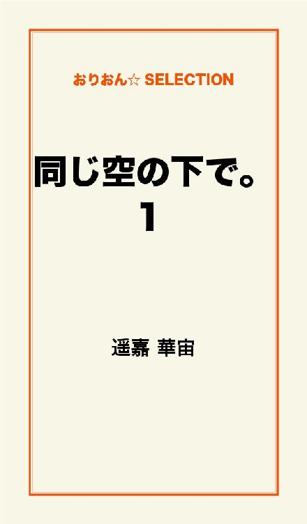
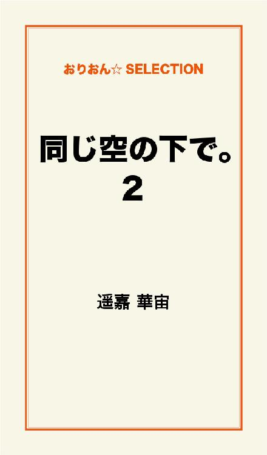
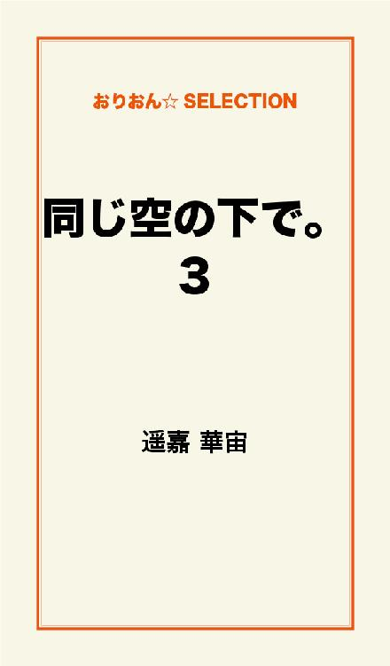

| 同じ空の下で。 完全版 | |
| 遥嘉 華宙 | |
この本は横書きでレイアウトされています。
また、ご覧になる機種により、表示の差が認められることがあります。

いつかバチがあたると思っていた。
誰が聞いてもこんな生活は正しくないと思う。
寂しさを紛らわせていた。
瞬の面影を求めていた。
朝が来るのが怖くて、寂しくて。
逢いたくて......。
『好きになりすぎて、ゴメンな』
心臓が高鳴りすぎて、自分が小刻みにゆれているのが分った。
なんであんな事しちゃったの？
酷いこと、言っちゃったの？
ひたすら後悔した。
なんで、寂しさに耐えられなかったんだろう......。
何故、静かに彼を待っていられなかったんだろう。
彼を......信じてあげれなかったんだろう。
あんなに......好きで、たまらなくて、愛しくて、愛されていたのに。
その時の切ない想いが、私の左手首にいつまでも残ってる。
それまでの私は、死んだんだ......。
瞬？
今、何処で何をしてますか？
あなたとの日々は、やっぱり忘れられない。
空を見上げると、あなたの声が聞こえるんだ。
瞬が、同じように空を見上げてるって、あなたを感じている。
隣に、私を大切にしてくれる人が居ても......。
私の中から、瞬はなかなか出て行ってくれないんだよ？
どうしたら、居なくなってくれる？
本当は......あの頃に、戻りたい......。
幸せだった、あの日に......。
和哉と出会って3年が経とうとしていた。
和哉は職場が違うけど同じ会社。去年から一緒に暮らし始めた。
早く家から出たかった。収入も安定してきたので私が｢1人暮らしを始めたい｣と言ったのがきっかけだった。
冬は和哉の仲間とスノーボード、夏は和哉の仲間と海水浴とバーベキュー。キャンプなんかもした。
和哉は春から夏にかけてサーフィンにも行く。私が一緒に行ったのはほんの数回。それ以外はアパートで自分の時間を過ごした。
和哉の帰りを待って料理をしたり、友達と出掛けたり。冬はとにかくスノーボードに2人して狂ったように出かけていた。仕事が早く終わればナイター、休みの日は朝から一番乗りのゲレンデに立ち、ナイターまで滑っているのが普通。
和哉は、サーフィン、スノボー、スケボーにハマっていった。
逆に私は和哉のペースに追いつけないで......家で過ごす事が好き......。
煙草をくわえて、見たかった映画をぼんやり見ている方が楽しかった。
｢一緒に住んでいるから」
和哉は私に沢山の『自由時間』をくれるようになった。
そう......彼の頭ん中、『板もの』で一杯になりはじめていた。
私の事なんて、きっとどうでも良くなったんだよ。
だから、私も、好きにする。
それが、一番、心地いい。
変に気を使わなくて、一番良かったんだ。
和哉がくれる自由時間の使い方も当たり前になってくると飽きるもんで......。
いつの頃からか私は顔の知らない｢3つ年下・セブン君｣と頻繁にメールをするようになっていた。
もちろん、和哉の居ない時間限定☆
別に恋愛目的じゃない。
浮気したかった訳じゃない。
なんつうか......。
『刺激』
毎日同じ生活の繰り返しで、ちょっとした生活の変化というか潤いというか......。
何となく｢地域密着型コミュニティー掲示板｣を覗いたのがキッカケだった。
〈姉さん。今日も仕事疲れたよ。でもあしたから休みぃ☆......でも暇だ。〉
《お疲れ～☆休みならいいじゃん！一杯休んで暇を満喫するのも悪くないよ》
＜姉さんは休みじゃないの？＞
《休みだよ。私、今彼氏に放置されっぱなしだから適当に過ごすの慣れっこなんだ☆友達誘ってランチ行くかな》
どーせ和哉は朝一番でスノボー。
そのメールから1時間、セブン君からは返事が来なかった。
別に気にも止めずボーっとテレビを見て、お風呂に入って、ベッドに入った。和哉は残業でまだ帰ってきていなかった。
＜ねえ、明日姉さんをレンタルしに行ってもいい？＞
......。
≪それは会うって事？≫
さすがにマズいよね......。私の中の天使は大きい声でそう叫んでいた。
＜俺っていう女友達とランチしよ♪＞
和哉以外の男の子からなんて考えた事もなく、嬉しい誘いだった。
でも『賭け』でもあり......迷いに迷い、私の中の小悪魔がメールを返した......。
≪オッケェ♪楽しみにしてるぅ☆≫
和哉の帰りを待たずに眠りについた。
翌朝、和哉が居なくなったと同時にセブン君と待ち合わせて、ドライブに出掛けた。和哉は休日出勤となったらしく、お弁当を持って忙しく出て行った。
｢アン、帰りも分かんないや。遅くなるかもしれない。昨日、トラブってさぁ。休みなのにごめん｣
｢いってらっしゃい。気をつけてね｣
満面の笑顔で和哉を見送る。
私、いつか絶対バチが当たる......。
初めて見たセブン君は和哉と違って、綺麗な顔立ちの切れ長の青年だった。
とても彼女が居ないとは思えない。
和哉は......どちらかというと不細工で、決してかっこよいとは言えない。
｢ごめん。かなり勇気がいったよね｣
セブン君が言った。何も言えずに言葉を探す。こうゆう時、何て言えば相手は傷つかないのかな......。
｢だ......だいじょぶです｣
とっさに出たこの言葉。
なに年下に敬語使ってんだろ。
｢彼氏が居るって解っていても、どうしても会いたかったんだ。ゴメンね｣
｢ハハハ！一番写りがいい写メ送ったの。ガッカリしたでしょ。こっちこそゴメンね｣
｢ううん。違うの。俺の会社に居る、総務課の憧れの人によく似ている。今、ドキドキしてる......｣
あらま。
それはそれはまた、嬉しい事言ってくれる☆
年下のイケメンに言われ、悪い気はしなかった。
耳まであっついのが自分でも良く分かった。
｢じゃ、俺の唯一の恋人、セブンとドライブと行きましょうか☆北？南？｣
｢じゃ北！｣
｢りょうか～い☆｣
南には和哉が居る。仕事だって解ってるけど、何となくそっちへは行きたくなかった。
大音量の爆音と音楽で、セブンは走り出した。
私の罪悪感もぶっ飛ばせ！
セブン君は隆之と言った。いつも私を｢ねえさん｣と言ってたけど今日からは｢アンナちゃん｣となった。
一緒にご飯食べて、沢山話をして......何だか緊張なんてすぐ無くなって。昔から知ってる友達みたいなノリで、すぐ意気投合。
｢ねぇ、プリクラとろー｣
｢お！いいねぇ☆｣
......って、ほんとにいいのか私。
｢つうか、彼氏、だいじょぶ？｣
｢......だよねー。証拠を残すのは......まずいよね｣
｢......辞めとこっか｣
｢ゴメン。隆之......｣
｢謝んなよー。アンナちゃんが泣くのはやだからさー｣
車に戻り、また他の話で盛り上がった。そして......タイムリミット......。
｢また、会える？......かな？｣
隆之が、呟いた。
｢楽しかったよ！ ほんと、久々に思いっきり笑った！......だけど......｣
｢だけど？｣
｢私もまた会いたい。でもそんなに器用じゃないし......。ごめんね｣
｢ま！ また盛り上がりたくなったら連絡して！｣
｢そだね！｣
このノリ、心地良い～☆
｢じゃあ。またいつか......ね｣
｢うん。気が向いたら連絡ください☆｣
夢から覚めるかのように......自分の車に戻った。
和哉に秘密を作った罪悪感と、もうどうにでもなれーっていういい加減な自分が信号待ちみたいに......何度も何度も色を変えていた。
日が経つにつれ、和哉を心の中で悪者にしてる自分が居た。
｢私を放置しすぎ｣
でも、口には出せずに私は密かに隆之にメールをしていた。
一度じゃなく、何度も何度も......。
私と隆之は二週間ペースで遊んだり、飲みにいったりする仲になっていった。
和哉には｢女友達とその彼氏｣と上手に嘘をつけるまでになっていて、迷いももう無くなっていた。
隆之と出会って3ヶ月、突然メールのペースが落ちた。
〈やほー。元気してますか？〉
《元気だよー。でも今、山形に出張中～。でさぁ、週末に帰れそうなんだけど、会えない？》
〈だいじょぶだよ～。連絡が少ないから病気でもしたのか心配 だったよ。元気なら良かった〉
《忙しいってのと......、ちょっと考え事と......。とにかく色々あってさ～。お土産買ったからお楽しみに☆》
＜わーい＞
隆之のメールはとにかく嬉しかった。無条件に。でも恋愛っていうかって言ったらそれは違う。なんていうか......
『山口さんちのつとむ君』みたいな、いつも居る公園に来ない仲良しの男の子......っていう表現が一番いいかな。
和哉はそんな私に全く気がつかない。そして、私を疑わない。
私も私で罪悪感の微塵もなく、上手に和哉に嘘をつけるようになっていた。
和哉との出会い。
和哉は、私が初めての彼女だった。
3年前、ファミレスでご飯を食べた後、無邪気にチョコレートパフェを食べていたのが印象的。
｢男同士だとさ、頼むのも恥ずかしくて｣
私は周りを見渡した。
｢喫煙席見て。窓際の男の人2人......｣
｢あ......｣
30代くらいかな。男の人が2人でフルーツパフェと白桃のパフェを食べながら楽しそうに話をしているのが見えた。
｢俺、プライド高いのかな｣
｢そうかもね｣
笑いながら私はアイスミルクティを飲みほした。
その後、近くの夜の公園を歩いた。
和哉はブランコに座ると私を隣に呼んだ。
｢最初は......、スノボの仲間にって思ってたんだ。俺ら、チーム作ってて。そのチームメイトにどうかなぁって｣
｢ふーん。楽しそうだけど......面倒臭そ｣
「仲間で滑るのも、楽しいよ？でもね......、あの......」
「何？ハッキリ言ってよ？」
｢でも今は違う。何て言えばいいのかな。......1人の女性として見てしまう自分が居て......｣
｢女扱い、受けた事ないし～。女性とか言われてもピンと来ないな｣
｢そうじゃないんだ｣
｢？｣
｢生まれて初めて勇気を出すんだけど......｣
もしや......これって？
｢俺の彼女になってくれませんか｣
私は黙るしかなかった。
和哉はハッキリいって好みの顔じゃない。ただ、性格はとても良い。少し強引な面もあるけど、今までの友達デートでも一度も私からお金を取る事はなかった。悪くはないけど......正直、迷った。
｢勇気を出してくれてありがたいけど、すぐには返事出来ない。少し時間を下さい｣
丁寧に返事を返した。
｢いい返事を待ってるから｣
｢期待しないで。期待されたら困る｣
笑いながら言った。
翌日、同僚の佳奈にこの話をした。
｢えーマジで！？良かったね。で、どうすんの？｣
｢佳奈ならどーする？｣
｢和哉君かぁ......断るかな｣
｢だよねぇ......｣
そう。どちらかと言えばその類。
彼氏選びの基本は......。
女友達受けは良くなければ！
溜息が出た。
最後の彼氏と別れて一年。自由を満喫！ 沢山の人と飲みにいったり楽しく気ままに過ごしてきた。それが出来なくなるのもまた......悔しい！
｢でもさぁ、杏奈が悪い気がしないなら付き合ってみたら？ボランティア精神で｣
カフェオレに口づけながら佳奈が言った。
｢う～ん......｣
｢悪い人じゃ、ないんだけどねぇ......｣
2人の口から同時に出て、笑った。
結論。
｢今時珍しいほど純粋。誠実そうな。私自身が泣かないであろう｣
沢山の人に相談して、和哉と付き合ってみる事にした。
『私は飲みに出るのが好き。沢山の人と話をしてみたいし、色んな人の価値観も勉強したい。束縛は勘弁して』
......という条件付きで和哉の恋人になった。
専ら、佳奈には驚かれたけど。
｢和哉君の友達にいい人いたら紹介してね～｣
とだけ言われた。
佳奈はただの同僚じゃない。高校からの親友で......今までの私の男関係やら悪事やら......全てバレてる。
イタズラに私を笑った。
高木和哉、24歳。彼女いない歴24年。
その歴史を私が変えた。
和哉は私の返事と共に私を抱きしめた。そして、
｢ありがとう！ 大切にする！｣
｢......よろしくお願いします｣
最後まで迷いました......なんて、言わないでおこう。そんな事言ったら、私は地獄に堕ちそうだ......。
高校時代のクラスメートから久々に電話が来た時、私は隆之と一緒だった。
運転する隆之と手を繋いでいた。
『杏奈？ 久しぶり～』
｢おお！ もしかして紀香？久しぶり～｣
『てか今電話大丈夫？』
｢あ、あの今はちょっと......｣
『あれ～彼氏？』
｢いや、違うけど......。後でこっちからかけ直すよ｣
『分かった～。ゴメンね～』
紀香は電話を切った。
昔、同じ男を好きになり、結果は紀香の勝利だった。羨ましい位の大きな瞳。少し茶色がかっていた。肌は透き通るように白く、フランス人形のような紀香は、女の私からみても可愛い。美しい。
でも、魔性だ......とも言えた。
｢隆之ゴメンね｣
少し強めに隆之の左手を握った。和哉とは違い、柔らかい手。
｢アンナちゃんの彼氏かと思ったよ｣
「高校時代の友達。魔性のオンナ♪」
「へぇ！ 居るんだ、そうゆう人」
「居るの」
隆之は山形のお土産をくれた日、
｢正直に話すね｣
......と、真剣に私の目を見て話し始めた。
｢初めに会った時、実は適当にエッチしてセフレにでもって思ってた。でも、アンナちゃん、違うんだよね。全然そんな雰囲気じゃなくて、一緒にいると和んでて、俺をもっと知って欲しいとか、アンナちゃんをもっと知りたいとか......とにかくヤリたいって気持ちが無くなって。俺、あんまり人に自分を開かないんだけど。アンナちゃんを適当に遊んでポイッなんてしたくなくなってきたんだよ。で、山形に行って......何を考えていたかって、四六時中、アンナちゃんの事を考えていて。彼氏が居るのが分かっていても自分の気持ちは抑えられなくて。
アンナちゃんの事を真剣に好きになったみたいなんだ｣
｢隆之......｣
涙が出た。
｢彼氏と別れて俺と付き合ってとか、そんな事は望まない。でも、今までみたいに会いたいなぁって｣
隆之のストレートな思いに押しつぶされそうになった。
目の前が涙でぼやける。
｢てか、何で泣いてんの～？ 俺、悪者みたいじゃん！｣
｢......隆之、ごめ......｣
しゃくりあげるように泣いた。涙の理由は何だろ。隆之をそんなにまで追い詰めた自分への後悔？
何より......隆之は、私が和哉と別れる事を望まないと言ってくれてる事に酷く心が痛んだ。
｢あースッキリした。何か、言いたい事言ったらお腹すいた～。何か食べに行こっ？｣
｢......うん｣
それから私達は少しだけ親密になった。体の関係とかはないけど。隆之がほんとに私を大切にしてくれてくのが分かった。体を求める事もなく、いつも私を笑顔に導いてくれた。いつの頃からか......私も隆之に愛しさを感じ、車の中でだけ、手を繋いだりしていた。
私は、本気で、和哉との事を清算しなければいけないなぁと思った。
和哉を愛しいか？と聞かれたら、答えは「NO」。
「ただいま～」
「おかえり～。今日は俺がご飯作ったよ」
「え～？？ 何々？？？」
テーブルにはカレーライスが準備されていた。和哉が作るカレーはチキンカレー。味は美味しいとは言えないけど、作ってくれた気持ちは嬉しかった。
「美味しい～～☆」
......そして、ますます......別れを切り出せなくなっていた。
その夜は、見返りを求めるかのように、和哉は私のベッドに潜り込んできた。そして......キスをする。服が脱がされていく。
和哉に愛は無い。
ゴム人形のように、私は和哉に抱かれた。
「あ。電話しなきゃ！」
終わった後、タバコをくわえながら、昼間の紀香からの電話を思い出した。
「あ。紀香？ 夜遅くごめん！ 忘れてた！」
「忙しかったんだね～。でさぁ、来週の火曜日なんだけど、何かある？」
「普通に仕事だけど？」
「仕事の後、時間ある？」
「あ、うん。いいけど......」
和哉を横目で見ると、サーフボードの手入れをしていた。
「紀香、今、私、彼と暮らしてんの」
和哉にわるいんじゃ無い。隆之の笑顔が浮かぶ。
「あ～！ 合コンかと思った？ 違う違う。えーっと詳しく話すね......？」
紀香の話だと、来年の1月に市内の3つの中学合同で、同窓会があるらしい。その事前準備というか、打ち合わせが来週の火曜日にあるというのだ。
「都合よければ、来て。ほら、杏奈って高校の時とか生徒会やってたじゃん？ 向いてるかな～なんて」
笑いながら紀香は言った。
確かに私は生徒会だったが遅刻の常習犯。偉いとか......ない。
「うん。じゃ、とりあえず行ってみるかな？」
「じゃ、来る時電話して！」
「わかった」
電話は切れた。
和哉にこの事を話すと、笑顔で行っておいでと言った。
いつも同級生、言わば昔からのなじみの友達が、和哉の周りにはいた。私はそれが羨ましかった。これからもし、和哉と結婚となった時、結婚式には誰を呼んだら良いんだろう......なんて考えた事もあった。
何となく、来週の火曜日が楽しみになっていた。
紀香のほかにも誰か来るかな？中学の友達とか......来るかな？
その夜は、興奮して眠れなかった。
火曜日を迎え、仕事が終わると、私服に着替えて、紀香の言った場所にいった。
......。
タバコの煙、ガラの悪そうな男たち......。
あれ？ 間違った？ と思った時、後ろからポンと、肩をたたかれた。
「おつかれさ～ん」
紀香だった。
「部屋、間違ったかな？」
「ううん、ここだよ。あ、じゃ、紹介するよ」
ガラの悪そうな男たちは、紀香の中学時代の同級生だった。毎日和哉を見てる私には、非日常な光景だった。金髪の男、ひげ面の男、なんかでっかくて太いピアスを耳に引っ掛けてる男......。あ、でも、あのスーツの人はまともかな？
「なんかさぁ、女子の集まりが悪くて......」
でも、小一時間で人が続々集まり、高校の同級生の美優、里佳子、高校時代の彼氏とか、知ってる顔がどんどん増えていき、安心した。
話し合いが始まり、私はなんだか、色々とやるﾊﾒになった。
紀香は詳しく話してはくれなかったけど、同窓会の後にも6ヵ月後にイベントがあるらしい。それまでの活動をしていかなければなかった。
少しわくわくワクワクした気持ちと、和哉の反応が気がかりだった。
それからの私の生活は一変した。
毎日のように仕事の後に打ち合わせがあり、会社が終わると、慌ててアパートに帰り、ご飯を作って自分も食べて打ち合わせに向かう日々だった。
時々、仕事でも残業や出張があって、そんな時は和哉には「ゴメン」とだけ、メールを打った。
打ち合わせの最中に隆之からメールが入った。そういえば、隆之にはこの事話してなかったな。
《今度の週末、会えるかな？》
無理だ、週末は、打ち合わせが......。でも、この事をきちんと話しておかないと。
「ごめん、席、外すね」
隣の同じ係りの男に話して、部屋を出た。
隆之の番号を探し、発信する。
私の目の前に、神妙そうに電話をしてる男がいた。耳にはでっかいピアスだ。こっちをチラッと見ると、微笑み、手を振った。
......軽そう。嫌だ、こうゆう男。
でも、とりあえず、手を上げて、返してはみた。
名前は、まだ覚え切れてない。
隆之が電話に出た。
「ごめん、週末はさぁ......」
私は、紀香からの電話の一連と近況を手短に、隆之に話した。
『そっか......アンナちゃん、忙しいんだ......』
寂しそうに隆之が呟く。
「そのうち、時間作るから！」
『いいよ、無理しないで。でも体を壊さないでね』
隆之は言った。
今すぐ抱きしめたい気持ちと、ｷｭﾝとなった時、隣で電話をしていたピアス男が声を荒げた。
「......んだよ、勝手にしろよっ！！！」
『......あ......アンナちゃん？』
隆之にも聞こえたらしく、驚いたように私に問い掛ける隆之。
隣の人だよと、声を潜めた。
｢......また時間できたら連絡するね｣
そう告げると、私は電話を切った。
ニヤつきながらピアス男は、私の様子を見ていた。
「なに？」
「ラブラブでいいねぇ～」
ピアス男はポンっと私の頭に右手を置いた。
なれなれしい！
男の手を思いっきり払った。
「一回触ったら、１０００円ね！」
右手を男の前に出してやった。
ピアス男はキョトンとして私を見たけど、
「おおぉ～こわ～」
と部屋に入っていった。
苦手だ。ほんとチャラチャラして嫌だ。
そんな雰囲気で1ヶ月が経とうとしていた。あと数日で、新しい年を迎える。
会議が終わると、まっすぐ家に帰っていたのは、2週間くらいで、3週目くらいから、美優たちとカラオケにいったり、ご飯を食べに行ったり、飲みに行ったりと、私はどんどん、和哉を気にしなくなった。
でも、時間を作って、隆之にも会いたいとも思っていた。
隆之の事は誰にも話してない。
翌日、平日だったけど、仕事の後、隆之に会う約束をした。同級生達には「残業」と言い、和哉には「同窓会の打ち合わせ」と言い、隆之との待ち合わせ場所に向かった。
最近買った、お気に入りの『ポールスミスウイメン』のコロンを振りかけた。
「久しぶりだったね～」
「寂しかった～～！」
私たちは言葉を交わした。
そして、隆之と夜景を見に行った。
風が気持ちよかった。
そっと、隆之が私の肩を抱いたので、私も肩にもたれかかった。
「私、自分の役割が済んだら、彼氏と別れようと思ってる。それで、隆之と一緒に堂々と街を歩きたいと思ってるんだけど、都合良過ぎる？」
「うん。でも、そんな日が来ると思うと、許しちゃう。アンナちゃん、悪女だね～」
「うん、悪女だよ～」
本当に都合がいい話だと思ったけど、隆之が本心からそういってないのは、よく分る。
大好きな隆之の左手を取り、自分の頬に持っていった。そっと、唇をあてた。
「ゴメン、俺、もう......我慢限界！」
抱きしめられたかと思うと、両手で頬を押えられ、隆之の唇が私の唇に触れた。
もう、私も我慢の限界だった。
純粋に、隆之の事が好きだった。
ホテルの天井を眺めながら、生まれたままの姿で隆之の腕枕に酔いしれた。
「アパートに......帰りたくないなぁ」
「帰したくないなぁ」
その後も、何度も何度もキスをした。
そして、また、重なる。
和哉からのメールが鳴っているのが聞こえた。
「......あ......隆之ぃ......」
その後、電話が鳴った。
和哉からの電話じゃないのは分る。
切ろうと思って電話を見ると、知らない番号だった。
「......だめ！ 離さない」
「......あん、待ってよ」
隆之が後ろから抱き、胸をわしづかみしてくる。
何度も首筋にキスをする。
「ダメだよ......あ」
隆之の手が下にどんどんのびていき、たまらない快感が私の中を駆け巡る。
電話の邪魔をするかのように、隆之は私の胸にキスを続けた。
「あ......はい？」
平静を装い、電話に出ると男の声だった。
『よっ！ 俺～』
「はっ？」
なおも、隆之のキス攻撃は続いた。だめだ、声が出そう......。
『お取り込み中？』
「うん、かなり......」
『じゃ、また後で』
「何？ てか、誰？」
私が少し怒ってる口調を聞いて、隆之のキス攻撃が止まった。
『瞬。昨日も会ったじゃん？』
「その意味ありげな言い方、やめてくんない？なんで私の番号知ってんの？」
この軽いノリは、あいつだ。ピアス男。
『なんで、今日は居ないのかな～って。寂しいよ、俺』
「関係ないじゃん」
ピアス男が酔ってる気がした。
『今度俺の相手もして？』
「死んでもムリ。じゃね」
頭にきて電話を切った。
「だいじょぶ？ イタ電？」
「そんな類かな。なんか、軽いやつで、チャラチャラしてて、一番嫌いなタイプ！」
「怒ってるアンナちゃん、可愛い！」
また、隆之のキス攻撃が始まった。
｢ねえ、結婚して何が変わるかな？｣
｢え？ アンナ、結婚すんの？誰と誰と？｣
コイツに聞いた私がバカだったよ。
朝から雪が降っていた。もう、ウンザリだったけど、和哉は会社を早退して滑りに向かった。今頃、美味しく新雪を頂いて興奮しているだろう......。昔の私なら和哉と一緒に行っていた。
今日も会議と称してみんなで事務所に集まっていた。そして、誰かがお腹がすいたと言い出すとみんなお腹がすいたと言い出し、弁当を頼む事になった。弁当を取りに行く人をジャンケンで決めようとジャンケンを始めたら、見事に私とピアス男、瞬が罰ゲーム。
私は瞬の助手席で、和哉が言った｢結婚｣の言葉の意味を考えていた。
和哉がそろそろ籍を入れないかと、ご飯を食べながら言った。私は、忙しくて、まだ別れたい気持ちを隠したままだった。
籍を入れたい気持ちがまだナイと正直に言った。その後、別れたいと告げるべきだったけど、和哉の私を疑わない目をみると、言えなかった。
｢アンナは、籠の中の鳥になるよね｣
瞬が言った。
｢私は、紙一枚の契約書だと思うの。契約に違反したら、離婚という裁きを受ける｣
｢てかさぁ......、前から思ってたんだけど......｣
瞬が右にハンドルを切りながら、言った。弁当屋が見えた。
｢アンナって、何に対しても、冷めた考え方だよね。普通、女の子は結婚を契約なんて思わないと思うけど？ 浮かれるんじゃない？｣
｢瞬は、そうゆう女にしか出会った事ないんだよ？｣
｢そうじゃなくて。好きな人や愛する人と一生を共にするなら、嬉しいってのが普通の感覚じゃないの？ って言ってんの。素直に喜ばない訳？｣
｢喜びの感情はなかったな。｣
｢じゃ結婚はすべきじゃないと思うけど？｣
弁当を瞬が受け取り、私がみんなから集めたお金を払った。
｢でも、コレを逃したら、一生結婚できなそう｣
一生独身とか。
あ、でも隆之がいるか。結婚してくれるかな？
｢アンナみたいな面倒くせー女と一緒に居たがるなんて、よっぽど変わり者だな～｣
真顔なのか笑ってるのか分からない、中途半端な口調で瞬が言った。
｢でもさ、ガ・ン・バ・レっ！｣
瞬がまた、左手を私の頭に乗せた。
｢さわんなっ！｣
自分の声に驚いた。
瞬の手を払い、怒鳴っていた。
車の中は沈黙が続いた。
瞬は、前のバスの広告を指差した。
｢行った事ある？ このホテル｣
｢ナイ。......瞬は常連？｣
｢......去年の暮れに彼女と行ったけど、そこで別れ話。何もしないで帰った。以上｣
｢......高くついたね。カワイソ｣
｢今度、一緒にいこうな♪ なぐさめて♪｣
｢ムリ｣
苛立ちながらも無表情で答えた。
私はそんなに軽そうに見えるのかな。
｢......ねぇ、......冗談でも『うん、行こうね☆』とか言えよぅ。俺、今、寂しいんだからさぁ｣
｢淋しいからって......ひどいよ！ 面倒臭い女で悪かったね！｣
｢あ。傷ついてた？ ゴメンね♪｣
......また私の頭をグシャグシャと触る瞬。
軽く払いのける。
瞬と一緒にみんなの所に戻った。
タケルの横に座ると、できたてのお弁当を頬張りながら、タケルに瞬の事を愚痴りまくった。
タケルは、私の【一番の理解者】だと勝手に思い込んでる。
話をすれば同感する事が多い。頭がいい。考えを上手にまとめて、分かりやすい説明をいつもしてくれる。
唯一の『男の親友』とも言える存在で、加えて、私を女扱いしない。イヤらしくない。
性別を越えて人と人との付き合いが出来る存在だった。
｢......あぁ、もぉ、むしゃくしゃする！ タケル、終わったら、飲み行くよっ！｣
｢瞬と何かあった？｣
｢アイツ、ムカつく｣
クスッとタケルが笑った。
｢俺は好きだけど？ あの性格｣
｢タケル！ 飲み行くの？ 行かないの？ どっち！？｣
｢いいよ。行こっか☆｣
優しい笑顔で『やれやれ』と言うかのようにタケルが言った。
この優しさに......。
いつも救われていた。
確かに、瞬は正しく、正論だと思う。
好きな人と結婚するなら素直に嬉しさを感じる。
多分、相手が和哉だから、悩んでいると思う。
図星だから......腹がたった。
そして、面倒くさい女呼ばわりに、カチンと来た。
瞬との会話を全てタケルに話し、愚痴を聞いてもらうと一気に気持ちに余裕ができた。
あー、スッキリしたっ！
｢......瞬みたいのは、ダメなんだね（笑）｣
｢瞬ね！ 瞬が嫌なの！ 関わりたくない！ 構わないで欲しい！｣
感情的な私をタケルは優しく笑い、ビールを注いでくれた。
とても気分良く酔っていた。
その時、店の戸がガラッと開いた。
もう......ヤダ。
そこに居たのは瞬だった。
｢タケル、私、帰るね｣
タケルに耳打ちすると、３０００円をタケルに差し出した。
｢要らない｣
｢取って。私が誘ったんだから。ほらっ！｣
｢ホントに要らない｣
タケルは優しい。
｢......いつもごめん。ご馳走様です☆｣
お金を財布に戻すと店の人にタクシーを頼んだ。
｢なぁに？ 2人してラブラブじゃ～ん｣
案の定、瞬が絡んできた。
｢そうゆうんじゃないよ～｣
｢相談に乗って貰ってたのっ！ 変な勘繰りやめて｣
｢えっ？ じゃ次は俺誘って～？ 俺に相談して～？｣
するもんか！ バカ！
「じゃあ、タケル、ご馳走様！」
「気をつけてな」
「......おい、待て？ アンナ、帰っちゃうのぉ？ ......俺を置いてぇ？」
......あー、うざい。
「......門限だから。バイバイ」
タケルは、俺は何もしないよ？ 風な顔で、私達を馬鹿にしたように見ていた。
「じゃあ......俺も帰るか」
「はっ？ あなたはここで飲んでたら！？」
ついてくんな！
全く。
......ほんと関わりたくないわ。
「......いっけな～い！ 門限だわ！」
時計を見る振りをし、女の子口調でふざける瞬......。
......もう、何も言いたくない程......、呆れてしまった。
無視してタクシーに乗り込むと、瞬が乗り込んだ。
「密着度１２６％。心拍上昇中......♪......やっとまた、二人きりになれたな♪」
............降りてくれ。
二人きりは......勘弁だ。
｢降りてよ｣
｢運転手さ～ん、出して下さい。｣
｢ちょっ......！｣
どうして、私に関わってくるの！？
｢私、他でタクシー拾うから！どいて？｣
降りようとした。
が、瞬が邪魔で降りれない。
運転手さんが流石に苛立っているのがわかったので仕方なく行き先を告げた。
｢私に関わらないで｣
｢そんなに怖い顔しないで。女の子を送ってあげるのが紳士ってもんでしょ？｣
｢酔いに任せてしか女を口説かない奴は最低だと思う｣
｢酔ってないよ。俺さっきまで事務所にいたよ？｣
｢あっそ。それなら尚更、言いやすいわ。私に関わらないで。瞬が居るだけでムカつくの。存在が嫌なの！｣
｢......随分、嫌われてんだなぁ。俺はアンナが気になって仕方ないのになぁ｣
｢何百人の女がその手に引っかかったのか知らないけど、そうゆう所も更に嫌。うんざり！吐き気がする！｣
｢わかったよ......もう、構いませ～ん｣
......両手を挙げて、瞬が馬鹿にしたようなふざけた口調で私に言った。
その顔と態度に益々......
腹がたって仕方なかった。
苛立ちながらも何も言わずに居た。
瞬は馬鹿みたいにご機嫌に歌を歌っていた。
......しばらくするとアパートの近くのコンビニが見えてきた。
やっと......息ができる......。
｢すいません、コンビニで下ろして下さい｣
タクシーが止まると私は瞬を押しのけて、急いで降りた。
そして、瞬にお金を差し出した。
｢要らない｣
｢あ、そ。ご馳走さま｣
素直にお金をしまう。
｢じゃ、おやすみなさい。気をつけて｣
踵を返すと後ろから呟くような声で瞬が言った。
｢アンナ、ごめんな｣
その声に私は思わず振り返り、瞬の顔を見た。
だけどタクシーはすぐに走り去っていった。
その時の瞬の悲しそうな顔を、私は忘れられなかった。
............そう、一生。
翌朝、早めに起きた。
いつものように朝ごはんを準備して、軽くシャワーを浴びた。
和哉が起きてくると、2人で出かけようと話した。
助手席に和哉が座り、私が運転をした。
私の車で出かけた。
冬の海。
夏のような陽気はなく、寒さを強くするような寂しさに溢れていた。
海を眺めながら、アパートを出たいと和哉に言った。
今までの胸の内を、和哉に伝えた。
隆之の事は伏せた。
私の思いに......、和哉と私の関係に、隆之は関係してない。何より、隆之は、この事を望んでない。
でも、私は見事に汚れた。
この数ヶ月で、私は......、汚れきっていった。
「私は、和哉に相応しくない」
「なんで？ 好きな人、出来た？」
「ううん。私は......、もう少し、自分の足で......、和哉の助けナシで、自分の生活を築いてみたいし、まだ、結婚の決心がつかない。まだ......」
誰かに飼われたくない。
『籠の中の鳥』には、なりたくない。
瞬の言葉が......響いていた。
和哉は、とても低い声で泣いた。
あぁ。
男の人って、こんな声で泣くんだな。
何故か冷静だった。
帰りの車は、お互いが無言だった。
13個目の信号待ちで、私もやっと、涙が出た。
和哉との、楽しい思い出を......。誕生日のサプライズパーティーを......、イルミネーションの人ごみの中、キスをした事を......、無邪気に、チョコレートパフェを食べる和哉を......。
涙が止まらなくなった。
ごめんなさい、和哉。
本当に、最高の彼氏だったと思います。
幸せに、なってください。
もっと、いい人に出会って、愛されて下さい。
いっぱい、ウソをついてごめんなさい。
その後、新しいアパートが決まるまで、和哉との生活を続けた。
別れ話をした夜、和哉は、激しく私を求めた。
抵抗すると、お腹を蹴られ、頬に平手打ちを何度も受け、腕もちぎれそうな位押えられた。
19歳の頃に受けた、レイプを思い出し、体が小刻みに震えていた。
それでも和哉はやめなかった。
もう、感情もなく、和哉の心の痛みを、悲しみを、体で受け止めるしかなかった。
翌朝、首には、紫の痣、いわば、キスマークが3つもついていて、頬も腫れ、脇腹にも青あざがあった。腕にも、痣があった。
その後、和哉の実家にも行き、別れた事を、言わされた。何故なの？と問いただされ、和哉に伝えたままに話した。
痣は、自分で転んだと、説明した。
「さっさと子供を宿してしまえばよかったのに」
和哉のお母さんが、つぶやいた......。
それが聞こえた時、この家に、嫁がなくて本当に良かったと安堵した。でも、土下座した私の頭は、上げれなかった。
和哉の家族と、目を合わせるなんて、無理だった。
和哉は、まったく何も言わなかった。
和哉の実家から、一人、アパートに戻った。
そして、一人、泣いた。
『籠の中の鳥』
大空を飛びたいけど、飼われてるから、飼い主の許可なしに、籠からは出る事が出来ない。
ふと、瞬のあの悲しそうな顔を思い出して、瞬の電話番号を探した。
発信すると、2コールで瞬が出た。
「瞬、ごめん」
「え？ 何の事？」
「この前の夜、言いすぎたなぁって」
「ああ」
しばらく沈黙が続く。
「それ言いたかったの。忙しかったよね。切るね」
「大丈夫。......じゃ、許すからさ、今度、俺のために時間作って」
「......いいよ、別に、いつでも」
もう、飼い主は居ないから。
「よし！じゃ、今から行くから！」
一方的に、電話が切れた。
こんなひどい顔は見せられない。痣も、首筋の......和哉の悲しみも......。
腫れあがった目も......。
10分後、電話が鳴った。
瞬だった。
「この前のコンビニに到着。迎えに行く？」
「......自分で行くから。時間、潰してて」
手首に、湿布を貼り、瞬に見えないように隠し、アパートを出た。
瞬は車の中で待っていた。
「お待たせ」
私の顔を見て、瞬は固まった。頬の腫れは少しまだ残っていて、まぶたの腫れもメイクして隠したんだけど、やっぱ、わかっちゃったみたいだった。
「ま、座って」
助手席に乗り込むと、瞬の車は走り出した。
信号待ちのときに、携帯電話を落とした。
拾ってくれようと、瞬が手を伸ばしたと同時に、湿布が見えてしまった。瞬は、触れようとしたようだったけど、後ろの車にクラクションを鳴らされ、車を走らせた。
「何処にいこう？ 何処いきたい？」
「どこでも。今日は主導権は瞬でしょ」
「じゃ、俺に任せてくれるんだ？どうなってもいいのかなぁ～～？？」
瞬がふざけた。冗談なのは、分ってる。でも、和哉から受けたあの夜を思い出してしまい、震えが止まらなくなってしまった。
「悪い、冗談だよ」
「わ......分ってる」
震えが、本当に止まらなかった。
「ちょっと、どこかに車を止めよう」
「いや、いいよ。このまま好きなところに行って。私は大丈夫だから。すぐおさまるから」
「分った。じゃ、俺のすきな場所に」
いつの間にか、瞬の助手席で私は眠っていた。
そして、不思議な夢を見ていた。
とても心地の良い、優しい気持ちになれた夢で、顔の見えない誰かが、「大丈夫だよ。俺に任せて」と、私の髪を優しく撫で、包み込んでくれた。
助手席のシートが倒れていたので、瞬が気を利かせてくれたのが分った。
「ごめん」
「疲れてたんだね」
「私、最悪だなぁ」
「助手席は、寝ちゃ駄目なんだよ！」
女の子口調で、瞬がふざけた。
「もうすぐ着くから」
「？ どこに来たの？」
「俺だけのプライベートビーチ☆」
遊びなれてる人って、凄いなぁと、瞬に変に感心していた。
「ちなみに、アンナが、前に俺に言ったよね？ 何百人の女の子って言ったけど」
「ああ、言ったっけ。言ったかも」
「まだ、俺は一桁台。残念でした～」
「へ～！ 意外と真面目なんだね～」
「人間、見た目じゃないっしょ？」
「そうだね」
和哉も、あんな事をする人じゃないっと思っていたけどね。あ、でも、私が悪いのか。和哉の人格まで変えちゃったのかもな......。
「なんか、ほんと、疲れたなぁ～......、ここんとこまともに眠ってなかったし」
「......無理に、俺に話さなくてもいいよ、アンナ」
蹴られた脇腹に、痛みが走っていた。
「さっ、ついたよ。降りて～」
そこは、真っ白い砂浜の海だった。
「少し、歩こうか。大丈夫？」
「うん、平気」
足は、大丈夫。
瞬は、黙って砂浜を歩いた。私も2歩くらい遅れて後を歩く。瞬の背中は大きい。小柄かと思ってたけど、意外と背が高かった。
最初は、何とかそんな事を思って、気を紛らわせていたけど、ここ数日の事、和哉との事を思い出して、私の視界が涙でぼやけた。
「やば、鼻水出る......」
誤魔化したつもりだったけど、瞬が止まり、私は、瞬にぶつかった。
瞬は、大丈夫？ と話すと、私の冷たくなった右手を掴んだ。
「あ、手を触ってもい？」
声も出せないほど、私はしゃくりあげるように泣いていた。瞬に分るように、うなづいた。
瞬は、私の右手を自分のジャケットのポケットにしまった。
とても、温かかった。
「泣きたい時は、泣くんだよ」
泣くだけ泣くと、落ち着いた。
「ゴメン、キャラじゃないよね」
自分に可笑しくなった。
「無理に笑顔作んなくていいよ？でも、すっきりしたでしょ？」
瞬の顔が優しかった。
「うん。ありがとう」
ジャケットから、手を離せないまま、また歩き出した。今度は、並んで。
「この海に来たかったんだ～！！ よく、蓮たちとサーフィンにきたよ～」
「瞬、サーファーなんだ？」
「今はおかサーファーだけどね」
「私も海、好きだから。今日は来れてよかったな。こんなに綺麗な海が近くにあったんだね」
「夏になるとさ、海と空の境界線がすごい綺麗でさ」
「瞬って、ロマンチックなんだね。意外！！！」
「ね。人は見た目で判断できないでしょ」
その後、自販機まで行って私はホットミルクティ、瞬は甘いホットコーヒーを買った。
「今日の門限は？」
「今日は......ない」
「じゃ、もう一箇所、付き合ってもらおうかな」
「うん、仮眠取ったからいいよ」
砂浜に座り、他愛の無い話をした。
今の私には、瞬に憎まれ口を叩ける元気はない。
今は、一人になるより、誰かと話をして居たかった。
瞬は、車の中でずっと話していた。私は、瞬の話を頷いて聞いて、時には自分はこう思うとか、ただ聞き役に徹していた。
こんな姿を見ても、瞬は私に何も聞かなかった。
ふと、時計をみると、夕飯時間だった。お腹が鳴ったので、途中でマックを買った。
「瞬、何処に向かってるの？」
「内緒」
「ホテルとか、やだよ」
「そんなに、俺の顔からエロオーラ、出てる？」
そうゆうわけじゃないけど。
「夜のデートは危険なんだよ」
そう、コンプレックスの歌。『恋を止めないで』
「そうゆう所に向かってないから。安心して」
そういえば、頭を気安く触ってこないなぁ。いつもの『アンナちゅわ～ん』もない。ちょっと、寂しい。あ、わたしが憎まれ口を叩かないから？
「もう一回聞くけど、門限、ないんだよね？」
「ない」
「なら良かった」
瞬が車を止めたところは山のてっぺんだった。
「え、やだ......」
夜景が見えた。
綺麗だった。
宝石箱がひっくり返ったような煌き。
隆之とも、別のところで見たな......。
「あ～......やっぱ、また今度にしよ。失敗。今じゃ無いほうが良かったなぁ」
「え？ 充分じゃん」
「違う」
「ふ～ん」
車を走らせた。
「送るよ」
「あ、うん」
アパートが見えると、悲しみがこみ上げてきた。
悲しみとも違う。なんていうか、思い出の多い、アパートは、辛かった。
「今日はまず、半分だから、あと半分、付き合ってよ」
「はぁ。いいよ。いつ？」
「こっちから連絡する」
「分った。今日はどうもありがとう」
丁寧に瞬に頭を下げた。
瞬は、投げキッスの仕草をすると、消えていった。
今日、これから皆のところに行く気にはなれなかった。
こんな、酷い姿じゃ......。
〈仕事が多忙中。しばらく、行けそうにもないです。皆に伝えておいて。〉
タケルにメールを送った。
すぐに
≪頑張って。こちらの事は心配いらないよ≫
と返事が来た。
せめて、痣が消えるまでは皆に会うのは避けよう。
なだれ込むようにベッドに入った。
瞬。
でかいピアスのチャラチャラした男。生理的に受け付けないと思っていたけど、今日、こんな酷い姿を見て何も聞かなかった。
何より、瞬に見せてしまった自分の弱さ。
それでも、何も言わずに泣かせてくれた。
それが、優しさなのか分らないけど、少なくとも瞬が居る事で、私は元気が出た。
ありがとうと、心から言いたかった。
朝方......いや、時計を見たら午前5時だった。
メールの音で目が覚めた。
≪今から迎えに行く。≫
はぁ？？？
何時だと思ってるんですか？
＜何時だと思ってるんですか？＞
≪ほんのちょっとでいいから付き合いなさい。命令です！≫
瞬......。
やっぱ最低だ。
慌てて着替え、ダウンジャケットを羽織った。
「おっはよ～！ アンナ。いい夢をみたかい？」
「つうか～......眠いんですけど。めっちゃ、迷惑なんですけど？？？ まだ、星がでてるんですが？」
「お。すっぴ～ん！」
やば！
化粧忘れてた！！
慌ててフードをかぶった。
「なんで、そんなにテンション高いんですか？」
「素晴らしい朝だからさ！」
右手の親指を私に見せる。
こうゆうの、嫌がらせっていうんだよね......。
外はまだ、闇だった。
「何処に向かってるの？」
「いいからいいから♪」
瞬が何処に向かってるか分らないけど、空が少しずつ明るくなっていくのが分った。
「着いた～！ 間に合った！」
着いたところは、昨日、夜景を見た山のてっぺんだった。
「降りて降りて」
「え～！？ めっちゃ寒いんですが？」
「いいからいいから」
「このまま置いてこうとかおもってんじゃない？」
「そんな事しないよ」
フードを被ったまま、車を降りた。
半端じゃない寒さだった。
「はい、どうぞ」
ホットミルクティを差し出された。
「どうも」
私は不機嫌だった。なんでこんな朝早くにこんな山のてっぺんに？
迷惑極まりなかった。タバコを咥えた。
瞬も、タバコを咥えた。
「あの山の上を見てるんだよ」
「ハイハイ」
静かに明るくなる山。
冬ゆえに、とても静かな朝だった。
瞬が言った山が、朝日で赤く染まり始めた。山は雪の白さから、くれない色に染まり始めた。まるで、ルビーの指輪のようだった。
私は呼吸を忘れて、その景色に釘付けになった。
「......き......きれい」
「俺の、たからもの」
言葉に出てこない美しさだった。
しばらく、寒さも忘れて見とれていた。
「これを見ると、新しい気持ちになる。俺、自分がへこむとここに来るんだ」
「に......日本の夜明けじゃ......」
私は坂本竜馬になったかのようだった。
「アンナに、見せたかったんだ」
「凄い！ 凄い！自然が作った産物だ！！」
私は、興奮した。
そして、真新しい朝を迎えた気持ちになった。生まれ変った気持ちになった。素直にこの風景を受け止める気持ちになって、清々しい気持ちになっていた。
「瞬、どうもありがとう。今日からまた、頑張れるよ。どんな事があっても、自分の足で立っていこうと思う」
瞬は、優しい顔で微笑んだ。
「応援してるよ」
私はまた、山を眺めた。
「俺も、幸せになってもいいかな？」
「幸せになる権利は誰でも持ってるんだよ」
瞬を見ようと振り向こうとした時、瞬が私を後ろから抱きしめた。人の温かさに触れ、また涙が滲んだ。
「アンナは泣き虫なんだな～」
瞬は、自分の親指で、私の涙を拭ってくれた。
朝日を背に、私たちはそのままキスをした。
新しい朝に。
生まれ変る為に。
自分の足で歩く為に。
祝福のキスをした。
長く、長く、何度もキスをした。
キスをしながらふと目を開けると、瞬と目が合い、お互い、拭き出した。
「何で、目をあけるんだよぅ！！」
「そっちこそ、なんで、見てんのよ！！」
でも、また、キスを交わした。
「アンナのキス顔、焼付けてたんだよ」
「私も、瞬がどんな顔してキスしてんのかみたかったの」
そして、また、何度も何度もキスを交わした。そう、映画のワンシーンのように。
さっきまで嫌いだった。
一週間前まで、本気で嫌だった。吐き気がするほど。
でも、これが瞬のやり方だったら、私は心地よかった。
瞬とキスをして、生まれて初めて、言葉に出来ない嬉しさを感じていた。
瞬は、私の傷ついた手首にキスをした。そして、首筋のキスマークにもキスをしていった。一箇所一箇所、丁寧に......。
「あとは？ 何処に？」
「もう、ないよ」
脇腹が少し痛んだ。
「アンナの傷が、早く癒えます様に」
私の首筋に手をかけると、苦しいほど、抱きしめた。
最後に、泣きはらしたまぶたにキスをして、おでこにキスをした。
「ありがとう」
「彼氏？」
私は頷いた。
「俺がぶん殴ってやる！」
「いいの。これが彼のやり方だったんだから」
時間はもうすぐ朝の7時を回ろうとしていた。
今日は月曜日。
「ふしだらな朝になったな」
「そうかな？ いいんじゃない？こうゆうのも」
瞬が車を走らせた。私は、瞬の左手を握った。瞬も握り返してくれた。
瞬。
大嫌いだけど、この日の事は、忘れない。ううん、忘れられない。
「そう、しばらく、私、事務所に行けないから」
「なんで？ あ......。こんなんじゃ、いけないよな」
野暮な事聞いてゴメンなと、また、頬にキスをしてきた。
「それもあるけど、仕事の方も忙しくて。内部異動で引継ぎがあって」
ウソじゃなかった。
先日の人事で、私は秘書のポストにつくことになった。
和哉と、顔を合わせることも、少なくなる。内心、ホッとしていた。
「寂しいな」
「喧嘩相手がいないと張り合い出ない？」
「調子が狂うよ」
瞬は力なく笑った。
「皆に宜しく伝えて。タケルには連絡してあるから。いつもの瞬みたいにさ、楽しくやっててよ。私が居なくても別にいーじゃん」
「次、いつ会える？」
「傷が癒えたら」
「ふふっ。じゃ、すぐだな」
「どうかな～。分んないよぉ～」
ニヤニヤしてやった。
「アンナ、もう、泣くなよ」
「分ってるよ」
瞬の目をまっすぐに見て言った。
瞬は、私の頬にキスをした。
瞬の頬を両手で押さえ、丁寧に瞬に言った。
「ありがとう」
「頑張れよ」
そういって車を降りた。
瞬とのキスは最後にしよう。
私は、アパートを駆け上った。
その日から、仕事に打ち込んだ。
役員のスケジュール管理、会議の予定チェック、出張の事前手配、会食の予約......。
新しい気持ちで迎える仕事は、楽しかった。
仕事に打ち込める事が出来て、嬉しく思う。
たまたま、残業が無い日には、新しいアパートを探した。
物件を見学している時、電話が鳴った。
母からだった。
そういえば、しばらく連絡してなかったなぁ。
「もしもし？」
「アンナ、元気にしてるの？」
「うん、ぼちぼち......」
「あなた、和哉君と別れたんだって？」
「あ......うん。言うの忘れてた」
「私のところに、和哉君から手紙が届いていたのよ」
「え？」
「時間が出来たら、一度家に寄って」
「......分った」
和哉が母に手紙？
一体なんなんだろう。
その日、下見した物件を仮予約して、実家へ向かった。
和哉からの手紙の内容に、私は唖然とした。
『慰謝料』と言えば、妥当かもしれない。
≪僕が、アンナの為に費やしたお金と時間を返してください。≫
そんな内容の事が便箋3枚につらつらと書かれていた。
熱い日本茶を、母が入れてくれた。
「......この手紙を読んで、分ったわ。アンナは和哉君と別れて正解よ」
母は優しく答えた。
「悪い娘でゴメンね。花嫁姿は、もう少し先です」
「そんなのはどうでもいいの。貴方が正しいと思った道が、幸せへの道だと、ママは思うわ」
「ありがとう」
母は2度、離婚をしている。今は、10年以上付き合ってる年下の彼がいる。
女手一つで、私と弟、父親違いの8個下の妹を育ててきた。
「これからどうするの？」
「今日、アパートを決めてきたから、荷物をちょっとずつ運んでいこうと思う」
「そう。いつでも力になるから。あんまり無理しないのよ」
「そのときは、宜しくお願いします」
時間を見て、新しいアパートに、荷物を運んでいった。
私の荷物は、車を3往復程度。大掛かりな引越しではなかった。
ベッドだけは、母に手伝ってもらい、母の彼氏と3人で運び出した。
私の息づいてる殺風景な和哉とのアパート。
私は深く深くお辞儀をした。
「お世話になりました」
誰も居ない部屋に私の声が大きく響いた。
郵便ポストに合鍵を入れ、新しい私の城に向かった。
和哉にメールで、今日でアパートを出た事を伝えた。
その後、携帯電話を変えに入った。もう、和哉とは連絡を取りたくなかった。
新しい家。
新しい携帯。
新しい、自分。
翌日、皆の居る事務所に向かった。
皆の所に行くと、美優が駆け寄ってきた。
「電話変えたから、新しい番号、教えるよ！」
「アンナ、何かあった？」
美優が怪訝そうに私の顔を見た。
「何か、湿布臭いんだけど」
バレタか......。
まだ、手首の痣は消えてなかった。触ると、まだ痛い。美優には、それとなく話した。
タケルにも、新しい番号と住所を教えた。
「アンナ、ニューバージョン！」
美優とタケルが笑った。
その時、1階から罵声が聞こえた。
「何？」
3人で、下に駆け下りた。事務所の中にあと5人ほどいた。皆で下へ降りた。
見ると、紀香が居た。
その隣に、ゆう君（紀香と昔、取り合った男）と、坊主頭の男が居た。坊主の男は私と同じ係の人だ。
「何？ なんなの？」
ゆう君が、バカヤローとかふざけんなとか、大声で紀香に向かって叫んだ。
「近所迷惑です。やめてください」
タケルがすかさず、仲裁に入った。
ゆう君が、壁に拳をぶつけた。
見たくも無い、地獄絵図。
紀香も止めてるけど、ゆう君の罵声は治まらなかった。
坊主頭の男は、その場に座ると、土下座を始めた。
「ここで騒ぐのは、やめてください。お願いします」
紀香は、そのまま、ゆう君に腕を引っ張られ、居なくなった。
「大丈夫？ 怪我はない？」
坊主頭の男に声を掛けた。
平気だから......と、顔を上げずに彼は答えた。
全く状況がつかめない。
紀香も、帰ってこない。
「ゆう君......」
「何？ アンナ、知ってるやつ？」
「あ、うん。ちょっと」
私の知ってるゆう君はあんな人じゃないけど、確かに紀香の彼、ゆう君だった。
「紀香、暴力とか振るわれなきゃいいんだけど......」
美優が言った。
「アンナ、あの人、そうゆう人？」
タケルが言った。
「多分、そうゆうのはないと思うけど......」
「警察に電話しない？」
「あと1時間待っても来なかったら電話しよっか」
2階に上がり、仕事を続けた。
紀香の靴も、電話も、ここにある。
裸足のまま、身一つで、紀香は消えていった。
ちょっと、心配だった。
皆があまり詳しく知らないようだったけど、どうやら、三角関係のもつれのようだった。
ゆう君と紀香は付き合っていた。私との事があってから、今に至るまでと言えば、4年以上は経過してる。結婚話もあったらしい。
けど、紀香と坊主男、慶一は、いい仲になってしまったらしい。
「何か、二人きりで夜遅くまで事務所に居たみたいでさ。俺らが飲んで帰る頃も紀香と慶一の車は、まだ残っていたんだよね。事務所の電気はついてるし」
ココを使ってたのかよ。
「ちょっと、度が過ぎてる気がしたんだけどさ」
タケルは、この事務所の管理責任者を大家さんから任されてる。そりゃ、迷惑だよね。
「尾行されたんだね、紀香......」
美優が、ポツンと言った。
この話が本当だとすれば、紀香の自業自得だ。自分で騒ぎをどうにかするしかない。でも、やっぱり、私情をここに持ち込むのは、ルール違反だ。
私みたいに、こっそり、ケリをつけるべき！
慶一は、紀香を探して来ると言って、出て行った。
「久しぶりにでてくりゃ......」
「ほんと、何かやる気失せちゃった」
「いっちゃう？」
美優が飲みのポーズをした。
「じゃ、家おいでよ」
「お！俺も行こうかな？」
タケルも乗ってきた。
「紀香の事は？」
「男女のもつれだ。彼らで解決してもらおう！」
「何か、珍しく、タケル、冷たいね」
「そう？」
その夜、美優とタケルと私と3人で、飲み明かした。
美優と私は、タケルは、同性愛者じゃないのか？と、笑いながらからかった。タケルにも、ちゃんと彼女がいるらしい。3個上の同じ職場の人。
「結婚、迫られてさ～。勘弁してほしいよ」
タケルは、いつに無く、上機嫌で、酔っ払っていたのが分った。
その夜、狭いアパートに、二人は泊まっていった。
久々の、楽しい宴だった。
美優とタケルを起こし、仕事に向かった。
今日もまた、忙しい日の始まりだ。
朝日を見て、気合をいれた。
仕事中、タケルからメールが入った。
〈昨夜はおつかれ！あの後、紀香は無事に事務所に戻ってきたそうです。ところで、瞬からアンナの番号を教えて欲しいとメールが来たんだけど......OK?〉
あ。
忘れてた。
でも、躊躇った。
イベントの仕事上、内緒にしててもまずい。
タケルに悪いと思いながら、わざと返事を返さなかった。
仕事が終わり、もう20時近く。疲れていたけど、昨日の事もあったし、タケルのメールもシカトしたしと、事務所に寄った。
紀香の姿はなかった。
美優が手を上げて、オツカレーと口ぱくで言ったのが分った。
「タケル、ごめん。昼のメール......」
「忙しかったんだね。瞬には言ってないから、安心して」
見渡すと、瞬も居なかった。ま、いっか。
イベントの準備も終盤を迎えていた。まず、私情よりこっちを片付けなきゃ。
終わった恋の事を泣いてる余裕はない。そして、年下ボーイと甘い時間を語らうという現実逃避の暇もない。
新しい番号は、まだ、隆之には教えてなかった。
『そのうち時間を作って......』の余裕もなかった。色々な仕事の締め切りも迫ってきていて、本当に忙しかった。
その日、忙しいにも関わらず、瞬は来なかった。
「じゃ、お先に～」
明日も仕事だ。
残って仕事をしてる人に挨拶をして階段を駆け下りた。深夜1時。2月の外は寒い。
「よっ！」
物陰から人が現れ、私は声も出せずにしりもちをついた。
瞬だった。
「心臓が止まるかと思った......」
「わりぃ」
「皆、忙しく頑張ってるよ？ 行かないの？」
「......つうか、アンナ」
「何？」
「最近、アパートにも車ないじゃん」
「ああ......」
瞬は仕事で、よく通りかかるらしい。
「あそこに、もう、私は居ないの。引っ越した」
「マジで？」
「マジで」
「それと、何で電話がつながらないの？」
「ああ、番号変えた」
「俺、そんなに嫌われてんの？」
「そうゆう訳じゃないけど」
事務所で会ったら、教えるつもりでした。って、理由を考えていた。
「ま、いいよ。教えたくないならしつこく聞かない」
「分ったよ、教えるから」
新しいアドレスと番号を教えた。
「じゃ」
「もう帰るの？」
「明日早いの」
「分った。お疲れ」
「うん、お疲れ」
エンジンを掛けると、そのまま帰った。
家に帰ると、瞬からメールがきていた。
〈題名：テスト
本文：アンナ、LOVE〉
瞬の事を何度、バカかと思っただろう。
泡風呂に入り、早々に眠った。
でも、翌日、瞬には悪い事をしたな～と、反省させられるようなメールが届いた。
〈もう、傷は癒えた？あの後、また彼氏に暴力を振るわれてないか、心配でした。電話もメールもつながらないから、最悪の事態を想像してました。元気な顔を見れたので安心しました。完〉
≪あの日はありがとう。瞬の後押しが無かったら、最悪の事態は起きていたかもしれません。仕事がひと段落したら、また半日、付き合ってあげてもいいです。では。終≫
そういえば、紀香。
あれから、事務所にはゆう君は現れなかった。紀香も体調を崩し、1週間ほど、休んで、何事も無かったかのように現れた。ゆう君とは、別れたらしい。今は慶一と付き合ってるらしい。私から見れば、ゆう君のほうがよっぽどカッコいい。4年前の私の思いを無駄にしやがって！とちょっと、ブスとしてひがんでみた。
美人はいいよね、得するよね。
ゆう君がここへ来た日の事件。修羅場って、ああいう場面なんだな......。
和哉に後をつけられたり、怒鳴り込みにこられたりしなくて良かったな～と思った。
私の体の傷は、もう、全快していた。和哉の嫌がらせのような、未練のような手紙も、あれっきりだったらしい。
最近、隆之にも連絡を取った。今は、仕事もイベントの方も忙しいと伝えると、寂しいを繰り返した。
「彼氏と、別れたよ」
とも、伝えた。やった！、今度は堂々とデートしようね！と隆之は喜んでいた。
でも、そんなに都合のいい自分は、何となく嫌で、具体的に日にちを決めてデートをする気には、まだなれなかった。
瞬はというと、あれから何もない。
冗談で、誘ってくる素振りを皆の前でするけど、軽くかわすし、皆もそれをみて笑った。
待ち伏せとかもない。
特別、メールや電話もしてこなかった。ただ、イベントの仕事上の事務連絡は来た。
あの日の私たちは、あの日だけの私たちだったんだと思う。
イベントの仕事の締め切りも一段落し、事務所の中はﾋﾟﾘﾋﾟﾘした空気がやっとなくなっていた。
あの、いつも冷静沈着なタケルだって、人を寄せ付けないようなﾋﾟﾘﾋﾟﾘした雰囲気が漂っていた。
私の仕事も、ようやく慣れてきていた。新しい職場の雰囲気に溶け込めるようになって、運気は上場といった気持ちだった。
イベントの仲間うちで、打ち上げをしようと、皆で街へ繰り出した。
その日の飲み会はみんなハイになっていて、大人数でこんなに盛り上がるのも久々だなぁと、誰かが言っていた。宴会は3時間にわたった。
「アンナ～、もう一軒いこうぜ～！！！」
タケルと瞬が肩を組みながらやってきた。
「いいよ」
タケルと瞬と私という、妙な組み合わせで、3人で肩を組みながら、カクテルの飲めるショットバーに向かった。
「アンナ、お洒落な店、知ってんな～」
瞬が感心したように、あたりを見渡した。
「会食の後、うちの常務がよく使うのよ」
「何？ アンナって何の仕事してんの？」
「この前までは、しがない腰掛OL。今は常務秘書」
「すげー！ よくやってんな」
「うるさいよ」
瞬のおでこにデコピンした。
私はスプモーニ、タケルはジンライム、瞬はウオッカ
を頼んだ。ツマミにチーズと野菜スティックを頼んだ。
「今日は、アンナの魅力について語ろうか！」
「はぁ？ 何それ」
「いいね、乗った！」
「タケルまで、そうゆうこというの？」
恥ずかしいんですけど。
「アンナって、独特のオーラもってるよね」
「なにかとり憑いてる系？」
「違うって。何か、放ってるような」
「わかる。俺も、そのオーラを感じる！」
タケルまで、食いついてきた。
「えーーー！？ なんだろ、それ」
「俺はね、アンナの前だと、俺が俺じゃなくなってく」
「え？ 瞬は、瞬じゃん？」
「アンナの前の瞬は、ウソ瞬てこと？」
「違うよ。なんて言えば分ってもらえるかな......」
瞬が悩み出すと、タケルの携帯が鳴った。タケルは、電話を見ると、そのままにした。
「出なくていいの？」
「気にしないで」
しばらくすると、切れた。
でも、また、電話は鳴り続けた。
「緊急とかじゃねぇの？」
「彼女だからいいよ」
「......」
電話はまた切れた。でも、また、鳴る。
「タケル......、本当にいいの？」
「どうせ、『何やってんの？ 誰と居るの？』最近、こればっかりで」
「あ、女の私がいると、ややこしくなるよね」
「タケル、俺が出てやるよ」
「いいよ、瞬。......でも、悪い、俺、帰るよ」
タケルは、お金を出す素振りをした。
「要らないよ」
「早く出てあげなよ。こっちは、いいから」
悪いと、片手を挙げ、タケルは店を出て行った。
「な～んか、皆大変そうだなぁ」
「......うん。ここで、私と飲んでたのがばれて、タケルがトラぶったりしなきゃいいなぁ」
「タケルなら大丈夫だと思うけどなぁ」
ウオッカを飲み干しながら、瞬は言った。
「タケルと、本当、仲がいいんだな～」
「タケルの事は、人間として尊敬してるから。瞬とは違って、なんか安心するの。老後の茶のみ友達みたいな......」
「タケルと入れ替わりたいもんだな～」
「瞬だと分った途端、逃げちゃうかも」
「お茶を頭からぶっかけるとか......？」
「うん！ 多分！」
「俺も、アンナの茶のみ友達になりたいもんだ」
「前から聞こうと思ってたんだけど、どうして、そんなに私に構うの？」
「さっき言ったじゃん？ 俺が俺じゃなくなるって。そうだなぁ......。アンナって、ふと、寂しそうな顔してるんだ。口では、勝気な事を言ってるんだけど。だから、気になるっていうか。放っておけない」
「私、そんな寂しそうな顔してる時、あるんだ？」
「俺が勝手にそう思ってるだけかな？ あ！そうだよ、そうだ。いい言葉があった！」
「何よ？」
瞬が座りなおして、私の顔を真っ直ぐ見た。
「アンナと居ると、俺は理性を失う」
顔が赤くなっていくのが分った。やばい、ドキドキする。
「......やめてよ。恥ずかしいよ」
「何だよ、正直に告白したのにさ。......で、アンナは、隙をみせないんだ。寂しそうな顔を見せるのに」
「ガードが固いって事？」
「かなりね！ でも、アンナと海に行った日に、あぁ、やっぱ普通の女の子なんだなぁって、思った。アンナの涙は、綺麗だったよ」
「あの日は、瞬からいっぱい元気を貰ったなぁ」
「少しは俺を好きになってくれた？」
「ちょっとはね。34％くらい」
「中途半端～～～」
仕事が忙しかったけど、家に着くと、瞬の事を思い出すことは多くなっていた。あの、生まれ変った朝の日の出来事を。
「アンナに惚れてんだろうな、きっと」
「私に惚れるとヤケドするよ～～」
「ヤケド？ したい、したい！」
「ば～か。変態！」
2杯目を飲み干すと、瞬と店を出た。
「何か今日は楽しかったなぁ。瞬の事、そのうちお茶飲み仲間にしてあげるよ」
「ジジイになったら、また3人で飲もうな、お茶」
私の中で、瞬の株が、78％くらいまで上がった。
「今日はありがとう。ご馳走さまでした」
「ねえ、いつ、半日デートしてくれる？」
「いつでもいいよ」
「じゃ、今からまたどっか行こっか？」
「瞬、明日仕事じゃないの？私は休みだからいいけど」
「俺も休み。じゃ、決まりだな」
変な展開になっちゃったなぁ。でも、まぁ、いいか。
「でも、お酒のんじゃったじゃん？」
「車NGだ......」
「また、別の日にしよ？」
「明日、起きたら電話するよ」
「うん。りょうかい」
「じゃ、私、帰るね」
「送るよ」
新しいアパートは、事務所から割と近かった。歩いて15分くらいの所。送ってもらうまでもないけど、気分が良かったので、素直に送ってもらった。
瞬が、私の右手を握った。
手をつないで、冬の夜道を歩く。
神様、このドキドキが、瞬に伝わりませんように......。
さっき、あんな告白を受け、瞬を異常に意識してしまい、ドキドキが止まらなかった。
「そこだから、もう、ここでいいよ」
「うん。気をつけてな」
「ありがと。オヤスミ」
「え～！？ それだけ？」
「え？ 何？」
「オヤスミのチュはないの？」
「ないの」
「じゃ、俺から......」
何もいう間もなく、瞬に唇を奪われた。なんか、懐かしい感触だった。
「すっげー、ドキドキしてない？アンナ」
「瞬、イキナリ来るから......」
「アンナの前では、理性を失うって、いったじゃん？」
「......私も、理性が無くなってしまいそう......」
今度は私からキスをした。
唇をそっと離す。
「明日、連絡を待ってます」
「うん、連絡する」
おでこに瞬がキスをすると、瞬は帰っていった。
見えなくなるまで、瞬の背中を見送った。
瞬は、9時前にはアパートの近くまで来た。
昨日の今日で、まともに顔が見れなかった。
また、お気に入りのコロンをふりかけ、瞬の助手席に乗り込んだ。
「おはよう☆」
「おはよ」
「眠れた？」
「うん。ぐっすり爆睡」
「俺は......眠れなかったなぁ」
思わず顔が赤くなった。
「半日だけデートなんだっけ？」
「いいよ、別に何時でも」
「あ、言ったね？」
「やだ、また変な事考えてんの？そうゆうんだったら、降りるから」
「やだよ～」
瞬は車を走らせた。
車の中で、瞬と手をつなぐ。
瞬は、信号待ちの度に、私にキスをしてきた。
「瞬は、『酔った勢い』じゃ、なかったんだね」
「そうだよ。俺は酔いに任せてそうゆう事は出来ないの」
少しずつ、瞬に対する誤解が私の中で解けていく。
「瞬は軽い男かとずっと思ってたよ」
「とっても傷つく言葉を、さらりとアンナは言うなぁ」
「なんか、私に言う言葉をそのまま他の子にも言って、『下手な鉄砲数打ちゃ当る』みたいな」
「アンナの中の俺って、どんなだよ」
「だって、ホテル行こうねとか、軽くいうし......。こっちもガード固くなるっつうの」
「アンナの前だと、俺が俺じゃなくなるって言ったでしょ？」
「でも、それってどうゆう意味なの？ 私がいつも瞬をけなすから？」
「......俺は、いつの間にか、アンナに惚れてたの。どうすりゃ、信用してもらえんのかな」
「わかったよ。信用、してあげるよ。可愛そうだから」
「アンナ、最高！」
運転しながら、キスをしてきた。
「危ないってば！」
「だってさ、うれしいじゃん？」
瞬は、ストレートに愛情表現が出来る、羨ましい性格だった。私みたいに、変に壁を作って、意地を張ってばかりじゃない。瞬みたいになりたいなと、思った。タケルが、瞬の性格を好きといってたけど、今ならわかる気がする。
瞬と、映画を見に行った。洋画のコメディで、周りを気にせず、二人で大声で笑った。映画の間、瞬は私の手を離さなかった。
「瞬って、甘えん坊だよね」
「え？ なんで？」
「いつも、私の手を離さないじゃん？」
「だって、繋いでいたいじゃん？？」
「別にいいけどさ」
甘えん坊の寂しがり屋なのかな......と、瞬と1日を過ごして思った。
瞬の声は、ちょっと鼻にかかっていて、聞いていて心地いい。いい子いい子ってしたくなっちゃう。
私も調子いいもんだ。
つい、数ヶ月前まで、瞬を大嫌いだった。そんなヤツと、こうして手をつないで同じ時間を共にし、同じ時間を笑っていた。
映画が終り、映画館を出る時、見覚えのある背中が見えた。隣に、背の低い女の子が見えた。
隆之だ。
「ごめん、トイレ」
私は、瞬の手を離し、トイレに逃げるように隠れた。
私の心臓はもう、昨日から持たないくらい、バクバクしてる。
でも、どこかでホッとしていた。
隆之も私と一緒で、「刺激」が、欲しかったのかもしれない。ここ数ヶ月、会えないうちに、彼の中に変化が起きたのかもしれない......。
どちらかわからないけど、私はドキドキしてる心臓とホッとしてる気持ちになったのは変わらない。
瞬と一緒のところを見られなくて良かったとだけ、思った。
瞬のところに戻った。隆之の姿は、もうなかった。
「ゴメン、急に走り出して」
「ずいぶん我慢してたんだなぁ」
瞬は笑った。
私も笑った。ドキドキと動揺を隠しながら。
前に佳奈と一緒に行ったお店で、ランチをした。
「この後、どうしようかなぁ」
「いいよ、どこでも」
「じゃ、あのホテルにでもいこうか？」
「え？ あのホテル？」
「ほら、あのバスの後ろにあった......」
「真昼間から何言ってんのよ！」
「何処でもいいっていったでしょ？」
「言ったけど......」
「俺には時間がないの」
「なによ、まだお昼じゃん？」
「そうじゃなくて。......ま、いいや。アンナは俺とじゃ、嫌？」
「......ホテル行くって、その、そうゆう事でしょ？」
「嫌なら、無理に誘わないよ。無理矢理なんて、俺もいい気がしないし」
嫌じゃないけど、いいってわけでもない。
ここで、断ったら、きっと今後もしつこく言われるんだろうな。
「......仕方ないな」
私もそんなに価値ある体じゃないし......ね。
「じゃさ、真昼間は避けて、そうゆう雰囲気になったら行こうか！」
「......何度も言わせないでよ。瞬の好きなようにして」
「何かワクワクするな」
瞬が不屈な笑みを浮かべた。
もう、赤面どころじゃない。体全体が、赤い気がする。恥ずかしいってば。
瞬は、ランチを済ますと、車に乗るなり、キスをしてきた。
「理性が効かない」
そういって、キスをしてくる。私もそれを受け止める。人が見てるかもしれない。ドキドキがおさまらない。
「ここは......まずいよ」
「そうだな」
キスをやめ、車を走らせた。運転しながら、瞬は私の肩に腕をまわして来た。
「興奮しすぎだよ、瞬」
「今更、恥ずかしくなってきた？」
そのまま、私の頭を優しく撫でる。気持ちいい。私は瞬の手を取ると、その手にキスをした。指に、手の甲に、腕に。そのまま首筋に。
「アンナ、大胆だな」
「瞬には負けるよ」
ホテルについて、お互い、貪るように、キスをしあった。
私はこれから、瞬と結ばれる。興奮が止まらない。
「俺、先にシャワーいい？」
「いいよ」
ムードに任せて来たけど、よく考えたら、なんとも恥ずかしい。
一人、ベッドに腰掛けて、赤くなっていると、瞬がバスルームからこちらを見ていた。
「一緒に入ろうよ」
「え？」
「早く、おいで」
「あ......うん。分った」
それから私は幸せだった。
瞬のまっすぐな気持ちに、心も体も解き放った。
瞬と抱き合って、あの夢が重なったのを感じた。心地いいあの感触。
優しい気持ちになれたあの夢。『大丈夫だよ。俺にまかせて』
あれは、瞬だったんだね。今までにない嬉しさと愛しさが私を包み込む。和哉や隆之には感じたことのない、不思議な気持ちに包まれていった。
裸のまま、瞬は私の背中を抱きしめた。
「今、スッげー幸せ」
「私もだよ」
「後悔してない？」
「してない。瞬が愛しくてたまらない」
「アンナ......」
瞬がふと、とても悲しそうな顔をした。
「なぁに？」
「......いいや、何でもない」
そして、また、重なる。
幸福な気分に包まれ、瞬を抱きしめた。
瞬は、かっこいいと思う。男らしさに溢れた腕と適度に筋肉がついていて、胸にはタトゥーが入っている。威嚇しているような怖い虎のタトゥー。大きな目、よく通った鼻筋、キスしたくなる唇。大きいピアスホールにはシルバーの輪っかがいつもぶら下がっている。
私には勿体無い位だと思っている。
『このまま、時間が止まってくれないかな』
瞬と親密になって、何度そう思ったかわからない。
もう、意地をはらなくてもいい、自分の気持ちに正直になれる、瞬は私にそんなパワーをいつもくれた。
どんどん、瞬が好きになって行った。
ハマりたくないって思えば思うほど、好きになっていく。
きっと、瞬には『一つの恋』としか、カウントされないだろう。これ以上好きになったら、自分が駄目になりそうなのが分かった。
きっとこの恋は、長くは続かない。
私の予想は的中した。
｢もう、2人で会うのは辞めよっか｣
瞬のバイクで夜景を見にいった日、瞬が言った。
やっぱり。
私のことは遊びに過ぎない、そう思った。
｢そうだね。私も......その方がいいと思うよ｣
｢知ってたの？｣
｢何が？｣
瞬がきょとんとして私を見た。
｢俺が......留学する事｣
そんなの、初耳。
何を急にこの人はいうんだろう。
それより、そんな事、今頃言うなんて、ズルいよ、瞬。
｢本当なの？ 瞬｣
｢アメリカに2年程......｣
｢そうなんだ、じゃ、仕方ないよね｣
めいいっぱい強がってみせた。
｢瞬と居ると楽しかったよ。もっと早く、素直になれば良かったって、後悔しちゃったよ。今まで、本当にありがとう｣
｢俺も......楽しかったよ。ほんとに。だから......これ以上、アンナにハマってしまったら、別れが、好きになった分だけ辛くなる......｣
瞬の声が詰まった。
｢そうだね、辛くなっちゃうね......｣
今、この幸せのまま、関係を終わらせた方が、きっとまた、笑顔で笑いあえる。傷は浅い方が早くなおる。
｢送るよ......｣
｢うん｣
バイクに乗り、瞬が走り出した。
私はいつもより強く、瞬の背中を抱きしめた。
瞬は、この時、泣いていたみたいだった。
時々、鼻をすする音が聞こえたから......。
泣き虫だな、瞬......。
私と瞬の関係は、また昔に戻った。『友達』に。
瞬がアパートに泊まることもない。2人で映画を見る事もない。車の中で、キスをする事もない。裸になり、求め合う事もない。そのまま、腕枕で同じ朝を迎える事もない。
私の心は、からっぽになった。いや、からっぽに......した。
みんなの前で、私達は普通。
私の気持ちも普通に......振る舞う。最初から、何もなかったんだ、私達は。
瞬に遊ばれたと思えばいい。
みんなといれば、このイベントの仕事の間は、瞬なんてどうでもいい。気を紛らす事につながった。
1人、アパートに帰れば突然、悲しみが込み上げ、闇の中で1人、声を殺して泣いた。泣いてはいけない。
それから私は、『私を弄んだ瞬』の前では、男友達の誘いにはホイホイついて行った。もっぱら、飲みの誘いだけ。
私は、今、自由の身。
1人、アパートに帰ると、ドアの前に瞬が居た。
｢ストーカー？｣
ほろ酔いながらも、瞬を笑顔で睨む。
｢ま、入って｣
｢やっぱ、ダメだ｣
ドアの前で、瞬に抱きしめられた。瞬の香りだ。あー、懐かしいな。大好きだった匂いだ。
私もきつく抱きしめた。
｢私も......駄目なの｣
｢毎日のように、顔をあわせるじゃない？ 余計に......思いが募った。もう、我慢したくないよ、アンナ！｣
｢......我慢は、体に良くないよ。......私も、苦しい......｣
アメリカに発つその日まで......私は、瞬のそばに、居たいです。瞬が迷惑じゃなければ......。
二週間ぶりに、瞬と裸でじゃれあう。キスをする。肌を重ね合う。求め合う。
｢遠くに行かないで。｣
｢留学は俺の夢だった｣
｢行っちゃ駄目だよ。寂しいよ｣
｢ワガママ言うなよ｣
｢やだよお。許さない！｣
裸の触れ合いの中、私は本心を吐く。半ば、酔った勢いで。
それからまた、瞬との甘い日々を過ごした。
あと3ヶ月、期間限定で......。
｢アンナ、瞬と付き合ってるんだって？｣
瞬の友達のハルが、話しかけてきた。
｢ちょっ......大きい声出さないでよ｣
｢内緒なの？｣
｢そうじゃないけど......｣
何となく、みんなには秘密にしていた。みんなに交際宣言するのもバカみたいだし。
｢アンナ最近、綺麗になったもんな｣
｢やめてよ、気持ち悪い｣
そう言って、ハルは私のお尻を触った。
｢セクハラ！ 訴えるぞ｣
笑いながらハルは他のグループの所へ行った。
ハル達とは、よく飲みに行く。お尻を触られたりするけど、小学生のスカートめくり程度の嫌らしくないイタズラ。傘の柄で、スカートをめくったり......むしろ、そのガキくさい手口が笑えた。
瞬は、ここの所、留学の事や、辞める仕事の事で事務所にはあまり顔を出さなくなっていた。私のアパートに来るのも、1日置きぐらいだった。
｢アンナ、知ってんの？｣
ハルがご飯をおごってくれるというので、｢あまりにしつこく誘ってくるので！｣ちょっと有名なパスタ屋に連れて行って貰った。
｢瞬の留学の事？ この前、聞かされた｣
｢それでも、付き合ってんの？｣
｢期間限定。その先の事は......瞬は待ってなくていいって言ってる｣
｢何だ、ソレ｣
｢先の事は......わからないじゃん？ 私達はそうゆう関係だよ｣
｢瞬、身勝手すぎね？｣
｢瞬は、そうゆう奴だからね。いつだって身勝手だよ｣
｢アンナの泣き顔みたくないから言うけど、アイツだけは、やめておけって！｣
｢何よ、祝福してよ、パーティーでもして盛大に！｣
｢後悔すんなよぉ｣
ハルが何を言いたいのか分からなかったけど、今の私は盲目だ。誰の忠告も、耳に入らない。
｢ハル、ご馳走様！｣
パスタ屋を出ると、ハルが抱きついてきた。
｢ちょっ、何よ！？｣
｢いーじゃん｣
｢ハル、瞬の友達なんじゃないの！？離して！｣
無言でハルは、私の首筋にキスを続けた。
｢やめて......！｣
私は所詮女......。
社会人バスケをやっているハルには敵わない......。
抵抗虚しく、ハルに押し倒され、ハルの車の中で......欲望の餌食になった......。
唇を噛み締め、ハルの愛撫を受ける......。
『瞬、助けて！』
心の中で何度も叫ぶ。
満足したように、ハルが私の顔を見て、左の乳房を吸い上げた。
あぁ......、マーク、付けられたのか......。
ハルの体が......離れると、私は無言で煙草に火を付けた。
｢......許さないから｣
かすれた......低い声でハルに言った。
｢ハル、瞬と友達なんじゃないの！？｣
｢......先に裏切ったのはあいつだ。アイツに女を寝取られた事がある......｣
｢......｣
｢だから......瞬には深入りしないほうがいい！ 何考えてんのか......分からない奴だぞ？いいのか？ アンナ？｣
ハルは......瞬への仕返しとして、私を抱いたのか......。
虚しい。
そして、悔しい......。
私の中に空っぽの空間がまた生まれる......。
瞬に助けを求めても、助けてくれなかったのかなぁ......。
ハルの言った事が本当なら、瞬、あなたは何を考えているの？
1人無言で服を着ると、ハルの車を降りて、歩いてアパートに帰った。
愛とは相手を許す事なら、ハルの怒りを、私は受け止める。何度だって構わないよ......瞬の為なら......犠牲になるよ......。
アパートに戻ると、すぐにシャワーを浴びた。心の中も、こんな風に、洗い流せたらいいのに......。
左の乳房の、ハルがつけたキスマークを見つめ、深く溜息をついた。
その夜は、瞬は来なかったのが救いだった。
翌日、週末に向けてのラストスパート。仕事もイベントの仕事も、忙しかった。イベントまで、残り1ヶ月。いつの間にか、冬は去り、春の陽気が顔を覗かせる。
忙しい、とにかく、忙しい。でも、毎日が充実していて、心地良かった。
クタクタになって、アパートに戻ると、瞬からの電話が鳴った。
「お疲れ！ 行ってもい？」
「今、家に着いたところ。いいよ。あ、何か映画みようよ？」
「わかった。適当に借りてく！」
瞬が来るまでに、シャワーを浴びた。跡は......うっすら、残ってた。
瞬が来ると、二人でソファーに座り、映画を見た。泣ける、恋愛ものだった。
そのまま、ベッドになだれこむ。ふと、瞬が、止まる。
左の乳房を見ていた。
私は何も言わなかった。というか、言えなかった。弁解の余地は......ない。
瞬は、丁寧にそこにキスをすると、そのまま続けた。
瞬の腕枕に抱かれながら、天井を見つめていた。
「あれ、何？」
「あれって？」
「とぼけんなよ」
「ああ......。何ていうか、......ごめん」
ふと、ハルの言葉が、よぎる。
『何を考えてるかわからないヤツ』
「アンナって、面白いな」
「へっ？」
予想外の反応に、思わず、起き上がる。
「普通にゴメンって。言わなくない？言い訳されんのかと思った」
「あ、ゴメン」
「いいよ、謝んなくて。ハルだろ？」
「......」
「あいつから、メール来たよ」
瞬は知っていた。
「私を、嫌いになった？」
「この程度の事で、駄目になるなんて思ってないんだけど、アンナが本気だったんなら、身を引く。どうせ、居なくなるし、さ」
「瞬......」
「おいで」
裸のまま、瞬の胸に飛び込む。
「いっぱい、抵抗したんだよ......。嫌だっていったのに。瞬に助けてって言ってたんだよ......！」
言いながら、涙が後から後から頬を伝う。
「もう、いいから。今は、黙って抱っこされてなさい！」
その瞬の優しさは、余計に私の気持ちを苦しめた。
瞬が私を許した。
愛とは、許しあう事なら、瞬は私を愛してくれてる。
私も、瞬を許す。
私も瞬を愛してる。
空っぽだった空間は、二人のハートがどんどん増えていく。
沢山のハートで、空っぽの空間なんて、無くなってしまえ！！！
その夜、三日月がとっても綺麗で、二人でベランダに出て、しばらく夜空を見ていた。
「瞬、愛してる......」
「俺も、愛してるよ」
いつになく、幸せだった。
こうしてる間も、刻一刻と、瞬の旅立ちが迫ってる。
時間が、止まってくれたらいいのに......。
「今、アンナは、何が欲しい？」
「何も要らないよ。二人で居る時間が、沢山欲しいかな」
「そうじゃなくて、アンナ、もうすぐ誕生日でしょ？」
「あ、忘れてた！」
「何が欲しい？」
「......何かなぁ。瞬、何かくれるの？」
「何か、あげたい。考えておいてよ」
「分った」
家に入ると、二人で手をつないで眠った。
ハルを、瞬が殴ったと聞いた。表の噂では、金銭トラブルって事になってたみたいだけど、私だけが、その本当の理由を知る。
少し早いけど......と、瞬は私の薬指にピッタリの指輪をくれた。内側には
『S to A』
びっくりするほど、薬指にぴったりで、驚いた。
それからその指輪を毎日つけた。
イベントも近くなっていたけど、瞬が日本から居なくなる日もどんどん近くなる。胸が張り裂けそうな気持ちって、こうゆう事なのかな......。
「瞬が、もう一人居たらいいな」
「アンナ用、瞬。留学用、瞬。生ものですので、ご丁寧にお取り扱いください」
「瞬、寂しくなったらさ、空を見上げて。アンナに会いたいな～とか、ホームシックにかかった時とかさ」
「何で？」
「きっと、その時は、私も同じように空を見上げてるから。ほら、世界の何処に行っても、空は一つしかないじゃない？瞬が空を見てる時、私もきっと同じ空を見てるから」
「......うん、そうするよ」
「元気に、なるでしょ？」
「そうだな」
「月とか太陽だったら、時差があって、正反対だったりするじゃない」
「まるっきし、正反対だな。日本が昼なら、あっちは真夜中だもんな」
きっと、私も同じ空を見上げて、瞬を感じるから。
「でもさ、俺、待ってて欲しいなんて、調子いい事、言えない」
「二年......だもんね。途中で一時帰国とか、ないの？」
「俺の留学は、それが出来ない留学制度なんだ。この話をさ、前にその時の彼女に伝えたら、『私は耐えられない』って。じゃ、きっぱり別れようって。あ、ゴメン、こんな話をして」
「気にならないよ。続けて？」
「ま、それが、年末に終わった彼女なんですけどね」
「何もしないで帰ったっていう？」
少し、眉をひそめて、瞬は頷いた。
「私も、やだな。二年は、長いよ。家族が亡くなっても帰れないの？」
「家族の危篤とかなら、許可がでるかもしれないけど、友人や恋人は、許可はおりないらしい」
「私が死んでも、瞬は来ないんだね」
「行きたくても、行けないよ。だからって、死ぬなよ？」
「死ぬわけないじゃ～ん」
「だから、二年間、俺を思い続けて、待ってろなんて、言えない」
「......待っててもいいの？」
「それはそれで、辛いよ。アンナが俺を想って、泣いてるとか想像するとさ。俺は何もしてやれないし......逆の立場だったら、そう思わない？」
「そうだよね......」
「待っててもらえたら嬉しいけど、待ってろとは、強くは言えない。......つうか、俺も、こればっかりは、苦しい......」
瞬が苦しんでるのがよく分る。
「よし、じゃあさ......好きな人できたら、ちゃんと俺に言って」
「......うん、そうするよ」
多分、瞬以上の人に巡り会えるなんてこと、無いと思うな。
ジグソーパズルのパーツのように、私の形にあうのはきっと、瞬以外にいない。
「もし、他の人と結婚とかしても、一回くらいは、俺に逢ってな」
「そうだね......、仕方ないから、会ってあげるよ」
心の中で、『そんなわけないじゃん』と、繰り返しながら、私は瞬に笑顔を返した。
『瞬』
瞬を思うと、自分の気持ちが、抑えられなくなる。
瞬が居ると、素直な自分が戻ってくる。
瞬に抱きしめられると、子供のように、嬉しくなる。
駄々をこねて、我がままを言って、もっとこっちをみて！と、瞬の気をひきたくなる。
もう、瞬以外の何も、欲しいものなんて、ない。
こんな気持ちになったのは、今までなかった。
初めての気持ちなのに、彼は居なくなってしまう。
「私を、瞬のポケットに入れて、一緒に連れてってよ」
切なそうに、瞬が、抱きしめてくれた。
こんな気持ちになってしまって、私は......瞬がいない日々を過ごせるのかな。
昼休み―。
佳奈と、社員食堂で一緒になった。
「和哉君、私にも色々と聞いてきたよ」
「あ......、ごめん、佳奈には全然関係ないのにね。迷惑かけちゃったね」
「いいよ、でもさ、そこまで思われてたアンナを、少し羨ましいって、正直おもったよ」
「佳奈は？最近どう？」
「6月かな、7月かな」
「？」
「設計課の小野君と、結婚する事にしたよ」
「えーーーー！？ いつの間に！？小野君とそうゆう事になってたんだ～！」
佳奈は幸せそうにほほえんだ。佳奈は、可愛い。彼女の事は、高校のときから知ってる。喧嘩も沢山したし泣かせたりした事もあった。失恋すると、一緒にドライブにいったり、カラオケをしたり......。クラブにも行っていた時期もあったっけ。朝方まで、飲み明かした事もしょっちゅうだ。佳奈は可愛いから、男からすぐ、声を掛けられたけど、全くなびかない、佳奈は素敵だった。
小野君よりも、私が彼女を沢山知ってる。
「佳奈、良かったね！ おめでとう！」
「結婚式には呼ぶから、絶対に来てね」
「うん、絶対行くよ。佳奈をさらいに！ 誓いのキスの直前に、息を切らして『かな～～～！』って。ドアをバーンって開けて......」
「それ、いいね！」
「映画のパクリだけどさ。そのまま、ドレス姿で、私と駆け落ちすんだよ」
「今から、楽しみにしてるぅ～～！」
「小野君に、一生恨まれそうだな、私......」
「ところで、アンナは、どうなの？その、彼とは？」
「うん、何ていうか......今は幸せだよ」
そう言った瞬間、私の目から涙がボロボロと落ちてきた。
「アンナ！？ ちょっと、待ってよ、大丈夫？」
「ゴメン。大丈夫だから......」
ハンカチを出し、涙を拭く。どうしたんだろう、私。
「人生、色々あるよね」
慌てて食事を済ますと、食堂を出ていつも珈琲を飲んでる屋上に出た。
「アンナ、彼を、本気で好きなんだね」
「はまったら終わりだって分ってるんだけどね、会うたびに好きになって、辛くなる......」
「いつ、彼は行っちゃうの？」
「6月」
「彼を思うだけで泣くほどの恋なんて、私、した事ないよ。アンナ、いい恋をしてるんだね」
「そうかな。自分ではジメジメしてドロドロしてる気がするんだけど。なんかメソメソしちゃうし......」
「アンナ、最近、光ってるもん。輝いてるっていうかオーラが出てる」
「ハハッ！死ぬのかな、私。瞬にも言われたよ」
「せめて、私の結婚式出てから死んでよ！」
「佳奈、幸せになってね」
昼時間の予鈴がなる。
私たちはそれぞれの職場に向かった。
今日は午後一から、常務の定例会議がある。珈琲を飲み干すと、背筋を伸ばし、デスクについた。
もうすぐ、イベントの日がやって来る。そして、その2ヵ月後、瞬も日本を発つ。いつも、色んな事に付き合ってくれてた、女友達の佳奈も、結婚してしまう。
寂しくなるのが、目に見えた。
寂しくならないように......強い女にならないと！ いい女になって、いつか瞬をあっさり振る、そのくらいの女にならないと、ね。
常務のお供を終え、ひと息つき、ふと携帯をみる。誰かからメールが来ていた。
開くと、タケルからだった。
＜仕事の後、時間ある？＞
何だろ？ タケルにしては、珍しい。
《大丈夫だよ。終わったら連絡するね。》
返信するとすぐに返事が返ってきた。素っ気なく『了解』とだけ。
仕事は、多少、残業ぎみになり、定時を一時間程過ぎてしまって、時計をみると6時近くなっていた。
制服から着替えて、軽くメイクを直し、残業している職場の人たちにお先します、お疲れ様でした......の決まり文句を言うと駐車場に向かった。
携帯を取り出すとタケルに電話をかけた。
タケルはツーコールですぐ電話に出た。
｢タケル？ ゴメン、今おわった｣
『急にゴメン。で、今から会えるかな？』
｢どうした......？｣
『会ってから話すよ。ちょっと相談』
｢分かった。で、どこに行ったらいい？｣
『......人目につかない方が、いいかもな......』
｢............じゃあ、どうしよ！？ う～ん......、フロイデっていうお店わかる？｣
『県立病院の前の？』
｢そう。そこで待ってて｣
｢分かった。ほんとに、急にごめん｣
タケルは電話を切った。
どうしたんだろう？
車を走らせると、会社帰りのまま、タケルとの待ち合わせ場所に向かった。
着くとタケルは車の中で待っていた。なんか、深刻そうな顔で宙を見てる。
助手席の窓を軽く叩くとやっと私に気がついた。
店に入ると店員にメンバーズカードをみせた。少し奥の部屋を案内してもらう。
ここは会員制のレストランバー。母の知り合いが経営者で、時々母と来てハンバーグを食べる。お酒も飲む。あと、カツサンドをお土産に持って帰る。議員さんや社長さんたちやお医者さんが主なお客様。人目につかないと......思う。
｢アンナは、何か......次々といい場所を教えてくれるなぁ｣
タケルが店内を見て驚いた。
｢ま、親のおかげ？｣
｢すげーよ。二十代のうちにここに入れるとは思わなかった！｣
｢ここ、ハンバーグ美味しいよ☆お酒もあるから......って言っても飲めないね、車が二台じゃ......｣
｢じゃ、まずアンナと同じのを......｣
ハンバーグ2つとミルクティを2つ頼んだ。
｢ところで、珍しいじゃん、タケル。何かあった？｣
｢実はさぁ......彼女に......いや、正確には彼女の友達に、俺、尾行されているらしく......｣
｢はぁ？ 何ソレ？｣
｢彼女が俺の行動を監視させてるっつうか......｣
煙草に火をつけ、深いため息をつきながら、タケルはゆっくり話し始めた。知的に溢れた瞳の奥にはどこか寂しげに影を落とす、タケルの目。
｢何でタケルを尾行する必要があるんだろう？ ......てか、私とこうしてる間も誰かに見られてるの？｣
｢アンナの事はきちんと説明してる。大事な友達だし、瞬っていう立派な彼氏が居るって。何より、アンナとは何もならない自信があるし。言葉が悪いかもしれないけど、女の子って思ってないんだよ、俺は｣
ちっ！
でも私も同じ。タケルは男だけど、タケルはタケルっていう男女の枠を超えた一人の人間にしか思えない。
｢で、それでも彼女は納得しないの？｣
｢それ以前に、もう、イベントの仕事自体を続けるなって｣
｢馬鹿じゃん？ その女！ ......てかごめん。タケルの大事な彼女だよね｣
｢いや、構わないよ｣
タケルは笑いながら言った。
｢信用が、ないのねぇ、タケルってば｣
｢参ったよ、ほんと。写真まで、持ってんだもん。俺とアンナと飲んでる写真とかさ｣
｢その写真をどうするつもりなんだろ？｣
｢職場の人間にメールで送りつけるとか......訳の分からない事を......｣
｢タケル......、私が言うことじゃないかもしれないけど、別れたら？｣
｢流石に今回の事で俺もそう思った。｣
｢でも、別れたら、それはそれで事態は悪くなるか......｣
｢で、相談なんだ｣
｢何？力になれるなら、何でもやるよ？｣
｢俺の彼女に会ってくれないかな？彼女は、アンナの口から瞬の話を聞けば、もう尾行なんてしないと思うんだ｣
｢構わないよ！ 会って私が説教してやる！ 私の大事な友達を、苦しめんなって！｣
......って、説教できる立場か......！
｢瞬も、来てもらえば、話は早いよね？｣
｢今、アイツはアイツで忙しいだろ？｣
｢私が連れて行くから。瞬には、話しても大丈夫？｣
｢協力して貰えるなら｣
私は携帯を出すと瞬に電話をした。
｢今、タケルとご飯食べてるんだけど、これから来れる？｣
『あ、いいよ。何処？』
｢フロイデってお店なんだけど......、着いたら連絡くれる？｣
『分かった。用事済んだら向かうから』
｢ごめんね、急に｣
『アンナ、愛してるよ』
｢ばーか。じゃ、待ってるね！｣
電話は切れた。
｢瞬、来るって｣
｢悪いな、巻き込んで｣
｢謝る事ないよ。気にしないで｣
｢瞬みたいにさ......、うちの彼女ももう少し理解ある大人だといいのに｣
｢仕方ないよ。女の子はやっぱり......自分を常に一番に見てて欲しいものだもん。私だって、タケルの彼女の立場なら、多分不安は多いと思うし。......それだけ、タケルは愛されてるって事なのかもね......｣
｢今は、いらないなぁ、彼女って。面倒だよ......｣
｢何年になるの？｣
｢うーん......、5年は経つなぁ｣
｢すごっ！ 愛の深さを感じる！｣
｢けど......さ。もう5年となれば、決めなきゃならない時で......。正直、まだ、家族を持つって覚悟はないし......さ。少し、自分時間も大切にしたいし、まだやりたい事だってあるし......｣
｢なるほどねぇ......。何か分かる気がするよ。私も結果的に自分のやりたい事を選んだからなぁ......｣
｢男の場合は、また違うんだよなぁ。他人の人生を背負って生きていく。女の場合は、それはないじゃない？｣
｢それも、そうだね。養ってもらう立場になるしね｣
｢今回のような、彼女の一面を見ると......、厳しいよな、実際｣
｢私がタケルだったら、即、別れちゃうな。そうゆう束縛とか監視とか尾行とか......耐えられないよ｣
真剣トークの中、瞬からの着信音が鳴った。
｢今、外に出るね｣
外に出ると瞬が何故かネクタイを締めたスーツ姿で立ってた。
思わず吹き出す。
｢何？ その格好？｣
｢ここ、会員制じゃん？ 正装じゃないと駄目かなって......｣
私は大笑いした。
｢ま、いいや。入って。私、メンバーだから大丈夫だから｣
｢メンバーなの！？ アンナって何者だよっ！？｣
中に入るとタケルも吹き出した。
何か笑ってしまうけど、瞬のスーツ姿もなかなか見る事もなく、素敵だった。
一連の話の流れを瞬に話す。瞬も驚いた様子だった。
｢瞬は、タケルに焼きもちとかある？｣
｢そりゃ、あるよ。でもアンナは大丈夫だって、分かるし。2人を見てれば、そうゆう関係じゃないと分かるし。『見てれば』が前提だけどさ｣
｢見てないから、不安になる......って事だよね｣
｢で、いつ会えば？｣
｢近いうちがいいよね......？｣
瞬も忙しくなるわけだし。
｢こっちから、連絡するよ。2人が都合ついたらで構わないから｣
｢分かった｣
3人でハンバーグを食べる。やっぱり、ここのは美味しい。お酒が飲めないのが残念。
｢たまには私におごらせてね｣
早々に支払いを済ませた。
｢今日は付き合ってもらってありがとう。アンナ、ご馳走さま｣
｢困った時はお互い様だよ｣
ふと、タケルの目が止まった。
視線の先には赤い車が一台。
｢彼女だ......｣
｢......。マジ？｣
｢しょうがないよ。タケル、今、話したら？呼んでこいよ、彼女｣
｢あ、ああ......それもそうだな｣
まさか......今日も尾行されていたとは......。
｢友達の瞬、その彼女のアンナだ。｣
｢はじめまして｣
｢はじめまして。アンナの未来の旦那です｣
はぁ！？ ちょっと待てー！
｢なに言ってんのよ......しゅ｣
瞬に足を踏まれる。いいから、黙ってろ......という風な......。
｢アンナは、タケルが居ないとまともな判断が出来ないヤツなんです。体は女でも気持ちは男で、全く女らしさもなく、魅力のかけらもありません｣
タケルも口をポカーンと、まるで漫画のように、呆気にとられていた。
｢だから、アンナだけは、許して認めてやって下さい。他の女の影があるなら、俺がタケルにガツンといってやります。それと......｣
｢俺もあなたと同じで、この2人には、時々不安にさせられる。だけど、アンナは俺の愛する人だし、アンナがアンナでいる為には、タケルという友達がいないと成り立たないんです｣
瞬は一気に喋りつづけた。
｢あなたのいう事は分かった。で、アナタにはアンナさんとの結婚の意志はあるの？｣
何でそうゆう方向に話が？
そのまま、タケルがもういいだろと遮った。
｢今は、アンナを大切に守っていく気持ちでいる。俺はいずれ居なくなるから、その先の話であって。すぐに入籍とかはないですね｣
｢あら、そう。なら、この2人がアナタの居ない間にどうにかなっちゃうかもね？｣
フフン、と彼女は言った。
｢タケルは、大切な友達なの！ 男女の関係になるつもりは全くないの！ いい加減、タケルを信用したらどう！？｣
たまらず、私も声を荒げた。
｢瞬、アンナ、もういいよ......｣
タケルは深くため息をついた。
｢帰れ！ 俺はもう、ウンザリだ！ 気が済むなら好きなようにすればいい！ もう、別れた方が俺たちはいい関係になるはずだ！｣
え？......えぇぇぇ？？
それからの事はよく覚えてないけど、タケルと彼女は揉み合いのようになって、タケルが彼女を一方的に今までの事を話していた。
｢俺たち......一旦帰ろうか｣
｢そうだね。アパートに行こっか。それから2人で事務所にでも......｣
私達はその場を去った。
タケル、頑張れ！！
アパートに戻るとすぐに着替えた。
瞬もすぐにアパートに着き、置いていた瞬の服に着替えた。
｢さっき、タケルの彼女に言った事......本当なの？｣
｢いくら俺でも嘘であんな事は言えないよ。ま、勢いもあったけど......俺、何言ったっけ？｣
｢え？ 未来の旦那とか......結婚の事とか......｣
｢あぁ。本当だよ。二年の間、お互いの気持ちが、変わらなければ、是非そうしたいと思ってた。......あ、俺、アンナに言ってなかったな｣
｢聞いてないよ。待ってなくてもいいとか言ってたし......｣
｢じゃあ、ちゃんと言うよ｣
トランクスにTシャツ姿で、正座をする瞬。
｢ちゃんと着替えてからにしてよぉ｣
｢じゃ、裸一つで......？｣
｢いいから、服着て！｣
いつもの格好の方が......私はいい！
瞬は着替えると私の右手を取り、その手を自分の心臓にあてて言った。
｢日本に戻ったら、一緒に暮らそう。でも、前にも言った通り離れている間、アンナに好きな人が出来たら、アンナの幸せを願うから。無理に俺を想って居なくていい｣
｢......私には瞬しか居ないから｣
絶対に、瞬以外に居ないから。
前に瞬に言われた通り、瞬から受けたプチプロポーズは、手離しで喜びを感じた。紙一枚の契約なんて思わない。瞬と一緒に居られる事に素直に喜べた。和哉からのプロポーズを受けた時の変な迷いなんて微塵もない。
私は......嬉しい。
週末に瞬の家に招かれ、家族を紹介された。
おじいちゃん、おばあちゃん、お父さん、お母さん、瞬のお姉ちゃん。お兄ちゃんは、家を出て別の所に住んでるので、その日は会えなかった。
瞬の旅立ちまであと2ヶ月を切った。
胸が裂ける思いは今までと変わらない。
神様、最後のワガママが叶うなら、瞬を遠くに行かせないでください。
私達が半年間かけたイベント｢spring of dancing festival｣は、明日、開催される。
これまで、寄付集めやら大道具関係の美術系の仕事やら、音楽、照明など、全て自分たちで作り上げ、dancingの文字通り、ダンスの練習と並行し、衣装準備やらを全てをこなしてきた。
いよいよ、明日、その集大成の発表だ。
ちなみに私は美優と一緒に歌の担当で、美優とハモったり、ソロの担当があったり......。声だけは潰さないように、最終打合せをした。
総勢30人の各担当を担った友人。
男女入り混じって、みんなで円陣を組んだ。
｢明日は気合いいれていこう！｣
お祭り男のハルがいうと、みんなも続いて気合いを入れた。
明日はいよいよだ。
｢ミユ、緊張するよ｣
｢ちゃんと寝てよ？ 明日ヘルプされても、私もいっぱいいっぱいだし......｣
｢だよね......。頑張るよ｣
男集団に混じってなんか楽しそうにしてる、瞬を見つけた。
｢先、帰るね｣
｢え？ もう？｣
｢てか、みんな何やってんの？｣
何か、ティッシュだらけなんですが？
｢てるてるぼうず。しかも超でかいやつ！｣
｢ガキくさ......。あ、ゴメンゴメン。効き目あると、いいね｣
｢アンナ、待っててよ。女の子一人、夜道は危ないよ？｣
｢ハイハイ｣
瞬はいつもよりも嬉しそうに、子供みたいにてるてるぼうずを作っていた。
遠くから、こうして見てる瞬も......また、面白い。
タケルは、何やら忙しそうだったのでタケルの手伝いをして、瞬を待った。
｢その後、彼女とどうなった？｣
｢あぁ、別れるよ。イベント終わったら｣
｢そっか......｣
何て言葉をかけよう？
｢もう、話はついてるし、そのまま連絡を取らないつもりだ｣
｢うん......。タケルが、それでいいなら、それでいいんだよね｣
｢ああ。もう、ウンザリだ......｣
明日のスケジュール表のホチキス止めをしながら、タケルはイライラしてるように思えた。
｢アイツが発つ前に、また3人で激励会しような｣
｢タケルの新しい門出も、お祝いしようね｣
フフッとタケルが笑うと小さい声でサンキューと言った。
｢お待たせ。見て。デカいでしょ！｣
｢ぷっ！｣
子供の頭ぐらいあるてるてるぼうずを自慢げに瞬は私に見せた。てるてるぼうず首には金の蝶ネクタイ。
｢明日は快晴だね｣
｢さ、かえろっか！｣
｢うん。皆さん、お疲れ様。明日、頑張りましょう！お先します｣
みんながお疲れ～と返してくれた。
夜道を瞬と手を繋いで歩く。帰りにコンビニでアイスを買った。
アパートに着くと明日の衣装を掛けた。瞬のと私のと2着。
2人で泡風呂に入り、お風呂の後にアイスを食べる。
｢アンナ、緊張してる？｣
｢分かる？ ......いつもなら、タバコを吸えば少し落ち着くんだけどね......｣
｢明日の為に、禁煙中だもんな......｣
美優と約束した。2人で作った特製レモン水を飲む。
瞬は私の頬にキスをした。
｢アンナ、今夜は、声を出さなくていいからね｣
｢お気遣いありがとう｣
そのまま、ベッドになだれ込んだ。
瞬の腕にしがみつきながら、私は眠れずに居た。
瞬がゆっくりと私の頭を撫でる。
｢いつでも、俺がパワーを送ってやるよ｣
｢うん......｣
瞬の腕にキスをする。瞬もわたしのおでこにキスをしてくれた。
眠れない間、ずっと瞬は私の頭を撫でていてくれた。知らないうちに眠りについていて、いつの間にか朝を迎えていた。
2人でフレンチトーストとサラダとコーヒーを飲むと着替えをして、会場に向かった。
｢頑張れよ｣
｢瞬も、頑張ってね｣
会場で軽くキスをするとそれぞれの場所に向かった。
そして、イベントは大盛況だった。
どこかのテレビ局から、独占取材の依頼があったらしい。タケルがそんなマスコミ対応に追われていた。
ステージでの後、美優と抱き合って泣いた。お互い、お疲れ様とよく頑張ったの意味を込めて、隠し持っていたタバコを出して、美味しく吸った。途中、むせたり......。
瞬も、駆けつけて私にハグしてくれた。
｢よく頑張った！ 今の心境は？｣
｢気持ちいいっ！｣
その夜は、グダグダになるほどみんなで朝まで飲み明かした。私もどうやってアパートに帰ったのか分からないけど、朝、目を覚ますと私の隣に瞬が居て、タケル、美優が雑魚寝していた。
そっと布団を掛けて、水を飲んだ。
｢おはよ｣
美優が起きてきた。
｢ごめん、起こしちゃった？｣
｢大丈夫。てか、今何時？｣
｢9時前かな？ 私、何時まで飲んでたの？ 覚えてなくて......｣
｢アンナの事は、ずっと瞬が介抱していたよ。すぐ寝ちゃってたみたい｣
｢そっか......。タケルと美優は？どうしてここに？｣
｢アンナが『宅飲みしよー』って。でも、結局、みんなで映画みてねちゃってた｣
｢そうだったの！？ なんか......ごめん｣
｢いーよ。楽しかったし｣
｢あれ！？ アンナっ？｣
瞬が飛び起きた。
｢ここに居るよ｣
｢起きてたのか。おはよーん。マイハニー｣
｢あいつ、まだ酔ってる？｣
美優と笑った。
瞬はそのまま、また眠った。美優と2人でコンビニに朝ご飯を買いに出た。
その日は、イベントの後片付けをバックレて、4人で海に行った。
瞬のプライベートビーチ。
白い砂浜、水色の海。春なのに、まるで夏みたいなロケーションで、そのまま、海に足をつけてハシャいだ。
｢俺、まずいよな｣
タケルがボソッとつぶやいた。
｢関係ないよ。みんなが何とかやってくれてるって｣
｢夏になったら、また来たいなぁ｣
｢......俺は......、その頃は別の海でハーレムかな｣
｢金髪美女に囲まれて？？｣
｢楽園だね、瞬！｣
｢アンナ、平気なの？ 強いね～｣
美優が言った。
｢平気な訳ないじゃん！ でも、そのロケーション、見たい気がする！ 瞬、実現したら写真送ってね｣
｢送るわけ、ねーだろー！！｣
瞬が波を蹴って私にかけてきた。
私もやり返す。そのまま、4人でずぶ濡れになるまでハシャいだ。
4月だもん、暖かいと言えども、寒くなった。でも、ハイテンションで私たちははしゃぎまくった。
このまま、時間が止まってくれないかな。
海の帰り、タケルの電話が鳴った。
車を運転しながら、瞬はタケルを見る。
ハルが怒鳴って電話かけてきたのがみんなに聞こえた。
私たちは声を殺して肩で笑う。
｢わかったよ、これから向かうから｣
『瞬のヤローも電話でないんだよなぁ。アンナも出ねえし』
｢俺は、アンナ達の事は知らないよ｣
タケルが言うと、笑いも我慢の限界だった。タケルが電話を切るとみんなで大爆笑した。
｢俺、アパートにケータイ忘れてきた！｣
｢あ、あたしもだ！｣
｢美優のも、手元にないわー｣
｢つうか、君たち、意図的でしょ？｣
タケルも笑いながらこっちを睨んだ。
｢俺だけ悪者かよ。いつか仕返しするからなぁ！｣
大爆笑は続いた。
また、4人で来たいね、海。
服が濡れていたので、瞬は暖房を最強にしていたけど、窓を全開にして走った。
「気持ちい～～！」
アパートに着くと、瞬の携帯には6件、私には3件、美優には2件、ハルからの着信があって、また、皆で笑った。
「仕方ないな～」
「行ってあげよう」
時間差で、それぞれ事務所に向かった。私と瞬はいつものように、2人で歩いていった。
事務所に着くと、ハルがブツブツと言いながらも、楽しそうに後片付けの作業をしていた。ハル自身も、多分、皆と盛り上がりたかったのかも。
半年間の成果。
もう、今日で、皆とお別れなんだ。毎日、忙しくて大変だったけど、私は心地良い充実感でいっぱいで、皆と毎日普通に過ごせてたのが楽しかった。もう、それもなくなる。
寂しさが、何となくだけど押し寄せてきた。
「俺が、色々企画してさ、皆で会う機会をどんどん増やしていきたいんだよ」
ハルが何気なく言ってくれた言葉が、やけに嬉しく思った。
夜。
瞬とのご飯を食べながら、私はまた、突然涙が出た。
「どうした？」
「わかんない」
「ご飯が旨くて感動した？」
「そうかも？」
「なんだよ、何か考えてたんじゃないの？言ってみ？」
「何もだよ。ただ......」
「ただ？」
「瞬が居なかったら、独りでご飯だよな～って。ふと思っただけなんだけど。泣くつもりは全然なかったんだよ」
「......」
「だから、気にしないで」
「......うん」
私も、何で泣いたのかわからない。
瞬に言えない自分の気持ち......いや、言えないわけじゃないけど、言ったら瞬を辛くさせる気持ちとか、離れたくない気持ちとか、そうゆう、好きの気持ちがどうやら、言葉に表せない分、涙になってしまったのかもしれない。
「少し時間もできたし、2人で旅行にでもいこうか？」
「え？」
「今から宿とか、わざわざ取れないだろうから、あんまり豪華な旅行じゃなくて泊りがけで近場にでも行こ？」
「いいの？ 瞬。忙しくないの？」
「大丈夫だから。少し、気分転換しよう」
「うん」
瞬と一緒なら、どこでもいいよ。
週末、横浜の方に足を伸ばしてみる事にした。
行き当たりばったりで、宿が取れなかったら、車にでも寝ようということに。
ランドマークタワー、八景島、赤レンガ倉庫。
2人で行くなら何処でも楽しかった。手をつないで、人目を気にせず、キスしたい時にはキスをして。アウトレットでは、瞬に沢山服を買ってもらった。そして、私も、瞬のアメリカ行きの準備用品を一緒に見た。
夜は、予約制のレストランで、コース料理を食べた。
夜景が綺麗だった。
ホテルは何とか確保出来て、2人で飲みに出歩いた。
私たちは、出会った頃の話をして、また喧嘩越しのように、友達同士のように、いつものように、飲んだ。
「なんだかんだ言ってもさ......」
「ん？」
「居酒屋が一番、落ち着くよな」
「うんうん。気取らなくて済むしね」
「生中が一番旨いよ」
瞬に買ってもらったワンピを着て中ジョッキを片手に高らかと上げた。
「中ジョッキに乾杯！」
瞬は、その私の妙なテンションに爆笑してくれた。
そして、ふと、瞬がくれた指輪を触る。
「お守り？」
「うん。お守り。瞬が居なくなったら、ここからパワーを貰うんだ」
「そっか......。タケルが居るから、アンナは寂しくないよな？」
「タケルじゃ、役不足だよ。瞬の代わりにはならない！」
「そっか......。何度も言うけど、寂しかったら無理、すんなよ」
「うん。大丈夫。私は大丈夫だから」
そして、ボロボロとまた、涙が出た。
「ヤダ......、まただ」
「おいおい、心配だなぁ」
瞬がまた、指で涙を拭ってくれた。
「どうしちゃったんだろ、私」
「どうしちゃったんでしょ、アンナちゃん」
「ゴメンね、泣くつもり無かったんだけど」
「アンナが強がれば強がるほど、涙が出るのかな。本音はこっちだよ～みたいな」
「......だって、正直に言えば、離れたくないし。その事を口にすれば、瞬は辛くなるでしょ？」
「もっと、早く、アンナに出会って居たかったよな」
「でも、出会う接点もないでしょ。お互い、仕事も違うし」
「アンナは彼氏いたしな」
「......」
隆之もいたし......。
そういやぁ、映画館で会って以来、全く連絡してなかった。隆之からは、ちょくちょくメールもあったんだけど。......これこそ、自然消滅。彼との出会いだって、和哉が居なかったら、成り立たない事になる。
「いわば、こうしてこのタイミングで出会って居る事が、奇跡なんだと思う」
「そうだね。今に乾杯しよう！」
「今を、大切に！」
中ジョッキで、また乾杯をした。
ホテルに帰り、またいつもの様に2人でお風呂に入った。お風呂上りには、軽く、上にTシャツを羽織り、瞬の隣に座り、横浜の夜景をみた。
瞬に気づかれないように、瞬の横顔を見る。
心の中のフェンダーに夜景を見つめる瞬の横顔と、夜景を刻み込んだ。
旅行から帰ると、瞬はそれから忙しかった。
私も、しばらく仕事に打ち込み、スキルアップも兼ねて、英会話教室に通い始めた。専ら、ビジネス英語だけど、瞬に負けてはいられない！自分を磨く事に決めた。
その年の5月は、本当に温かく、時間が出来ると、瞬と海に行った。
留学の話はお互いしなかった。離れているその間の2人の事も。
私もその方がよかったし、瞬も、その事は忘れていたいようだった。
2人で、写真も沢山撮った。瞬の変顔、瞬が撮った私の盗撮写真。お互いの寝顔。繋いでる2人の手。何でもないような所で一緒に顔をあわせて撮ったり、キス写真を自分達で撮ったり。
はたからみて、本当にバカップルになって、沢山の思い出を撮りまくった。
タケルと約束した、瞬の激励会＆タケルの新しい人生乾杯会も、やった。3人で飲んで、飲みまくった。
そして......。
明日、瞬は発つ。
準備が済むと、私に連絡をくれた。
「今から行ってもいい？」
「待ってるから。」
私はこっそり注文していたバラのデコレーションがしてある4号サイズのケーキを冷蔵庫から出した。
照明を落とし、ガラスのサラダボールに、色とりどりのキャンドルを浮かべた。
お気に入りのハーフサイズの白ワインも冷やしてある。
ワイングラスを2つ出した。
瞬が来るまで、キャンドルを見つめていた。
玄関から瞬の気配を感じる。暗闇に驚いているようで、あれ？とか、色々と独り言が聞こえた。
「アンナ？」
瞬と目が合う。
「ささやかなお祝い」
瞬は驚いていたけど、すぐに私の頬にキスをした。
「ありがとう」
「頑張ってきてね」
「やめろよ、別れが辛くなるじゃん。でも、ありがとう！」
「お酒、飲めるの？」
「明日の午後にこっちを出るから、今日は泊まってくよ」
「じゃぁ、飲も！」
私はワインを開けた。
見送りは、行かない。
多分、余計に辛いと思う。だから、仕事に行く事にした。
午後に、成田エキスプレスで成田まで行き、夕方の便で発つと瞬は言った。
「あっちに行って、落ち着いて、時間が出来たら、手紙を書くよ」
「期待は、しないほうがいいね、多分」
「あっちにいってみなきゃ、わかんないし」
「ネットとかは？」
「パソコンは、持って行かない。携帯も、明日で解約の手続きをしてきた」
「そうなんだ」
「でも、番号とかは、皆の控えて持っていくよ。もちろん、アンナのもね」
「電話かぁ。国際電話になるんだね」
遠距離恋愛......どころじゃない。国際的な長距離恋愛になるんだ。
「日本で最後の夜に、アンナと居れる事を、神に感謝するよ」
「なによ、急に」
「アメリカっぽくない？」
「神に感謝する......とかね」
明日からの約2年。
待つことになれば、瞬からの一方的な愛情を受ける事になるのだろうか。私から連絡は取れないって、事になるんだよね。
「瞬、体に、気をつけるんだよ」
「アンナもな。無理すんなよ。色んな意味で」
「うん」
ケーキを食べて、ワインでほろ酔いのまま、私たちは最後の夜を過ごした。
瞬に抱かれるのも、今日で最後。あとは、2年後になるのかな？
そしてまた、涙が後から後からボロボロと出た。
「アンナ......」
「ゴメン、続けて」
瞬が、また、指で涙を拭いてくれた。
これも、最後。
もう、止まらなくなって、私はそのまま、声を出して泣いた。瞬が、布団を掛けてくれて、私を抱きしめてくれた。きつく、強く、苦しい程に抱きしめてくれた。
「瞬、置いていかないでよ......。寂しいよ、悲しいよ......」
「アンナ......、必ず、連絡するから。絶対に」
しばらく、泣き続けた。
もう、私の気持ちは限界を過ぎていた。
瞬が、冷蔵庫からコーラを持ってきてくれた。そして、ずっと、肩を抱いてくれていた。
泣くだけ泣いて、私は瞬にキスをした。何度も、何度も。大好きな唇、まぶた、腕、指、厚い胸板、ほっぺ......。
そして、また、瞬と抱き合った。
昨夜、あんな事があって、私は後悔した。
瞬を余計に辛くさせたに違いない。
私たちは笑顔で
「いってらっしゃい！」
「行ってきます！」
のつもりだったのに......。
まるで、演歌だ......。
情けない。
瞬は、子供のような寝顔で、私の隣に眠っていた。
「瞬、昨夜はゴメンね」
つぶやくと、そっとキスをした。そのまま、瞬に腕をつかまれ、抱きしめられた。
「......起きてたの？」
「......アンナの気配は、寝てても分かるよ」
「起こしちゃったんだね。......昨夜は、ほんとゴメン」
「いいから、少し、アンナを抱っこさせて」
「ん......」
そのまま、しばらく瞬に身を委ねる。
この温もりも、今日で最後。瞬の匂いも、感触も最後なんだよね。しばらく、お預けなんだよね。
「アンナ、大好きだから。愛してるから......ね」
「瞬に負けないくらい、私も大好き、愛してるよ」
「帰国したら、こんな風に幸せに浸れるといいな」
「大丈夫だよ」
そして、またキスをした。
瞬から離れ、仕事の支度を始めた。
「合鍵は、ポストに入れておいて」
「分かった」
2人で、最後の朝食を済ませ、仕事の支度をすると、笑顔を作った。
「じゃ、瞬、いってらっしゃい。早く帰って来るんだよ」
「ああ、分かってる。アンナも、元気でな」
今までで、一番、長いキスをして、私と瞬は別れた。
いつもの日常のように、仕事をこなし夕方、ふと、窓の外を見上げた。
飛行機が一機、青空をゆっくりと飛んでいた。
瞬じゃないかもしれないけど、小さな声で、
「瞬、いってらっしゃい」
とつぶやいた。
瞬が居なくなっても、寂しさは意外と感じなかった。
まず、佳奈の結婚式が、6月の2週目の土曜日にあった。佳奈は本当に幸せそうだった。教会での誓いのキスの瞬間を友達と競い合って写真に納めようとしたけど、小野君はベールをあげると佳奈のおでこに軽くフレンチなキスをした。
その後、讃美歌を合唱して、挙式は終わった。披露宴は、また違った意味で盛り上がって、お約束のように、高校時代のクラスメートとカラオケを歌った。
純白のウエディングドレスから和服、カクテルドレスとお色直しをした佳奈はどれもとても似合っていて、本当に綺麗だった。
佳奈は、会社を寿退社して、専業主婦になるっていったけ。それと、お腹にはベビーが居るとも言っていた。
純粋に......ありきたりだけど｢世界一幸せになってね。私は宇宙一幸せになるから｣と、お祝いの寄せ書きに書いた。
寿って、よく続く。
翌月には何と紀香が、慶一と結婚式を挙げるとメールが来た。2人は｢瞬は？来れないかなぁ？｣と言っていたけど、私も連絡先を知らないし、無理じゃないかなとだけ伝えた。
空を見上げる。
大きく深呼吸をして、指輪に触れる。
瞬、今どこで、何してますか？
元気ですか？
瞬の心の中には、杏奈は居ますか......？
約束した通り、泣いてないよ。
アンナは元気に暮らしてます。
瞬からの連絡は、何もなかった。
電話も手紙もメールも......。
だから、元気なのか、どうなのかが、全然わからない。
でも、瞬の事だから元気にやっているんだろうな。忙しいんだと、思う。
私が知ってる瞬は、きっとアメリカの地を味方につけて元気にやってるに違いない。
私は、故郷の母のような気持ちで、瞬が元気にやってる姿を想像した。
6月から、私はエステに通った。結婚式もあるし、人生のうち、少しでも自分の為にお金を使うのも悪くないかなって。
至福の幸福な時間は、心から癒された。
瞬に会うまでに、絶対、綺麗になってやるんだ！
仕事から帰ると、英会話の勉強に時間を費やした。予習や復習......何年ぶりに、私はこんなに勉強したかな。
ハルから、キャンプの誘いが来た。もちろん、個人的じゃない。イベントで一緒だった仲間うちで、キャンプに行こうという企画。
美優に連絡をとって、参加するメールを返信した。
結婚式、キャンプ、スキルアップ、自分磨き、私は寂しくて泣いてる暇はなかった。
みんなが居るから、寂しくなんかない。
紀香と慶一の結婚式。
私としては、不釣り合いな気がしてならなかった。
『美女と野獣』
その言葉が、よく似合った。
2人の間にも、ベビーが息づいていた。紀香と慶一には相変わらず、瞬の安否を聞かれるけど、私も知るよしもない。
2人の写真を、沢山撮ってあげた。
ブーケトスに美優と張り切って参加したけど、後ろにいた里佳子が見事にキャッチした。
｢私らにはまだ婚期はないんだね～。｣
｢きっと、独身の方が気楽だって！｣
二次会では、みんなが盛り上がってる隙に、美優とタケルと別の店に飲みに抜け出した。
｢恋人無し同士、仲良く飲もう！｣
｢何言ってんの？ アンナは例外でしょ｣
｢あれから瞬から連絡は？｣
私は首を横に振った。
｢ま、元気にやってる証拠だよね。何かあれば、絶対連絡来ると思うし｣
｢......だよね。そう思うしかないよ｣
｢アンナと瞬なら、大丈夫ぽいよな｣
｢......結婚式、呼べよ～！｣
｢何言ってんのよ～。私達は、そんなんじゃないし。｣
｢じゃ、あの時、俺の彼女の前で、瞬の言ったことって？ 演技？｣
｢演技じゃないって言ってたけど......。わかんないじゃん？ 二年後なんて｣
私は赤面した。変な汗が出る。
｢アンナ、信じてれば、きっと大丈夫だよ｣
｢私の事はいいから～、2人はどうなのさっ！｣
残っていたビールを飲み干した。
タケルの電話が鳴った。ハルの怒ってる声がまた聞こえ、美優と顔を見合わせて笑った。
｢ここんとこ、ハルからの着信ばっかだよ｣
タケルが笑いながら、着信履歴をみせてくれて、私達は笑った。
｢タケル、随分、ハルに愛されてるのね｣
｢ほんと。やけちゃう！｣
7月もあっという間に過ぎようとしていた。
連日の夏日に、半ばバテ気味で、青く澄んだ高い空を見上げた。
夏が、本格的にやって来る。
最近、変な不在着信が頻繁にある。時間も様々で、折り返しかけ直そうにも、番号がのこらず『通知不可能』という不気味な着信履歴だった。
何故か電話から離れて居るときに、その履歴は残っている。
誰の仕業なんだろう。ちょっと、気味が悪かった。
今日もまた、その履歴は2件残っていた。
お風呂から上がって、また、履歴があった。
気味悪い。
ソファーに掛けてテレビをつけると、電話がまた鳴った。
見ると『通知不可能』
ためらいながら電話に出た。
｢モシモシ......？｣
『やっと出たな？』
男の声だ。
｢あの......、どちら様ですか？｣
心臓がバクバク言ってる。怖いよ、誰か助けて。
『俺だよ。瞬』
｢えっ？｣
『うーん......。君の胸の横に大きなホクロがあって、カップはＤ。白くて暖かい』
エロ電話かよ。
でも、この声は確かに瞬だ！！
｢瞬！！｣
『アンナちゅわ～ん。元気してた？』
｢うんうん！ 元気！本当に瞬だよね？｣
『俺だって。』
キャー！ 国際電話だ。
｢ごめん、何か気持ち悪くて、電話、出なかった......｣
『俺も、時差とかあって、時間がマチマチだったし。やっとこっちで、まともに生活してる。今、バイト、してんだ』
｢そっかぁ！ 元気にやってんだ～。そっちは今何時なの？｣
『金曜日の午前6時。今日は休みだ。......懐かしいな、アンナ』
瞬の声に興奮した。この会話を録音して、残しておきたいくらい、嬉しかった。
｢そうそう、この前、慶一と紀香が結婚したんだよ。式に行ってきた｣
『マジで！？ ずいぶん急だな』
｢紀香のお腹に赤ちゃん、居るんだって。2人が、瞬と連絡を取りたがってたよ｣
『そっか......。楽しかった？』
｢フフっ。二次会、バックレて......｣
『タケルの電話に、ハルから怒りの電話が来たわけだ！』
｢さすが！ 当たりっ！｣
『アンナの事は、何でも分かるもんね、俺♪』
｢何か悔しいなぁ｣
『アンナが元気そうで安心した』
｢うん。元気だよ。この電話で、元気を二週間分もらった！｣
『今すぐアンナの所に行って、一緒に寝たいよ』
｢何いってんの？ 始まったばっかりだよ？｣
『だよな......。......最近、眠れないんだ。眠りが浅い』
｢そうなの......。体、壊してない？｣
『ま、今日こうしてアンナの声聞けたし、グッスリ眠れるようになるさ』
｢私だって、瞬の腕枕がないと眠れないんだよ。だけど......｣
『だけど？』
｢瞬の元気な姿を思って......邪魔しちゃいけない時だなって。安眠に効く体操をして眠るようにしてる｣
『アンナ、強くなったな。安心した』
｢瞬も......、負けんな！｣
『そうだな。』
......逢いたい。
声を聞けば尚更。
私だって......瞬と一緒がいい。
溢れ出す、こみ上げてくる瞬への感情を目一杯隠す。
『また、時間が出来たら、連絡するよ。......あれ？ そっちは？今何時？』
｢土曜日の、夜9時過ぎたとこ｣
『じゃ......アンナ、おやすみなさい......だな。Good night！』
｢瞬は、朝だよね。have a nice weekend｣
『お！やるなぁ』
｢今、英会話に行ってるの。目標は、字幕なしの洋画をみる事｣
『俺も......アンナに負けないようにしないと。......じゃ、いい夢を』
｢......うん。瞬もね。ありがとう、電話......。嬉しかった｣
『おう。じゃ、また次に話せる日まで......』
｢頑張ってね、瞬｣
とても、別れがたいけど、静かに電話は切れた。
瞬の寂しさが、電話から伝わってきた。声が......とても、寂しそうだったし、少し元気がなかった。
日本の空は星空だけど、空を見上げ、小さく、つぶやいた。
｢頑張れ、瞬......｣
その夜、私はとてもファンタジーな夢を見た。
窓から、黒い影が見え、家の中に入ってきたのは、ピーターパン。
私はウェンディのように、自由に空を飛び回り、ネバーランドへ行く。
ピーターパンの顔をみたら、それは瞬で、ネバーランドの中ではいつも瞬が私を守り、助けてくれた。
いつだって、ヒーローの瞬は、ネバーランドでは女の子にモテモテで......、私は少しやきもちを焼いた。
そんな気持ちの中、目が覚めた。
ウェンディじゃなくて、私はピーターパンといつも一緒にいるティンカーベルの役の方が......良かったのに。
この夢が現実だったら、どんなに嬉しいんだろう。
瞬が居なくなって1ヶ月と半月。
瞬に逢いたい気持ちが抑えきれず、その日初めて、逢えない辛さに泣いた。
声を出して......泣いた。
瞬のいつもあったかい大きい手が、恋しい......。
この気持ちを、これから何回、繰り返すのだろう。
〈２巻につづく〉

8月の1週目、ハルの企画のキャンプの日がやって来た。
朝から、びっくりするほど暑い。
よく晴れた夏空だった。
海まで車で15分。ちょっと小高い丘のキャンプ場を予約してあった。近くには温泉施設があって、割と便利な所。
男性陣15人、女性陣は7人。
まずは海水浴場でビールで乾杯した。
自信なかったけど、水着を着た。お腹を隠す為に、瞬が置いていったブカブカのＴシャツを上から着て、ボディボード用のスイムパンツを履いた。
夏休みの子どもに混じって、私たちは大ハシャぎした。みんなでハルを砂浜に埋めたり、ゴムボートで人を落としあったり......。ビーチバレーをしたり、キックベースをしたり。時間を忘れて、日が暮れるまで遊び呆けた。
キャンプ場にもどり、テント作りは男の役、夕飯準備は女の役。
総勢4棟のテントと、みんなが集まるメインテントが、組まれていった。
頼もしいもんだ。女だけじゃ、こんなのできっこない。
「寝るテントは、くじ引きで決めます！ 夕めしの後にな！ 覚悟しろよー」
ハルは嬉しそうに言った。
普通、男女、別々じゃないの！？
少なくとも、和哉達とキャンプした時は、別々テントだったんだけど......。
でもまあ、......ハルの考えそうな事だよな......うん。
夕飯は定番、カレーライス。ご飯は飯盒で炊き、本格的なキャンプだ。
みんなで作って食べると味は絶品！ 多めに作ったけど、完売した。
そして......くじ引き。
いつかの瞬との罰ゲームを思い出す。大嫌いだった瞬。『面倒くさい女』だった私。ひとり、思い出し笑いをする。
「なにアンナにやついてんの？」
瞬とよくサーフィンしていたっていう、蓮に、見られていた。
「あ、思い出し笑い。キモイよね、ごめん」
ここに......瞬もいたら、楽しさも倍増だよなぁ。
クジでは、辛うじて、いつものメンバー、タケル、美優が一緒だった。雑魚寝はもう慣れっこのメンバー。それに加えて、蓮。
私はイマイチ、蓮を知らない。同じ仲間ではあるけど、得体はしらない。タケルに「変なヤツじゃないよね？」って聞くと「ハルの周りのグループよりはマシ」と言ってた。
ま、大丈夫なら別にいいけど......。
くじ引きの後は後片付けをし、みんなでお風呂に行く。
女の子たちは、誰もいないけど、男の子たちには、ハルをはじめ、タトゥーが入っている人がいるんだけど......大丈夫なのかな。
「ねえ、アンナ......」
「ん？」
「アンナって、スタイルいいよね」
美優が湯船に入りながら言った。
「そんな事ないよ」
「腹筋とか、すごくね？」
「あー......一応、日課にしてる、筋トレ」
「それにさ、胸、デカいよ」
「デカいからって、別にいいことないよ。ね、里佳子」
「うん、肩こるしさ、可愛いブラとか、ないしさ」
「私にすれば羨ましい悩みだよ」
美優は恥ずかしそうに胸を隠した。
「あ、でも、赤ちゃんできてから、少し大きくなったよ？」
紀香が言った。
「えぇっ？ そうなの？」
「やっぱり、大きくなるんだ？ じゃあたしと里佳子なんて子供できたらどーなるんだ！？」
「ますます、可愛いのなんてないじゃん？」
「なんか、適度がやっぱりいーよね。手のひらサイズが理想」
「あたしも......。夏なんて汗疹できるし」
里佳子が言った。
「私は......汗疹できるほどボリュームないな」
「アンダーの辺りとか、出ない？」
「出ないよー」
「小さいとさ、大きくなる希望があるじゃん？デカいと小さくなる希望はないじゃん？ やっぱり小さい方が得」
女ならではの、こんな話もまた楽しい☆
みんなで待ち合わせ場所に行くと男性陣は、何か盛り上がっていた。
「なぁ、花火やろ～ぜ！ 昼に行った海辺でさ！」
「さんせ～い！」
みんなでそれぞれ車に乗り込み、花火を買いに向かった。
夜の浜辺は、静かだ。星空が、綺麗だった。普段は、海風で、霞むのに......。
「晴れ男って、やっぱりハル？」
「当たり前だって。俺を誰だと思ってる？」
「ハルは、ハルじゃん？」
「夏は俺の味方なんだよ。覚えとけ！」
打上花火、手持ちの花火など、総額１００００円の花火をみんなでワイワイと開けた。
小学校の夏休みって、こんな感じだったなぁ。
小さいけど星空に打ち上げられる花火は、この上なく綺麗だった。
線香花火をしながら、タケルに話しかけた。
「タケル、この前ね、国際電話、きたよ」
「へー。誰から？」
「......しゅん」
タケルのそばで小さく囁いた。
「あ！ そっか！ 国際電話って、アメリカから？」
驚いたらしく、タケルの花火は呆気なく落ちた。
私はゆっくり頷いた。
「あ、アンナ、今、女の顔してる！」
「だってさ、嬉しかったんだよ」
「良かったじゃん！ 元気そうだった？」
「どうかな......。元気そうに聞こえたけど、何か瞬ぽくなかった。声が......寂しそうだったな」
「......らしくないな」
「でも、まぁ、元気にやってると思うよ。晴れ時々曇り......みたいな」
「あぁ、何か判る。だって瞬だもんな」
「そう、瞬だもん。凹むなんて似合わない」
「そっかぁ......。元気にやってんだぁ！」
「シャー！」
ハルが、私とタケルの後ろから間に入ってきた。
「何コソコソしてんだよー。遠くから見てると、友達以上の関係っぽいぞ、お前ら。そのままチューすんのかと思った」
「えー？ タケルと私が？気持ち悪ぅ～」
「何だよ、失礼な。アンナなんてこっちからゴメンだよ」
「じゃ、俺とするべー、アンナ」
「キモイよ」
別の花火に火をつけるとハルに向けた。
１００００円分の花火は15分で、灰と化した。
片付けをして、キャンプ場に戻った。
夜の宴は、これからだ。
クーラーボックスから、皆でビールを出すと乾杯をした。
紀香だけ、オレンジジュースを片手に持つ。妊婦さんだからね。
「夏に！」
「快晴の夏空に！」
「星空に！」
「海に！」
「俺に！」
「晴れ男に！」
「かんぱーい！」
そのまま、合コンの定番ゲームで盛り上がった。
合コンなんて行ったことないけど、楽しかった。
罰ゲームは、レモンの原液の一気飲み。
文句なしに盛り上がった。
ほろ酔いになった頃、ハルが私に寄りかかってきた。
何も言わず、そのままで居る。
「アイツは元気？」
「元気みたいだよ」
「何？ 連絡取ってんの？」
「この前、ちょっとだけ、電話きた」
「ほーん。ちゃんとしてんだな、瞬。......アンナは？ 寂しくないの？」
「寂しくないって言ったら嘘だけど、皆とこうしていられて、寂しさより、楽しさの方がおっきいよ」
「あいつも、変わったなぁ。アンナも最近、メキメキ綺麗になったもんな」
「何？ 口説いてんの？」
イタズラにハルのオデコを突っついた。
「アンナの水着は、眩しかったぞ～」
「この会話、録音してハルの彼女に聞かせてやりたいわ」
「なんだよ、純粋に友達として、誉めたんだぞ？素直に喜べ」
「ありがとう。もう、あんなのは、勘弁だよ」
「瞬のパンチは俺もこりごり......」
ハルが顔をしかめた。
「アイツは......瞬は、俺らの中で一番、ケンカが強いんだぜ？」
「そーなの？ 初耳～」
「あの時は、悪かったよ。......もう、そうゆうのは......その、やんないからさ。また、友達として、飯食いにいこうな」
「やだよ。今度はハルの彼女に半殺しされるー」
「大丈夫だって。俺は、タケルみたいになれないわけ？」
「うーん......、危険の匂いがプンプンする！」
「なんだ、ソレ」
ハルが力無く笑った。
「......瞬が居ない分さ、何か困ったら、力になるからさ。ちゃんと頼れよ」
不器用なハルの言葉。そっか。
心配してくれているんだね。
「ありがとう。変な奴が、家に尋ねてきたら、すぐにハルに連絡するから」
「そー、そうゆう事だよ。用心棒になるからよ」
ハルに、三本目のビールを渡され、2人で乾杯をした。
こんな風に、私は......瞬の友達に守られている。
泣きたくなるほど、嬉しかった。
「アンナって、瞬の彼女なんだっけ？」
同じテント仲間になった、蓮が、私達の話に混じってきた。
「そーだよ、蓮。アンナ達は、今、ドラマみたいな恋してるんだよ」
「へぇ～。瞬は今、アメリカのどの辺に？」
「シアトルだったかな」
「元気にやってるの？」
「うん、やってるみたいよ。だって......、瞬だもん」
蓮は、そうだよな～といいながら、煙草に火をつけた。
「瞬、昔からそんなにマメだったけ？」
蓮が、ハルに話を振る。
「いいや。マメなんて言葉は似合わないヤツだよ。ま、相手によるんじゃね？ アンナだから、マメなんだよ、きっと」
......今ごろ瞬は、大きなくしゃみをしてるに違いない。
「瞬は、今まで私が出会った事のない人種だよ」
「ま、アンナも女にしておくのは勿体無いくらい。今度は男になって生まれてこい！」
「私も、その方がいいや！」
豪快に、ビールを飲み干した。
次生まれ変ったら、瞬の彼女なんかじゃなく、瞬の友達になってみたい。
星が瞬く、綺麗な夜。
宴はまだまだ続いた。
美優は、疲れて眠っていた。
翌朝、久々の二日酔い......。頭がガンガンした。
タケル、蓮、美優はまだ眠っていた。
外に出て朝日を浴びる。
今日も快晴だ。
夏は、こうじゃなくちゃ！
セミの声が聞こえ、心地よい。
晴れ男ハル、やっぱり夏は、君の味方のようだよ。
大きく深呼吸をした。
お盆休みを実家で過ごし、休み明けの仕事をダルダルとこなした日から、それは始まった。
仕事を終え、ロッカーに帰ると、私は固まった。
隣のロッカーの佳織先輩も、一緒に固まった。
「......なにこれ......」
私のロッカーの中は、ファンデーションの粉、アイシャドーの粉、アイブロウペンシルは見事に折られ、ロッカーの鏡には、ピンクのリップで『尻軽女』と書かれていた。
心当たりは......全く無い。
昼休みまでは、普通だったのに......。
一体、誰が？
佳織先輩が、ティッシュをくれた。
「......すいません。ありがとうございます」
私は、尻軽女の文字をまず消した。
「大丈夫？」
「平気です......」
汚されたロッカーも、拭き取る。化粧ポーチに、とりあえず手をかけると、ファンデーションのケースの鏡が割られていた。
「なんか、迷惑かけてすいません......」
「私は大丈夫だけど、杏奈ちゃん、だいじょぶ？」
「......ハイ」
力なく、答えた。
翌日から、ロッカーの鍵をかけるようにした。
ここに入れるのは会社の人間だけ。
きっと、会社のヤツに違いないけど、誰がこんな事をするんだろう。
その日、化粧ポーチの被害はなかったけど、今度は車だった。
小一時間ほどの残業を終え、車に戻り、ドアに手を掛けた時、手に何かベタベタとついた。
噛み終えたガムが、べったりとついていた。
ムカツク！！！！！！
私は、助手席から車に乗り込んだ。
翌日は靴の中に明かなゴミが入っていて、その次の日は、車の窓ガラスにまたピンクのリップで『バカ女』と書かれていた。
そのうち、こいつは今度、何をしでかすのかという冷ややかな怒りと、笑いがこみ上げてきた。
ガキ臭い手口。
絶対、犯人を突き止めてやる！！！！
仕事が終わると、駐車場が隣同士の、同僚の三田君に協力を頼み、三田君と一緒に三田君の車に乗り込んだ。そして、シートを倒し、サンバイザーをつけてもらった。
30分くらいすると、背の高い、茶髪の女が私の車に近づいた。
「検査課の女の子ですね」
「女の子だぁ？ オバサンじゃん！」
「杏奈さんより年下ですって」
声をひそめて三田君が言った。
「ムカツク！」
その言葉と同時に、私は車を飛び出し、女に駆け寄った。
女はこちらを睨むと逃げようとした。
すかさず、三田君が女を掴んだ。
堪忍したかのように、女は私の前に立ちはだかった。
「つうか！ 人の車に何すんのよ！ 迷惑してんだけど！」
私は女に向かって叫んだ。
「工藤杏奈さんですよね？」
「だからなんだよ！ つうか、おまえ、誰なんだよ！ こんな事していいと思ってんの！？」
私は女の胸倉を掴んだ。
「あんた、誰！？ タケルの女の友達か！？」
「タケル？ ......それって、新しい彼氏ですか？」
女がバカにしたように笑った。私は手を離す。
「ほんと、あなた、誰？」
「私、今度和哉と結婚するんです」
「はっ？」
カズヤ......？ って、あのカズヤ？ ああ、和哉ってカズヤか......。
また......、あいつの......。
私は肩の力が抜けた。
和哉、彼女居たんだ～。
「それは、おめでとうございます。だからって、何で？ 私にこんな事を？」
「和哉から全て聞きました。あなたのせいで、彼は人間不信になったって」
「だから、なんで、それを理由に、私にこんな事をすんのかって聞いてんの！！」
女の眉毛は薄く、昔はやったようなメイクで、服はサーファーブランドのＴシャツ着てるけど、いまいち品のないどぎついピンク色。
髪は金髪に近い茶色だけど、生え際が真っ黒で......絵に描いたような元ヤン風の女だった。
「復讐してるの。和哉の替わりに」
へー。
私はもう、限界になってきた。こいつ、多分バカだ。話をしてもラチがあかない。
「和哉をここに呼べよ」
私が話しをつけてやる！
「早く、呼べ！！！」
私の凄みに、三田君も驚いたようだけど、女もビクっとなったようだった。
10分後、そこに現れた和哉の頬を私は思いっきりひっぱたいた。
「ご結婚、おめでとう」
財布から3万円を取り出すと、和哉に向かって投げつけた。
「慰謝料と結婚祝いだ。もう、こんな事、させんな！ 女々しいんだよ！ ウザイんだよ！」
「杏奈、俺、杏奈が戻ってくるのを待ってたんだよ？」
「死んでも和哉のとこなんかに行かねーし！」
「誰か、好きな人が居たなら、言ってくれれば良かったのに」
「和哉には関係ないよ！」
どんどん、口調が荒くなる。
「和哉、私はもう、和哉のところには戻らない。分かるよね？ その理由。ちゃんと話したよね？」
和哉は何も言わず、うつむいた。
「お願いだから、こんな事を彼女にさせないで。みっともないよ？ 女々しいよ？ やるなら、正々堂々と、自分でやんなさいよ」
和哉は小さく、分かったと言った。
「本当に、もう、こんな事やめてよ？ 次は、警察に行くから！ 例え、和哉でも容赦しない！」
「......悪かったよ」
「ＤＶを受けた事だって、言ってやるからね！」
その言葉に、元ヤン女も、ぎょっとして和哉を見た。
私は、三田君を呼ぶと、また会社に戻った。
「三田君、協力してくれてありがとう」
「いいえ、杏奈さん、カッコよかったです」
「本当は......怖かったぁ......」
ロッカールームの前で、私はうずくまった。
足がガタガタと震えた。
三田君が、お疲れ様でした......と、背中を叩いてくれていた。
これ以上、和哉には関わりたくない......。
かといって、あの元ヤン女に仕返しをするような、バカ女にもなりたくない。
これで、和哉の気は済んだのかな？
溜息が、出た。
8月の末、いつものように会社から帰る。
ポストから、白い封筒が見え、それを手にした。
宛先には英語で
『ANNA KUDO』
封筒の周りには赤と青の斜線。
『VIA AIR MAIL』
送り主の所には
『SHUN OKADA』
瞬からの手紙だ！！！
急いでアパートに入ると、慌てて封を丁寧に開けた。
≪TO 親愛なる杏奈≫
杏奈、元気にしてますか？ 俺は、相変わらず元気です。バイト先でも、慣れない英語を駆使してなんとかやっています。
そっちは......、今、夏？
こっちも暑いよ。半端なく暑いけど、日本みたいに湿気はないので、心地よい暑さ。
先週の休みに、ホームステイ先の家族と海水浴にも行ってきて、すっかり焼けました。俺の体の落書きを見て、ファミリーは最初驚いていたけど（笑）。ま、すぐに慣れたようです。
杏奈は、夏を満喫した？
日本は花火大会とか、いっぱいあるよね。こっちは、無かった......（泣）。あれって、日本だけの文化なのかな。夏に花火を上げるっていう......。
大好きな空に、花が広がるあの感覚は俺は大好き。
杏奈、空を見上げてますか？
俺は......毎日のように見てるよ。
あー、今、杏奈も空をみてんのかなって。
元気になるね！
元気にやってるけど、やっぱり寂しい。
逢いたいよ、アンナ。
My treasure!
I hope take good care of my darling.
Dear Anna, you are the apple of a person's eye.
We are in love with each other.
Your heart is sympathetic，too you?
また時間が出来たら、手紙書くよ。電話もする。それまで元気にやっててね。
≪love ya shun≫
意味を訳して、ボロボロと涙が頬を伝った。
お願い、瞬。
感動させないで。
もう、恋しくて会いたくて泣いたりなんか、したくないよ。
『僕の宝物のアンナ。
言葉に表せない程、君を大切に思うよ。君は、とても可愛い人。
僕らは互いに愛し合ってる。
君も、同じ気持ち？』
ひとしきり泣いて......瞬を思って、瞬との楽しい思い出を......心の中にしまって......
『逢いたい気持ちを押し殺して......』
瞬の住所を書き留めた。
アメリカって......こんなに遠いのか......。
もう、涙タンクは、空っぽだと思う。
瞬が見てる風景......同封されている写真を眺めた。
朝日が、登りかけている紅の空の写真に、瞬の部屋の中の写真。ホストファミリーとの海水浴の時の写真。
瞬だけ写っている写真もあって、写真たちを丁寧にコルクボードに貼った。
大好きな笑顔から、瞬の声が聞こえてきそう......。
逢いたいよ......瞬。
瞬の大好きな音楽をかけて、その日は瞬への想いに浸って眠った。
私も同じ気持ちだよ、瞬。
二回目の国際電話がかかってきた時には、私はうかつにもトイレに居た。
『ハロー、アンナ。ご機嫌いかが？』
「おはよう、瞬。ちょっと......待っていて」
慌ててトイレから出て、携帯に充電器を差し込んだ。
「手紙......届いたよ。とても綺麗な写真、有難う！ 瞬の声が聞こえてきそうだった」
『そっか......。喜んで貰えたなら嬉しいよ......』
「うん！」
そこで、しばらく沈黙が続いた。
「瞬？」
『あ......、ごめん』
「いいんだよ。その、その後、どう？ 仕事は順調？」
耳をすませて、瞬の声を待つ。
すすり泣く声が......聞こえる。
「瞬？」
『ごめん......』
「どしたー？」
やっと瞬の異変に気がつく。しばらく、瞬の声を待った。
『ごめんなー......。アンナの声を聞いたら、元気になれるって思ったんだけどさ......』
鼻水をすすりながら、瞬が言った。いつもよりも更に、鼻にかかっている瞬の声。
「じゃ、何か楽しい話をしようか！」
『ううん......いいよ。何か......格好悪いから、また、改めて電話するよ』
「そっか......。何があったか分からないけど、元気出してね」
『うん......ありがとう』
「泣きたいだけ泣けば、元気出るよ！」
小さな声で瞬が解ってると言ったのが聞こえた。
『......あのね、アンナ。......実はさ、さっき、留学制度の事務局から電話があってさ......』
「うん？」
『今、うちのばあちゃんがさ......。危篤だって連絡があったんだ』
言葉を失った。
瞬のおばあちゃん。一度しか逢ったことがないけど明るく元気で、挨拶が済んだ後に、私が帰る時に瞬がいない隙をみて「瞬の良い支えになってあげてね」と、私の手をしっかりと握って言ったおばあちゃん。
あの時は......とっても元気だったのに。
『1ヶ月前から、入院していたのは、聞いていたんだ、親父から』
「うん......」
『何か、ガンが転移してさ......、3ヶ月持たないって......』
「そんな......！」
『ごめんな、こんな暗い話......。聞きたくないよな。』
「構わないよ......構わないけど......瞬、大丈夫？ 気をしっかり持って」
『俺は......あんなにお世話になったばあちゃんに......何もしてやれない......』
瞬の気持ちが痛いほど、伝わる。
『俺が......発つ前に、体に気をつけてと、御守りを......さ......』
瞬の声が震え、また、泣き声に変わる。しばらく何も言えず、静かに耳を澄ませた。
『ご......ごめんなぁ......。こんな事話せるのアンナしか......居なくて......』
「うん、そっか......」
瞬が泣く声を、しばらく聞いていた。私も......酷く気持ちがチクチクと痛む。
瞬の弱さに触れながら私は瞬に代わって何か出来る事はないかを考えた。
「何か、力になれるかな......私」
『何も......しなくていいよ。ごめんな......』
「何か......、力になりたいんだ......私」
瞬はしばらく黙って、瞬のお姉さんに連絡を取ると言った。
『聞いてみるから......。本当に、ごめんな』
「瞬、謝りすぎだよ」
『そうだな......、ありがとう......だな』
力なく笑う声が聞こえた。
「瞬、こっちに帰ってくるの？」
『親父には......帰ってこなくてもいいと言われてるけど......迷ってる』
「そうだよね、まだ始まったばかりだし......ね」
でも、逢いたいの、瞬。不謹慎ながらに帰国を密かに願った。
『ありがとう、アンナ。アンナの存在がなかったら、俺、立ち直れなかったかもな......』
「瞬の役にたてたなら、良かった。私で良ければ......いつでも、話を聞けるから......」
『ほんと、ありがとう。じゃな』
「うん。またね」
静かに電話が切れた。
瞬の悲しみに初めて触れて、もっと強くなりたい自分が居た。
精神的に、これからも瞬を支えていきたい。
空を見上げて、そう思った。
数日後、瞬のお姉さんから連絡があった。
危篤状態を乗り越えたものの、寝たきりの状態だと、お姉さんは言った。
私には......お見舞いにきてやってと、言った。
前に会った時に比べ、すっかり痩せてしまって、あの時、握ってくれた手にもすっかり肉がなくなって、姿をみた途端に私の目は涙でいっぱいになった。
私が持って行った花を、お姉さんは部屋に飾った。
「ばあちゃん、瞬の事ばっかりでね。きっと今日、こうしてアンナちゃんが来てくれた事も喜んでるよ。いつもより体調はいいみたいだから」
涙をぬぐいながら、私はおばあちゃんを見た。
もっと早く来たかった。もっと話をしたかった。元気なうちに、色々と瞬の話をしてあげたかった。
そして、数日後、瞬のおばあちゃんは他界した。
瞬は......、瞬のお父さんの意向で、帰国出来なかった。
私は瞬のかわりに、葬儀に参列しておばあちゃんを見送った。
9月の空は儚く、澄んで居た。
それが余計に私の胸の奥を締め付けた。
瞬。
きっとおばあちゃんは、瞬の近くで見守っているよ。
誰よりも近くで、瞬を応援しているよ。
辛かったかもしれない。
負けそうになったかもしれない。
でも、おばあちゃんは瞬の悲しい顔は見たくないはず。
笑顔で、頑張ってるのを応援していたはず。
だから、瞬。
頑張ってね。
異国の地で、負けないでね。
それからしばらく、瞬からの連絡は途絶えた。
瞬へ、そういえば、手紙の返事を送ってなかったな。
丁寧に、そして、気持ちを隠して、瞬に手紙を書いた。
瞬を元気付ける事。
それが、今、瞬のために私に出来る事。
≪瞬へ≫
元気ですか？
こちらは、9月だというのに毎日残暑が厳しいです。
その後、あの電話の後、瞬は頑張ってますか？
私は、秋の高い空を見上げて、いつだって瞬を思うよ。
きっと、元気にやってるんだよね。
最近ね、英会話の試験があって見事に合格ライン86点を記録しました！
どう？ 私にしては、頑張ったの！ 仕事の後勉強して、分からないところは調べて。
今回、ネットは使わなかった（笑）辞書で地道に......。
瞬に教えてもらえれば、もっと高得点だったかもね☆
瞬。
瞬。
無理に、頑張らないでね。
泣きたい時は泣くんだよ。
泣きたい時に泣けなくなったらおしまいなんだ。分かるよね？
無理に、つよがんないで、泣きたい時に思いっきり泣けば、きっと、泣いた分だけ、強くなれるから。
また、連絡します。
頑張ってね、瞬。
≪瞬の一番の友達アンナより≫
ハルたちと一緒に行ったキャンプの写真を同封した。
丁寧に封をして、90円の切符を貼る。
もっと、伝えたい気持ちはいっぱいあるけど、言葉に表せない。
この胸の切なさを、私はどうやって伝えたらいいのだろう。
瞬からの連絡が途絶えたまま、あっと言う間に10月を迎えた。
タケルが、一人暮らしを始めるというので、美優と一緒に三人で、家具屋めぐりをした。
美優の仕事は美容師。
土日に休む事は難しい。
けど、特別に休みをもらえたと嬉しそうに話した。
タケルの車の中。
美優は言葉少なに話した。
「あのね、アンナとタケルに話しておきたいんだけど......」
「何？ 深刻な話？」
「うん。実はね、蓮に最近、よく食事に誘われて......」
「何？ 嫌がらせでも受けてる？」
「ううん。違うの。あの、その......。付き合う事になったんだ」
ええ！！
びっくり！良かったじゃん！
「おめでとう！！」
「良かったな、美優」
「あ～～～、緊張した！」
そっか～。
美優も、彼氏持ちになっちゃったか......。
「今晩、このまま飲みにいくか～。祝杯をあげよう！」
タケルが言った。
「そうだね！ あ、美優、蓮も誘って、皆で飲もうよ」
「いいけど......。なんか、照れるな☆」
頬を赤らめて、美優は恥ずかしそうに言った。
恋をしてる女の子って......可愛いな。
私はというと、瞬のあの時の電話の事は、誰にも話してない。
私が瞬の立場だったら、誰にも話されたくない。自分の弱さは、見られたくない。
男なら尚更、嫌だと思ったからだ。
タケルのお気に入りの家具屋は、車で1時間程のところで、予め下見していたタケルが、店員を呼び、買う事を告げた。
「まだ残っててよかったね」
ちょっとアンティークがかった、リビングボード。
タケルの優しさと素朴な性格を物語ってる雰囲気があった。
店員さんと一緒に、皆で車に積み込み終え、私と美優は雑貨コーナーではしゃいだ。
ふと、とても素敵なリングを見つけた。
貝殻の表面に〈MOON〉と刻まれていた。
その隣には〈SUN〉。
そのリングに釘付けになり、私はSUNは瞬のサイズで、MOONは私のサイズで買い求めた。
これ、瞬に送ろう！
直感でそう思った。
「いいな～、ペアリング？」
美優が言った。
「喜んでくれるかな？」
「俺も欲しいなぁ。瞬に似合いそうじゃん」
タケルが言ってくれた。
アパートに帰り、すぐに指輪を梱包し、郵便局に持って行った。
いつ、届くかな。
気持ちの整理......ついたかな。
約束の時間に、待ち合わせ場所で、3人を待った。先にタケルが来たので、2人で店内に入る。
30分くらい遅れて、美優と蓮が来た。
「おめでとう！」
「何が～？ 意味不明だし」
ぶっきらぼうに蓮が言った。
「えぇ！？ 2人のお付き合い祝パーティー！」
「俺もやっと、アンナと美優コンビのイジメから解放されるよ」
タケルが顔をクシャクシャにして笑った
「何それ～。超迷惑がられてる？」
「そんな事ないよ」
美優と蓮に、乾杯をした。
「蓮て、仕事、何してるの？」
「サーフショップの店員だよ」
「へぇ～。何か格好いくない？」
「美容師の美優に、ショップ店員の蓮。なんか......お似合いだよね」
「絵にかいたような、カップルだよね」
「前から不思議だったんだけど、アンナとタケルって......どうゆう関係？ めっちゃ、仲いいよね？」
「アンナとタケルは、いわゆる......茶のみ友達」
美優が説明した。
「なんて言うかな、タケルは......もしかしたら双子の兄？ って、感じる事があるの」
「へぇ～。俺が？」
「うん。上手く説明出来ないけどさ、タケルの言う事はなるほどって思うし、自分と考え方が似てるとこもあったりして」
「アンナからそんなの聞くの初めてだなぁ」
「今まで、何となく飲みにいったりしてたけどねー。敢えて言ったことないもんね」
「基本、一緒に居て楽な相手ってヤツだよな」
「そそそ。それよ、それ。気を遣わなくていいし」
「アンナは女を感じないし。色気ねぇし」
「へえ～。そうゆう相手が居るなんて羨ましいなぁ」
私も、不思議だった。
「じゃあさ、アンナは瞬と居ると、どうなの？」
「瞬かぁ......。どうなんだろ？ 瞬......。瞬に対する思いは......言葉にならないよ」
「なるほどね。瞬の前では、女の子なんだなぁ、アンナ」
「そう？ ここに居る時と全く変わらないつもりでいるんだけど？」
お互い、弱さを見せあえる関係......かな。
「アイツの彼女を色々見てきたけど、アンナみたいのは初めてかもな」
「へぇー。瞬は色々と彼女を？」
「可愛いだけが取り柄みたいなのバカっぽい女ばっか」
「ふーん......」
「ちょっと、蓮、もうやめなよ」
美優が止めた。
「何だよ、別にいーじゃん？ ......アンナって、知的な雰囲気もあるしさ、なんか極道の女みたいな」
「アンナごめんね。こんなの聞きたくないよね。私たち帰るよ」
「いーよ。構わないよ？ 私は平気！それに......私の知らない瞬の事、聞きたいしね」
目一杯の強がりと美優と蓮に気を使ったつもりで、2人を引き止めた。
「アンナ、蓮のいう事、今日中に忘れちゃってね」
美優が座り直し、私の耳元で小さく言った。
「アイツは、海に行ってもモテモテだったしな～。俺が女だったら、瞬の女になりたいよ」
「瞬は男も憧れるよな。ああいう男、格好いいって、俺も思うよ」
「へぇ～、そうなんだ。私、幸せ者だなぁ。男の子からも瞬はモテモテなんだ」
「女口説くのも、ウマいしな～。憧れるよ」
その時やっと、そんなの聞きたくないって感じた。蓮、そろそろその辺で終わりにして......。
「アイツが一番、経験値があるよ」
......要するに、瞬は、《キングofアソビニン》って事？
「蓮、もう、瞬の話はやめよう？」
美優が私のこわばった顔を見逃さなかった。
「今日中に、忘れるね！」
「アイツも変わったんだし、アンナも今の瞬が好きなんだよな？」
タケルが言った。
「瞬が昔どうだろうと、私は今の瞬を受け入れるだけだよ」
強がる反面、心の中で、大きく叫ぶ。
瞬の嘘つき！ 一桁なんて......大嘘だったんだ！
その後、瞬の話題は出なかった。
というか、瞬の話題はしなかった。
夜道は危ないよと、タケルが、送ると言ったけど、振り切って、1人家路についた。
今日で忘れるべき、忘れたい事が、何度も何度も私の頭をぐるぐると廻る。
瞬の蜘蛛の巣に、私はまんまと引っ掛かった。
甘い蜜に惹かれ、抜け出せないカブトムシのように......瞬の猛毒に、心も体も、吸い尽くされてしまった。
瞬の罠に、引っ掛かった情けないネズミ。
怒りと悲しみが、私を大きく取り巻いた。
今の瞬を信じてればいい。
そう思うけど、キングオブアソビニンという、瞬の勲章を......忘れられない。
忘れる事が出来たら、どんなに楽なんだろう。
私の中で、初めて、瞬への不安が生まれた。
やっぱり、瞬は、そうゆう人だったんだよ。
ねぇ、瞬？
どうしてあの時、私にキスをしたの？
あの時、何も言わずに、一緒に浜辺を歩いてくれたの？
瞬の宝物を、私にくれたの？
わかんないよ......。
私の事、遊びなんかじゃないよね？
星空を見上げて、涙をこらえた。
『How are you?アンナ』
「I'm fine.You too?」
『I'm so fine too me!』
「そっか！ 元気になって良かった！」
『リング、ありがとう、アンナ』
「気に入ってくれた？」
『バイトの時以外、ずっとつけてるよ』
「そっか。気に入ってもらえて良かった」
瞬からの3度目の国際電話。土曜の午後の昼下がりだった。
「あれ？ そっち、真夜中じゃん？」
『へへ。さっきまで、飲んでた。今日は休み』
「酔ってるの？」
『A little.』
瞬は上機嫌に言った。
『その後、元気にしてた？』
「うん、元気だよ」
あの日聞いた、キングオブアソビニンの事以外は。その事以外は、充実してる。というか、相変わらず、仕事の日々だ。
誰にだって、過去はある。
私だって、和哉と一緒に居ながら、見事に彼を裏切って、汚れた。
そう、私達は......お似合いなんだよ、瞬。
『アンナ？』
「なに？」
『何か......、あった？』
いつもより、言葉少ない私に、瞬が気がつく。
「なんも、ないよ」
必死に、隠す。
「そう、そういえば、瞬は太陽でしょ？」
『うん？ リングの話ね？』
「私は、月なの。瞬のと違って、私には白の貝で、そこにMOONってある」
『へぇ～！ 俺の、黒だもんな？ じゃ、ペアリング？』
「そう。ごめんね、何か勝手に......」
『謝るのは筋違い！ 嬉しいよ！ そっか～！』
瞬は、本当に上機嫌。美味しくお酒を飲んだのが分かった。
「瞬......」
『ン？』
「私、瞬を信じてていいんだよね？」
押えきれない不安が、つい出てしまう。
『当たり前じゃん？ ......アンナ、本当、今日はいつもと違うね？ 何か......あった？』
「ないって。ちょっと......瞬の気持ちが変わってないかなって、確かめたかったの」
『好きな人......出来たとか？』
上機嫌だった瞬の声が少しくぐもる。
「そうだな......。今は、遠くの国に居る、同じ年の......耳にでっかいピアスホールがあって、さっきまでお酒を楽しく飲んでた人が、私の好きな人......かな」
『ブッ！』
「誰だか、わかる？ 私、その人にめちゃめちゃ会いたいんだけどさ、どうしたらいいだろ？」
しばらく考え、真剣な声で、瞬は答えた。
『誰の事かな？ 俺にはわかんないけど......、多分、その人とは、両思いだと思うよ。だから、不安になんかならないで、信じてれば、きっといい事があると思うけどな。いいな、アンナにそんなに思われてる男、いるんだ～。妬けちゃうなぁ』
「今すぐ、会いたいんだよね、その人に」
『会ったら、どうしたいの？』
「うーん......、私の事、どう思ってますか？って」
『多分だよ、多分だと思うけど......、アンナの事を宝物だと思ってるんじゃない？』
「そうかな？」
『今までに出会った事ない女の子だって、聞いたもん、俺。でね、彼の人生の中で、最も大切な人だって、言ってたな。あ、それから......』
「それから？」
『彼女をとても愛してるってさ』
「......そう。愛してるって、言ってたんだ？」
『それはもう、心の底から』
「良かった～。両思いなんだね、その人と」
『これからも、彼の支えになってほしいんだって』
「私、役不足じゃないかな？」
『充分すぎるほど、支えになってる......と思うよ』
瞬の過去なんて、どうでもいい。
やっぱり私は、ここに居る瞬の事が好きで好きでたまらないんだ。
「瞬......会いたいよ」
『俺も、アンナを抱きしめたい......』
「抱きしめてよ！」
『......抱きしめさせてよ！』
「いいよ、いくらでも！」
『......じゃ、目を閉じて』
私はそっと目を閉じる。
『むぎゅ！』
「......痛いよ、瞬」
『I love you.』
小さな声で、耳元にささやくような声で瞬が言う。
「え～？ 聞こえないんですけど？」
『愛してるよ！！ アンナ！』
「もっと......言ってよ」
『愛してるって！ 俺を、信じなさい！』
「瞬......」
『もう、いい？ 恥ずかしく......なってきた......』
「ありがとう」
『俺には、今これしかできないよ......ごめんな、アンナ』
「ううん、充分」
瞬は、いつでも私をドキドキさせる。
「私、瞬を信じてていいんだよね？」
『何度も言わせない！ 俺を信じなさい！ って。どうしたんだよ～......アンナちゅわ～ん』
「ううん。ちょっと、不安になっただけ」
『らしくないな～......』
蓮の言葉なんて、どうでもいいよ。
瞬の過去なんて、見ない。
過去なんて、気にしない。
「瞬、そういえば、もうすぐ瞬の誕生日だよね？」
『あ！ 忘れてた！』
「何か、欲しい物は？」
『欲しい物か......。愛』
「そうゆうのじゃなくて、形のあるものとか。」
『アンナからは、リングもらったじゃん？』
「なんか、送りたいな、瞬に......」
『じゃ、アンナのパンツ』
「はぁ？？？？」
『冗談だよ』
「何か、考えておいてよ」
『分かった』
「私のパンツ以外ね。そんなん、貰ってどうする？」
『毎日、一緒に寝る。時々......夜のお供に......』
「ばっかじゃないの？」
呆れた。
でも、なんか、この感じも懐かしくて、思わず微笑む。
『じゃね、また、連絡するよ。手紙も電話も』
「うん、待ってる。じゃぁ、瞬、オヤスミなさい！」
『え～～～、オヤスミの、チュウは？』
「恥ずかしいよ......」
『いいから、電話にチュって、して』
「......ちゅ」
『じゃ、俺からも。ぶちゅうううううう！』
思わず、噴出す。
「じゃあ、ね」
『うん、Good night my honey.』
「Good night my darling.」
電話は静かに切れた。
さっきまでの不安は、どこゆく風で、幸福な気持ちに包まれた。
瞬の愛の大きさに、とても嬉しさを感じる。
離れている分、瞬も私もいつだって大げさ過ぎる程の愛情表現。
それがとても楽しくて、時間が経つのを忘れてしまう。今日も2時間以上の電話だった。
瞬が発ってから、もうすぐ半年が過ぎるんだし、二年なんて、あっという間だ。そうに決まってる。
蓮から頂いた不安は、そのまま、燃えるゴミの日に捨ててしまおう！
気持ちいい気持ちで、土曜の夜に出かけた。
ＣＤ店について、瞬の好きなＣＤコーナーを探す。
あった！
洋楽のロックコーナー。
しばらく眺めて、邦楽のコーナーに流れるように歩いて行く。
と、その時、私を呼ぶ声が居た。
隆之。
「アンナちゃん、だよね？」
「ひ......久しぶり」
「一人？」
「あ、うん」
一人だけど、さっきまで電話に向かって一人、チューしてました......。
「何か、連絡くれてたのに、ごめんね。連絡、できなくて」
心臓がバクバクする。
どうしよう。声も、震えてるのが分かる。
「アンナちゃん、忙しいんだろうって思ってた」
ごめんね、隆之。
本当は、もう、忙しくないの。でも、隆之には会えないの。
その気持ちをぐっと飲み込む。
「隆之は？ 一人？」
「相変わらず」
「そっか」
「アンナちゃん、ご飯、食べた？」
「あ、まだだけど......」
「ご飯、誘っても迷惑じゃない？」
「......」
「急だもん、ね。ごめん、いいよ」
隆之は、疑わない目で私を見る。前の私とは違うの。......でも、このまま、宙ぶらりんの関係も......まずい。
きちんと、話をすべき。
今、隆之に会えない理由をちゃんと話すべき。
でも、何て、言えば？
「いいよ、ご飯、行こう」
隆之に......ちゃんと、話そう。
ＣＤ選びはまた今度にして、久々に隆之の助手席に座る。
大好きな手。
握ったら、罪になる。
隆之に最後に会ったのは、いつだっけ？
あぁ......、瞬に冷やかされたあたりかな。
ほんと、久々なんだな、私たち。
あ！ そういえば、映画館で......！
「隆之、そういえば、映画館で、見かけたよ？」
「ん？ 何の映画？」
「あ～......題名、忘れたな。なんて言ったっけ。なんか、笑えるやつ」
「あぁ......。ああ！？」
「ん？」
「アンナちゃんも、行ってたの？」
「うん」
瞬と。
「友達と、見に行った」
瞬は、その時、友達だったもん。
「俺も、従姉妹と行ったんだ。そっか～。アンナちゃんも行ってたんだ」
「従姉妹だったんだ？」
「そう。映画の鑑賞券当ったからって。仕方なく」
彼女かと......思ってた。
前に、ハルと行ったパスタ屋に行った。
「たらこスパ」
「じゃ、俺は、ナポリタン」
隆之は、煙草を吸わない。
隆之に断り、煙草に火をつけた。
「アンナちゃん、綺麗になったね」
ドキッっとする。
「今、自分磨き中なの」
「もしかして......、新しい恋、してる？」
ますます、ドキドキする。疑わない、その瞳......。あの時と同じで、ドキドキする。
「......片思いかもね」
煙草をゆっくり吸い、嘘をつく。
「友達以上、恋人未満とか？」
「うーん、恋人、寄り？」
「へ～！ いいなぁ」
「というか、今、遠くにいるんだ、その人」
「遠距離恋愛？」
「うん」
「そうなんだ......」
「ごめんね、隆之の気持ちに応える事が出来なくて」
「いいよ。なんか直感だけど、何となく、そんな気がしてたし」
「ちゃんと、話したいと思ってたんだけど、私、映画館で見かけた時に、勘違いしてて。彼女かなって」
「そう思われてもおかしくないよね」
「彼と別れてから、本当に隆之に会いに行きたいと思ってたの。でもね、自分の中でも、迷いがあった。ちょっと、都合良過ぎるかなって。こっちが駄目になったから、あっちに行こうなんて......。都合、いいじゃん？」
「それでも、良かったよ。アンナちゃんに好きな人が出来なきゃ、それでも俺は良かったのに」
「私が、自分を許せない」
煙草をもみ消す。
「そうだよね。そうゆうアンナちゃんに、俺は惚れていたんだもんな。都合いい女は、アンナちゃん自身が許せない女なんだよね」
「......彼に内緒で、隆之と関係を持ってしまってた訳だし......、そんな自分も許せなかった。でも......」
「でも？」
「本当に、隆之と居て楽しかった。隆之と一緒に居たいと思ってた。その気持ちには、偽りは無かった。これは、信じて欲しいの。誰も、好きじゃない状態で、隆之に出会いたかった」
「うん、俺もそう思うよ」
隆之と和哉の狭間に、その隙間に、瞬が突然現れた。
嵐のように、私の気持ちをかき回して、私の心をどんどん奪っていった。
そして、私と瞬は、ドラマのような恋をして、今、ここに居る。
隆之の事を、弄んだわけじゃないの。
隆之を、必要としていた自分が、あの頃は居たの。
信じてね。
「アンナちゃん、寂しくないの？」
「今は......一人暮らしを自由気ままに満喫してる」
「俺は、アンナちゃん居ないと、寂しかったよ」
「ご飯友なら、いつでも付き合うよ。前みたいな関係は......自分の中では......無理だけど、ね」
「また、ご飯に付き合ってね」
「いいよ」
隆之を、タケルのような存在に出来たらな......。
でも、私たちは、もう、男女の関係を持ってしまったし......、好きや嫌いの感情もお互い持ってる。
私たちは、男と女なんだ。
愛し合った仲なんだ。
隆之の指が、唇が、抱きしめられた時の感触が、私には残ってる。
きっと、タケルのような友達なんて、無理なんだ。
「隆之」
「ん？」
「私なんか忘れて、幸せになってね。世の中には、もっと素敵な人がいっぱいいるよ？ 隆之をちゃんと愛してくれる人が、どこかに居るよ」
「そうだな......」
悲しそうな隆之の瞳に、思わず抱きしめたくなる衝動に駆られる。
「アンナちゃんを、奪いたいよ」
「ごめんね、ちゃんと、言えなくて」
『好きな人できたら、ちゃんと言ってね？』
瞬の言葉が......響く。
瞬の方が、好き。
この気持ちは、瞬の勝利。
隆之は、好き。
でも、言葉に表せない程、愛が生まれてくるわけじゃない。切ない気持ちも、今はない。
愛しさは......、あるけど、瞬とは違う。
でも。
このまま隆之と一緒になれたら、好きな人に会えない切なさは消える。
会いたい時に会って、好きな時に抱き合って、堂々とデートして、一緒にいっぱい居られる。
けど、瞬と隆之は、やっぱり違うんだ。
隆之とは、これで終わりにしよう......。
『キング オブ ザ アソビニン』
瞬が居ない間だけでも？
......いや、駄目だ。
また隆之を傷つける。深い傷を......作ってしまう。傷は、浅い方がいい。
「隆之......私を好きになってくれて、ありがとう」
丁寧に頭を下げた。
「会うのは、最後にしよ？」
「......ご飯、もう一緒に食べれない？」
「......友達でもいいけど、私たち、もう、男女の関係じゃない？ お互いに好意を持ってしまったじゃない？」
「......そうだよね」
「だから、友達なんて、いつか壊れちゃうよ。ご飯友を続けている間に、私が隆之を抱きしめたくなっちゃうかもしれないし、隆之が私を抱きたくなっちゃうかもしれないし......。」
「今も、抱きたい気持ちで一杯だよ？」
「だから、これで終わりにしよう？」
隆之は何も言わなかった。
「ゴメンね」
「謝らないで......。アンナちゃん、強くなったね。本当にその人を好きなんだね......」
「いい人に、であったの。大好きだから、その人を失いたくない」
「......悔しいけどアンナちゃんが羨ましい。俺も......アンナちゃんに負けない恋をするよ......」
隆之は力無く笑った。
大好きだった笑顔......。
いつでも、私を笑顔に導いてくれていた笑顔。
「隆之はカッコいいから、その気になれば、女の子が沢山寄って来るよ！」
「......そうだね」
パスタを食べながら私達は無言だった。
店を出て、こらえきれず、隆之を抱きしめた。
私、隆之に本当に悪い事をした。
その気にさせて、崖から突き落としたようなもんだ。
「......隆之との恋を......私は忘れないから......」
「......アンナちゃん、いい匂い......」
どちらからともなく、キスをした。
懐かしい隆之の香り。
唇の感触。
私の髪を撫でる軟らかい手......。
「......大好きだったよ、隆之」
唇を離し、隆之の手を自分の頬にあてた。
隆之の体温......。
このまま、身を委ねたい。
「......これ以上、アンナちゃんに触れたら、もう俺も我慢出来ないよ？」
「そうだよね、ごめんね。」
神様、目をつぶっていて下さい。
私も、温もりが恋しいです。
淋しいです。
「送る......ね」
隆之が手を離すと、助手席のドアを開けてくれた。
「ありがとう」
助手席に、静かに乗り込んだ。
さっきまで瞬への想いで一杯だったのに......傍にある温もりに......負けてしまいそうになる。
瞬と離れて初めて感じる心の中の葛藤。
失いたくないのは......瞬。
「ありがとう。元気でね、隆之......」
「アンナちゃんも......」
最後に、また唇を重ねた。
自分の車に乗り込むと、携帯を取り出し、隆之のデータを......削除した。
バイバイ、隆之......。
久々に......人とキスをして、私の中で何かが変わる。
遠距離なんて......辛い。苦しい。淋しい。
日本国内なら、何とかなるのにな。
沖縄でも北海道でも、私は飛んでいく。
外国となれば......話は別。
今すぐに、瞬に会えたらどんなに嬉しいことか......。
愛する人に触れる事がどんなに嬉しいのか......。
道を歩く恋人達を見ながら、そう思った。
殊に、秋という季節は......余計に淋しさが募る。
誰かと......一緒に居たい。
今の私は隆之を振ったせいで、きっと余計に人恋しいに決まってる。
多分、そうなんだ。
前みたいに......瞬を待って彼を思う日々を過ごそう！
どっちが私の本音か解らないまま、揺れ動く気持ちの中、日々を過ごした。
久々に、前の職場の同僚から、飲み会の誘いが来た。
私は即、大丈夫と返事を送った。
《誰か、女の子連れてきて？皆でワイワイ飲もうよ？》
つまり......、合コンのセッティングのような内容で、私は躊躇った。
〈それって、合コンですか？〉
《いいや？ 異文化交流だよ》
同僚と言えども、この職場の元同僚、直樹には、妻子がある。
何を企んでる？こやつ！
《たまには、若い女の子の話を聞かないとさ～》
直樹は私の6個上。
三十代妻子持ち男と交流したい二十代女子は......私の友達には......いない。
でも......まあ......、いっか。
〈ま、駄目元で......声をかけてみます......〉
乗り気じゃないけど、誰かと騒ぎたかったし、これは合コンじゃなくて異文化交流というから......、ボランティアのつもりで......。
案の定、集まりは悪かった。
歳下なら皆、集まる。年上と言った途端に皆、都合が悪くなり......男性陣五人に対して、私を含め三人。直樹が私を睨んだ。
盛り上がる訳もなく......2時間で解散となった。
「使えねぇな、お前」
直樹の一言にムカついた。
仕方ないじゃない！？
「皆、年下イケメン好みでさ。ごめん」
目一杯、むかついた素振りを隠しながらとりあえず謝った。
「飲み、付き合えや」
「ハイハイ......解りましたぁ......」
償いのつもりで、直樹に付き合ってあげた。
「彼氏、怒らないの？」
生ビールを飲みながら直樹が言った。
「別に。大丈夫なんじゃないの」
何となく、何も考えずに答えた。
「はっ？ 居るんだ？彼氏」
し、失礼なぁ......！
「居るよ？ 悪い？」
「いや。意外......」
「あんたから見た私ってどんなよ......別にいいじゃん、彼氏いたって。そもそも、この飲み会もさ、私、乗り気じゃなくてさ......。彼氏に悪いっていうかさ......」
「ま。確かに。俺が仮にアンナの彼氏だったら......やだな」
「仮にって余計だよ。つうか、直樹の中の私ってどんなよ。さっきから失礼極まりないような気がするんだけど！」
「アンナは、確かに可愛いけど、妹みたいに思う。性格美人ではあると思うよ？」
ニヤつきながら言う直樹にまた腹が立つ。
「......ま。そいゆう事だからもう合コンのセッティングは勘弁してね」
直樹の顔を見ないで、面倒臭く言い放った。
「......最近さ......、俺、家で孤立してんだよね～」
「ふ～ん。で？」
「妻は、子供にかかりっきりっていうか......俺なんかどうでもいいみたいでな。」
「あら、可哀相に」
全く可哀相なんて思いませんが。
「飲み会でもして、パーッとしたかったんだよね」
「へー」
「だからアンナに頼んだんだけど......ごめんな」
「いいや。別に謝る事なんてないよ。それに、遠距離恋愛中だから......言わなきゃいいことだし」
「遠恋？」
「そ。彼は今、海外に留学してる......」
「海外？ ......じゃ、今、......寂しいだろ？」
「別に。直樹には関係ないじゃん。直樹こそ、奥さんにばれたら大変じゃん。自分の心配したら？」
「その強がりこそが、寂しいっていう証拠だな」
見透かしたように、直樹が言った。
寂しいよ。
そりゃあもう、どうしようもないぐらいに......。
「直樹、私帰るね」
「は？待てよ」
「何よ？」
「お前まで、俺を見捨てるなよ」
「......私には関係ないよ。早く帰って奥さんのご機嫌を取ったらどう？」
何か今日は......お酒が美味しくない......。どんどん、気分がムカついてくる。
「なぁ？？」
「何を言われても帰るから」
カバンを持ち、財布からお金を出す。
「今晩、お前のうちに泊めて」
「冗談言わないで！」
「何もしないよ。寝るだけだよ」
「無理」
「無理じゃないでしょ」
私はお金を置くと、無言でその場を離れた。
ハルでも......呼ぶかな？
強めの用心棒が......欲しい。タケル！ タケルを呼ぼ！
店の外で、歩きながら携帯を慌てて取り出し、タケルに発信をした。
無機質な音が鳴り響く。
「アンナ？ どした？」
「タケル、今どこ？」
「家。何か、あった？」
「お願い、迎えにきて！」
「......わかった。どこまで行けば？」
「駅前の居酒屋街」
「わかった。すぐ行くよ」
すぐ電話を切ると、後ろから、肩を捕まれた。振り向くと直樹だった。
うっかり気を許すあまり、隙をみせてしまった後悔。
まさか、既婚の直樹が、そんな変な奴だとは......。
「離して......」
そのまま、私は直樹の腕の中に抱きしめられていた。久々の......温もりは......、理性がなくなりそうなほど心地よかった。
「やめて！！」
思いっ切り直樹を突き放すと、走り出した。
その時、ちょうどクルマのヘッドライトが私の目の前に見えた。
あ。
タケルの車だ！
安堵する間もなく、走り、タケルのクルマの助手席に向かう。
「乗って！」
無言で乗り込む。
タケルは何かを悟ったかのように、アクセルをいっぱいに踏み、スピードをあげてその場から走り去った。
「タケル......ありがとう。」
「家まで送るか？」
「まだ......独りになるのは怖いの......。」
声が震える。
私、馬鹿だな。直樹は、お兄さんみたいに思ってたのに......馬鹿だな。ホイホイついて行かなきゃ良かった......。
「俺のうちに来る？」
無言で頷く。
体がガタガタ震えるのがわかった。
タケルのうちに着くと、
ミルクティーを入れてくれた。
「落ち着いた？」
「タケル、助かったよ......」
ミルクティーを一口飲むとやっと胸の鼓動も落ち着き、震えもおさまった。
「その格好を見ると......合コンだな」
「......仕方なかったんだよ......。全然乗り気じゃなかったのに......」
「こんな姿を瞬がみたら......悲しむよ......？」
「分かってるよ。」
瞬が近くに居たら絶対に合コンなんて行かない。
「異文化交流会。会社の人に頼まれて、人を集めたんだけど、何か集まらなくって......。だから、合コンとは違うの......」
「そんな理由つけても、アンナが怖い目にあってたらどうしようもないじゃん？」
「......タケルの意地悪」
今日のタケルはアメとムチをどんどん浴びせて来る。
「自分の身は自分で守らなきゃ！」
「分かってるよ。迷惑かけて......ごめん」
「迷惑なんて思ってないけど......アンナ」
「ん？」
「淋しいからって、自分を見失っちゃ、駄目だよ？力になれる時は、俺が力になってやるから。瞬のようにはなれないけど......困ったり、淋しかったりした時は、いつでも連絡してな」
いつになく真剣なタケルに胸がじーんとなった。
「男なんてさ、一度理性を失うと、自分でも訳解らないぐらいにオカシクなるもんだよ。どんなに立派な奴でも、信用してた奴でも......男になる時は男になるんだから、色んな奴にあっさりついて行っちゃ駄目だよ！」
「......うん」
「それに、最近のアンナは昔に比べてスキだらけ。俺だって簡単に押し倒せちゃいそうだ」
笑いながらタケルは言うけど、思わず身構えてしまう。
「ちょっとここんとこ、色々あってね。気持ちがモヤモヤと......」
私は静かに......隆之の事を話しはじめた。
偶然の再会で、気持ちを決めて別れた事や、とても愛されていた事や、瞬と隆之の間で気持ちが揺れてしまったことや......。
「淋しかったの。瞬に......めちゃくちゃ、逢いたい！」
そこまで言うと、目から涙がポロポロと流れ落ちた。
よしよし......とでも言うように、タケルが私の頭を優しく撫でてくれた。
「あ！ そうだ！」
突然タケルが立ち上がり、レターケースを探し始めた。
「これ、見てみ」
「？」
涙を拭きながら、タケルが差し出した封筒を受け取る。
「エアメール......」
「瞬からだよ」
躊躇いながら、ゆっくりと手紙を広げた。
女の子のような、かわいい瞬の癖のある字が拡がる......。
《タケルへ》
元気ですか？
こっちは元気でやってるよ。日本を離れてまだ数ヶ月だけど、思い出すのは......初めてタケルやアンナに出会ったあの頃の事ばっかりで情けない程、自分が弱いのが分かる。
仲よさげにタケルと話すアンナの横顔......。タケルにしか見せないあの笑顔に......いつだってタケルを羨ましく思った。
いつか、タケルのポジションを俺が奪って、アンナの笑顔を独り占めしたい一心で......お前がほんとは許せなかった自分が......。笑えるだろ？
アンナは、タケルの前ではどう？ メソメソと泣いてない？
俺は、こんなに人を大切に思った事、ない。
アンナみたいに、ほんとは脆い癖に、とてつもなく強いふりをして強がる女に出会うのは初めてで......どうしてあげたらいいのか、正直、解らないで居る。
あいつが寂しそうにしていたら、タケル、包んでやってね。お前のやり方でアンナを笑顔に導いてやって。もし、アンナとタケルの間に恋が芽生えたら、俺の入る余地はないから......、諦めるよ。
俺は何もしてあげれないから。変なお願いだけど、アンナを宜しくお願いします。
アンナって、なんであんなに綺麗に見えるんだろうな。俺だけそう思うのかな。冷たく俺を見る目や怒っている顔に、抱きしめて俺だけのものにしたい衝動に駆られる。
寂しそうな目でふと物思いにふける顔......、何でそんな顔してんのか......アンナの心に入って覗き込みてぇ。
アンナにハルみたいな悪い虫がつきそうな時は、全力で引き離してやってくれよ！タケルがアンナを好きなら俺の完敗。
だから、アンナを、俺の居ない間、守ってやって欲しい。
俺の好きなアンナをアンナのままにしていて欲しい。
変な頼みでごめんな。
じゃ、元気で！
《瞬》
何て事を......！
タケルに迷惑かかるじゃない！
でも嬉しさのあまり、涙がどんどん溢れ、タケルにあてられたその手紙を、持っている事さえできなくなっていた。
「こんな瞬を裏切っちゃ駄目だよ」
「自分が......情けない」
距離に負けちゃ駄目なんだ。友達を巻き込んでまで私達は愛を育んでいるのに......寂しさに負けちゃ駄目だよね。
「瞬が......たまらなく......好きなのに......何やってんだろ......」
「アンナは、幸せになんなきゃでしょ」
ポンポンとタケルが私の肩を叩く。
「タケル、ありがとう......」
「負けちゃ、駄目だぞ？ 誘惑に」
「うん......。ありがとう......」
涙を拭い、タケルを見上げる。優しくタケルが微笑み、私は安心した。
「そんな涙目で見上げられたら......さすがの俺も......ヤバいなぁ」
顔を逸らし、タケルはキッチンに向かい2杯目のミルクティーを作りに行った。
優しさに溢れたこのタケルの部屋は妙に心地好い。
私はいつの間にか......タケルに宛てられたその手紙をにぎりしめ、深く眠りについていた。
目が覚めると私には毛布がかけられ、タケルの姿はなかった。
「タケル......？」
誰も居ないだだっ広いリビングに私の声が響く。オシャレな時計に目を向けると9時を指していた。
「やばっ......！」
跳ね起きると足元に手紙がバラバラと落ちた。
つうか......会社、電話しないと！
慌てて電話を探す。
あれ？
今日って......土曜日か......。
画面を見ると不在着信が3件。
直樹からだ。
伝言も入っていた。
《さっきはごめん。でも、ちゃんと話しを聞いて欲しかった。
俺......、和哉とアンナが付き合う前から、ずっと好きだったんだ》
ピーっ──......。
無機質な音が直樹の声を遮る。
てか、何？ 今の......。
直樹が私を？
奥さんも子供も居る直樹が私を？ 3年も前から好きだったと？
訳......、わかんない。
何だ、それ。
その時、玄関がガチャガチャとなり、タケルの姿があった。
呆気にとられ口を半開きで座り込んでいる私を......タケルは不思議そうに見た。
「おはよ？」
「......おはよ」
「はい、これ、メシ」
「あ、サンキュー......」
「何か......あった？」
「いや、......別に」
「そう......。ならいいけど」
「うん......って、ああ！」
タケルがビクッとなり私を見た。
「何だよ、急に......」
私、タケルんちに泊まってしまったんだ......。
「ごめん......タケル」
「は？ 何が？」
「いや、その......泊まってしまったじゃない......？」
「......ああ、別に気にならないよ。何泊でもどうぞ～☆」
な、なにを言って......！？
「アンナが身の危険を感じてたんなら、いつでもここ、使っていいよ」
優しくタケルは微笑む。
タケルで......良かった。ほんと、寛大だなあ、タケル。
その時、電話が鳴った。
画面を見ると『通知不可能』
瞬！？
どうしてこのタイミングで！？
しかも、あっちは夜中じゃ？
どうしよ......。
「出ないの？」
タケルが不思議そうに私を見た。
「......瞬からなんだ......」
「なっ！？ ならすぐ出ろよ！？」
タケルが慌てる。
「う、うん......」
躊躇いがちに、通話ボタンを押す。
『グッモー♪アンナ☆』
「お......おはよ」
『ん？ 元気ねーな』
「そ......そんな事、ないよ」
『何か、変じゃね？』
「......実はその、今、タケルんちで」
『は？ そっち、朝だよね？』
「......うん、実は......その」
『......何だよ』
朝から男の家に居る。
勘がいい人なら、すぐわかるはず。
躊躇っているとタケルが私から電話を取り上げた。
「よ！ 瞬！ お前が勘違いするような事はないからな」
『お、おお！ タケル、久しぶりだな！ 元気か？』
「夕べさ、アンナに悪い虫っつうか......ストーカーみたいなのがさ。付き纏ってるからって、アンナから電話来てさ。家に戻るのは危険だから家に泊めたんだ」
『アンナに......ストーカー？』
胸がチクチクと痛む。
「俺らの間には変なのはないの、解るよな、瞬」
『解るけどさ......。穏やかで居られる話でないな』
「ま、アンナに変わるから。絶対、変に疑うなよ？」
タケルから電話を渡され、躊躇いがちに耳に電話を宛てがった。
「瞬？」
『ほんとに、ストーカーが？ 大丈夫か？』
「......うん。危害はくわえられてないから大丈夫。ただ......」
『ただ？』
「同じ会社の人間で......」
『......やべぇじゃん』
「タケルしか頼れなくて、それで......」
『......そっか。......アンナ......』
「ん？ 何、瞬」
『恐かったろ？......俺が......傍に居てやれなくて......ごめんな』
ジワッと目の裏が熱くなる。瞬は全然私を疑わない。
「瞬、ごめんなさい。私が......相手に......隙を見せたからこんな事に......」
『......こんな話を聞いてさ......何も出来ない俺が、アンナの傍に居てやれない自分に......腹がたつ』
「瞬......」
『ゴメンな、アンナ......』
瞬が謝る事ないよ。悪いのは私。ほんとは......、ほんとは......淋しくて......皆と騒ぎたくて......それで......瞬に内緒にしてればいいって思って、それで......。
『タケルに、頼って守って貰えよ？ もし、タケルじゃ力不足ならハルにでも......俺から連絡しとくから......な？ ぶん殴るように......言っとくぞ？』
「......だ、大丈夫だから。......瞬、ありがとう......」
瞬の優しさとタケルの優しさに胸が......張り裂けそうなほど、痛む。
ほんとに......御免ね、瞬。
私、弱くてごめん。
寂しさに堪えられなくて、弱い人間でゴメン。
「瞬、会いに行きたいよ......」
思わず、出てしまう本音に、自分でも驚く。
『会いたいな、アンナ。会いに来るか？アメリカまで』
「今すぐに、飛んで行きたい！」
『おいで。もう絶対に淋しい想いをさせたくないから』
「ほんとに、行ってもいいの？」
『ああ、いいよ』
────────......。
こんなに遠恋が辛くて苦しいものだと思わなかった。恋焦がれるなんてさ、感じた事がなくて、どう処理したらいいか解らなくて......、タケルや瞬の暖かい、そして何気ない優しさに、涙がいくつあっても足りない気がしてくる。
『俺はね......、アンナ。強くなりたくて、こっちに来る事を決めた。でも今、会いたい気持ちを抑え切れないんだ。弱いよな、俺。アンナ以外に会えない事は全然辛くないのに、アンナだけは......会えなくて辛くて......負けそうになる......。こんな弱い俺でもよければさ、こっちに、おいで？』
「......いいの？」
『いいよ。そしてさ、帰りは......』
「うん......？」
『二人で日本に帰ろう』
「え......？」
『二人で......帰ろう？』
自分の耳を疑う。
一緒に帰るって、そんなにアッサリと決めていいの？
『俺も......もう限界。アンナが居ないと......駄目だ。何も手につかない。眠れないし、何より......淋しいよ』
「瞬......。瞬は......それでいいの？」
『いいの。アンナを......傍で守りたい。アンナを、感じて居たい。お前の温もりがないと......駄目だ。おかしくなりそうだ』
私は......嬉しい反面、言葉を失った。
私、もしかして瞬の留学を邪魔してるんじゃ？
私がいなければ、瞬は......二年を乗り越えて、色んな、目に見えない何かを身につけて、大人になって、帰ってくるんじゃ？
なのに......半年とちょっとで、私と日本に帰るなんて......瞬らしくない選択だと思った。
そんなの駄目だよ。瞬が瞬じゃなくなるよ。
『......考えて、おいて？ また来週にでも、連絡するから......』
「......うん、わかった」
『それまで、ストーカーから身を守る為にもさ......、心苦しいけど、タケルに守って貰えよ？』
「うん......。わかったよ」
『じゃ、もっかい、タケルに代わって？」
無言でタケルに電話を渡す。
タケルは、怪訝そうに、私から電話を受け取ると、瞬と話し始めた。
私は一人、瞬の言葉を考える。
しばらくすると、タケルが私を見て言った。
「アンナ？ 瞬が......愛してるって」
タケルが言った。
顔がたちまち赤くなる。
「......ばか」
電話を奪い返し、瞬に言った。
「瞬！ 愛してるからね、私だって！ あんたに負けるもんか！ だから、頑張ってきなよ！ アッサリと......今のチャンスを捨てないでよ！ 帰国なんてして、逃げんじゃないよ！」
『......アンナ』
「なっさけないなぁ。弱虫瞬！ 私の事なんて忘れて頑張りなよ！ ......何のために私が......、ばか瞬......」
ドンドン涙が溢れる。
「頑張れ......瞬。私も、もっといい女になって待ってるから......ね？」
『アンナ......』
「何よ！？ 情けない声出してんじゃないわよ！」
『アンナ、ありがとう......』
「私だって、瞬いないと眠れないんだからね！ ばか瞬！ そのぐらい、わかってよ！」
『......せっかくのチャンスだもんな。頑張らなきゃだよな』
「当たり前だよ。だから......私は......会いに行かないからね」
『ああ、わかったよ。会いに来んなよ！』
「いかねーよ。邪魔、しないから。ノコノコ帰ってきたりしたらその時は......振ってやる！」
「おい......アンナ......」
タケルが心配そうに言った。
『ふん！ 望む所だ！ ばかアンナめ！ 上等だっ！ じゃな、切るぞ！』
「......切れば？」
『ふん！ 愛してっからな！』
「私も......愛してるからね！」
『お前さ......』
「何よ？」
『サイコー♪』
「......当たり前じゃん」
『じゃあな、また連絡するよ。投げキッス。チュ♪』
「ふ......。またね」
タケルに気づかれないように静かに私は言った。
「んーまっ♪」
電話は......静かに切れた。
「アンナ、大丈夫なん？ あの......、第三者が聞くと......まるで痴話喧嘩だったんですが？」
あ......――。
私ってば......、今何を言ったんだ？
「私、何言った......？」
焦る私をタケルが笑う。
勢いに任せて色々言ったけど正直、何を言ったか覚えて無かったり......。
「やっと、アンナらしくなったな」
「そうなの！？ 瞬、傷ついてないかな？」
「ぶっ！ 今更遅いでしょ......」
「......」
ま、いいや。結果オーライって事で。
ばか瞬なんて......言い過ぎたな。
「タケル、ありがとう」
「ん？ 何が？」
「ここに......タケルん家に朝から居る理由の話」
「ああ。その事」
「タケルに電話する前に、私、悩んだんだ。ハルに電話しようか......とか。でもタケルに来てもらって良かった。」
多分だけどね、ハルの家に匿ってもらってたら、完全に......今は裸だ......。
瞬だって、疑うに違いない。
「俺で良かったな」
「......借り、作っちゃったね......」
「借りなんて言うなよ......。別にいいよ、そんな事気にしないで」
タケルが買ってきてくれたパンをかじる。
口の中いっぱいにイチゴの甘い味が広がる。
瞬に......ほんとは会いたいな。
一緒に日本で同じ時を感じて、瞬の隣で笑っていたい。
でも、この二年は、瞬にとって、人生でかけがえのない二年になるはず。それを私は......、邪魔したくない。
冬がせまる、妙に高い青空を見上げて私は大きく深呼吸をした。
瞬も......空を見てるよね。
◎---瞬storys---『杏奈』
今日もアンナの夢を見て、うなされている自分の声で目が覚める。
時計を見ると午前5時。
さっき見た時は3時。
ま、2時間は眠れたかな。
シアトルに来て、早くも半年。
最初は、慣れない英語に戸惑い、軽くホームシックに掛かって、そのまま逃げてやろうとか......そんな事ばかり考えていた。
情けね......。
ここに来る事を決めたのは、俺の意思だ。
じいちゃんの代から続く、親父の仕事を継ぐ為、経営学を学べるこっちの大学に来て、吸収したい事が沢山あった。
ほんとは......兄貴が継ぐべき、親父の仕事――ホテル経営――は、兄貴はあっさり継ぐ事を拒み、高校を出ると同時に地元を離れ、沖縄に移住した。
それから滅多に家に帰る事はない。
親父と兄貴は元から仲は悪いし......兄貴は第一、接客とか、人に頭を下げるとか、性に合わない。
こっちに来る事を決めた二年前、このシアトルが眩しいくらいにキラキラに輝いて見えた事を今でも鮮明に覚えている。
ここで......勉強したい。
素直にそう思ったんだ。
すぐ、親父にその話をしたら、手続きをしてくれて、大学に行く傍ら、仕事が出来る環境も整えてくれて、俺は今、ホテルマンとして、ここで働いてる。
時折、日本の旅行客が来ると嬉しくて話し掛けてしまう。
この話が決まった時は、すぐに彼女に電話した。
「本気で言ってるの？」
俺の一個下のアユミは、露骨に嫌な声を出した。
「しゅんたん、いなくなるのは絶えられないよぉ」
アユミは甘えん坊だ。
残して行くのは、ホントに心配だったけど、俺に与えられた、かけがえのないチャンスを捨てる事だって、出来ない。
その時から......アユミは俺以外からのキスマークをつけて俺に抱かれるようになっていった。
例えて言うなら、猫みたいに......。ご飯が食べたい時に俺のとこに来て、遊びたい時は自由に遊んで。
最初はそんなアユミを許せなくて、改心するように言ったんだけど......
「しゅんたんは、どうせ居なくなるんでしょ？ アユなんてどうでもいいんでしょ？」
......そう言われると、何も言えなかった。
俺も......、彼女居ないのも淋しいし。ま、言い寄って来る女なんて沢山居るんだけど......、アユミへの独占欲がどんどん膨らんでいたのも正直な話で別れられずにズルズルと続いていった。
日本を発つ半年前くらいに、アユミが突然、俺に行かないでとすがりついて来た。
「無理だよ。今更、中止になんて出来ねぇし」
「私......しゅんたんいなくなったら、死ぬからね！」
「馬鹿な事いうなよ。落ち着けって」
「死ぬもん！」
アユミは、俺の部屋にあるカッターナイフを取り出すと、目一杯に出し、首に宛てがった。
「やめろって！！」
泣き崩れるアユミは、マスカラやアイラインが剥がれて、酷い顔で泣き続けた。肩を抱こうとすると、俺を振り切り、部屋をでていった。
めんどくせぇ......。
死ねるなら死んでみろよ。
アユミには他に抱いてくれる男が居るだろうに......。
その時、別れを決めた。
そんな日々に、ハルから一本の電話が来た。俺に何か手伝えって。お前、顔、広いだろって、同窓会の手伝いを頼まれた。
ハルかぁ......。懐かしいな。
あいつの女が、俺に言い寄って来た事もあったな。まさか、ハルの女だったなんて知らなくて、あっさり抱いたけど、時はすでに遅く......、ハルは凄い形相で俺に突っ掛かってきた。
「そんなに大事なら、ちゃんと首輪でもつけといたら？」
冷めた声が、ハルを余計に怒らせ、右頬にあいつの拳を受けていた。
女が......俺を誘ってきたんだって。
豊満な胸を剥き出しに、下にだけ下着をつけた姿で、軽く俺の耳を噛み始めてさ......そんな状況で、どうしろっていうんだよ「悪かったよ」
ハルに、冷たく言い放った。
同窓会の仕事中にもアユミは頻繁に電話をかけてきた。しばらくは無視をしていたけど......、あまりにしつこいから電話にでた。
廊下に出て、電話に耳を宛てると、アユミの声ではなく、低い男の声。
「アユミは、俺のもんだから」
「そ」
ノシをつけて、くれてやる。どーせ、二股だったんだし、俺はいずれ、居なくなるし。
「やるよ、お前に。大事にしてやって」
すると、アユミが電話口で喚きだした。
アユミの喚き声を何となく聞き流しながら、周りを見ると、隣に同じように電話をしながら、出てくる女がいた。
誰だか解らないけど、いい暇つぶし。軽く手をふり、笑いかけた。
女は露骨に嫌な顔をする。目だけ怒っていて、俺を睨む。いいねぇ、その勝ち気な顔。
「しゅんたん！ 聞いてんの？」
「うっせーよ！ うざいな、もう......」
アユミの声すら、うざい。
「勝手にしろ！ 好きにすれば！？」
周りを気にすることなく、思い切り怒鳴りつけ、電話を切った。
目の前の女は、驚いて、目を丸くしていた。
俺は微笑みかける。
その後、その女はとても艶っぽい顔になり、優しい顔になって、電話の相手に謝っていた。
彼氏か。
でも、なぜだか、その女の百面相に、俺は釘付けになり、しばらくその顔の変わり様を見ていた。
艶っぽい顔から優しい顔になり、時折、寂しい顔になり、口を尖らせ......、そしてまた口許を緩め、優しく微笑んだ。
......おもしれぇ！
誰なんだ？ このコ？
一部始終を、俺はいつしか見ていて、何故だか気持ちが和んだ。
女は電話を終えると、また俺を睨みつける。
「ラブラブでいいね」
スズメみたいな小さな茶色い頭に、俺は右手を置いた。すかさず女の目は釣り上がり、怒りに満ちた顔で俺を見た。
いいねぇ、その顔。たまらん！
会議に戻ってからも、何故か気になり時々そのコを見ると、今度はどーだ！？
タケルの前ではあどけない子供のように笑う。
なんて、かわいい顔で、笑うんだろう......。
なんなんだ、このコ。
タケルにしか見せないその笑顔を、いつしか見たくて、俺は彼女の前では、余計なぐらいはしゃぐ。そして、素直に、彼女の前では、自分の気持ちをあらわにしていた。自分でも......こんな気持ちは初めてだった。
「タケル」
「何だ？ 瞬」
「あの子、誰？」
「は？ どの娘？」
「ぶっ......！ あの面白いコ。タケル、仲良いじゃん。あの栗毛の......」
百面相女を、気付かれないように......指を指す。
「あぁ......、杏奈の事？」
工藤杏奈。俺とは違うＥ中出身。
すかさず、電話番号とメアドを教えてもらう。
「何でタケルはあの娘と仲良いのさ？ 付き合ってんの？」
「......俺もよく解らん。あ、でも付き合ってるとかないし、アンナは女だと思ってないし。勘違いしないように」
「......見かけによらず、スケベな奴だな、タケル。お前、オッパイ星人だな。」
アンナは......なかなかデカイよな。
「......ばかゆうな。俺はアンナをそうゆう目で見たことねーし」
慌てて否定するタケルだけど......タケルが少し羨ましい。
アンナって言うのか。
その後、何とかタケルのポジションが欲しくて、アンナの居る所には、出没するようになっていた。アンナは、本当にタケルの前では良く笑う。みんなの前では見せないような......あどけない顔をみせて笑う。
タケルを......信じきっている顔なんだな。いいな、タケル。羨ましい。
ある日、俺にもチャンスがやってくる。
雪が降りしきる中、仲良く弁当の買い出しだ♪
しかし、アンナは不機嫌そうに、露骨に嫌な顔をして俺を見た。
アンナは......結婚するらしい。何だよ、それ。
始まる前からフェイドアウト......。
でも何処か、寂しそうに、そして持ち前の負けず嫌いの顔をしたアンナに違和感を感じた。
嬉しく......ねーの、結婚？
俺は自分の思うままに、自分の言葉でアンナに話した。
迷ってるなら、結婚なんてすんなよ。
それからアンナは、ヤケに俺に突っ掛かるようになった。
俺を......嫌いとまで言い放った。
二度目のフェイドアウトを味わう。
俺に......見込みなんてないな。タケルには、なれない。
しばらく、アンナには連絡すんのはやめとこ。なんか......益々、嫌われて行きそうだ。変な下心を捨ててみよう......。
もう、いいや。
俺はどうせ、居なくなるしな。
久々に部屋で一人、ゆっくりと映画をみていた。
その時、突然電話が鳴った。
見ると......アンナからの着信。
嘘！？
ヤッター―！
心臓が、柄にもなく......ドキドキした。
深呼吸をして電話に出る。
電話の向こうのアンナを想像して、少し口許が緩み、そんな自分が可笑しくなる。
俺、すぐに......アンナに逢いたい。
アンナのアパートの近くまで行くと、フードをかぶったサルみたいなアンナが近付いてきた。
でも......その顔を見て俺は驚いた。
明らかに誰かに殴られたかのような頬。
腫れ上がった、瞼。
何か湿布臭いし。
一生懸命隠したつもりかもしれないけど、俺にだって、そのぐらい解るし。
アンナの身に......何かあったんだな。
怒りが込み上げる。
でも......アンナとの時間も大切にしなきゃな。
言葉を探す......。
何か話さなきゃ......と思えば思うほど、どうでもいい話ばかりが口からぽんぽんと出て来る。
そんなでもアンナは、静かに、物憂げな表情をうかべ......頷く、笑う。
そんなアンナを見て、胸の奥がちくちくと痛んだ。
こいつを守ってやりたい。
こんな顔をさせたくない。
俺は......海に向かった。
海に着くまでの間に、小さな寝息をたて、アンナが眠っていた。
子供みたいな顔して、眠るんだな......。
あの強がる顔は、どこから出て来るんだ？
でも、その寝顔を......愛しいと感じる自分に気がつく。
助手席のシートを、気付かれないように倒してあげた。
海に到着して浜辺を歩いていると、突然、彼女は泣き出した。
何も言えず......ただ彼女の......アンナの泣き声を聞いていた。波に掻き消されるアンナの泣き声を......、ただ静かに聞いていた。
アンナの、氷のように冷たくなった手を、俺のジャケットの中に入れて温める。
『俺がいるから、もう、泣くなよ？』
言いたいけど......言えない。
俺はいずれ、ここにはいなくなるし......な。
無責任な事、言えない......。
こいつの、アンナの側に、居てやりたい。
......この先、ずっと。
その日以来、俺の理性が、どんどん飛んでいく。
アンナ。
俺、どうしようもないけど、アンナ......、あの笑顔を俺だけのものにしたい。
いつの間にか、暴走する俺の気持ち。
嫌われてもいいから、自分の気持ちをアンナに伝えたくて。
アンナに触れたくて......。
抑えていたものが一気に爆発した。
――......透き通るようなアンナの白い肌に、俺だけのものだと、マーキングする。
白くて弾力のある胸を、温めながら少しずつ刺激して、アンナの体をゆっくりと味わう。
少し甘えるような声とハスキーなかすれたアンナの声に......俺は益々興奮する。
細く引き締まった腰を引き寄せ、アンナの顔を見る。細く長い腕を俺に絡めながら、艶っぽい声を上げるアンナの口許を塞ぎ、一気に俺の中の感情と欲望を......アンナに注ぎ込み、アンナをきつく抱きしめた。
駄目だ......。
俺はもう、どんどんアンナにはまっていく。
どうにかしないと......アメリカに行くなんて出来なくなってしまう。
アンナをめちゃくちゃにしてしまいそうだ。またあの、寂しげなアンナに戻ってしまう......。
......別れなきゃいけない。
俺は......居なくなるんだから。
アンナに二人で会う事をやめようと告げた。
これで......よかったんだ。
でも、俺は毎日のように、アンナを目で追っていた。昔みたいに、冷めた表情で笑うアンナは、ハルと仲良く顔を寄せ合って話をしたり、タケルと何か楽しそうな事を話したりして......ムカついた。
ハルはアンナにベタベタと触って、あの形のいい可愛いお尻を撫で、アンナの腰を引き寄せて、笑う。
腹がたつっ――！
ハル達と飲みに出かけるアンナを見て、俺も限界を感じた。
そいつに、ついて行くな！
段々、自分が嫌になってくる。
駄目だ、しばらく、ここに来るのはやめとこ。
......あぁー、でも、やっぱり駄目だ。
アンナが好き。
アンナが欲しい。欲しくてたまらない。
どうなったんだ、俺？
駄目だ、アンナに会いに行こう......。
留学の準備も、何も手につかない。何も考えられない。
アンナのアパートに向かった。
そして、アンナに自分勝手な思いを告げる。
アンナの笑顔が戻ってくる。
もう歯止めが効かない。
ある日、ハルから一言メールが届いた。
『復讐完了』
は？ どうゆう意味？
意味がわからず、ハルに返信する。
『意味不明』
何の事やらさっぱりわからん。
『アンナと過ごした夜は、興奮して眠れなかった。』
ど、どうゆう意味なんだよ！？
怒りが込み上げる。
アンナに......俺、裏切られた？
アンナの白く柔らかい左胸に口づけようとした時、その事実を......知る。
俺もすかさず、その跡を消すかのように、アンナの乳房を思いっ切り吸い上げた。
色気に溢れ......少し苦しげなアンナの声が、部屋に響く。
アユミに......慣らされたから......、な。
でも、内心穏やかじゃねえし......、アンナに問う。
アンナに謝られ、拍子抜けする。
その後のアンナの涙で......俺は救われた。
ハルが無理矢理......だったと知り、アンナの気持ちは、俺にあると知り、安心してしまった。
何か......俺らしくないな。
こんなに......一人の女に......振り回されるなんて。気持ちが掻き回されるなんて......。
ハルの顔を見るなり、俺は力任せに......殴った。
アンナを泣かせる奴は、誰だろうが......許せねえ！
「ハル、お前が可哀相だけどな、あの時は、女の方が誘ってきたんだ。弁解でも何でもない！なんならお前の女に聞いてみろやっ！」
「ああっ！？ ふざけんなよ！」
ハルのパンチをかわす。その腕を掴む。
「アンナに手を出したら、次は、容赦せず、お前を......病院送りにするからな？覚えておけ！」
......アンナだけは......、やめてくれ......！
「ふっ......お前が、一人の女ごとき、そんなになるなんてな......、意外だな。悪かったよ」
俺自身も、なんでこんなにムキになるのかわからないけど......。
アメリカ行きが迫るほど、何も言わないアンナは、時々ポロポロと涙を流した。
俺を想ってくれてる半面、辛い。
自分で、自分が嫌になる。
何で、アンナを好きになってしまったんだろう......。
傍にいてあげれないのは最初から分っていたのに。
アンナ、好きになってごめん。
俺を......許して。
アンナ、俺はさ、おまえが幸せになってくれたら、それでいいよ。
独占欲と、お前に触れたい一心で......メチャクチャにしてしまった。
ごめんな。
でも、俺にだって支えが欲しい。
親や兄弟にいえない弱さを......誰かに知って欲しい時だってある。
待っててなんて言えない。
けど、待ってて欲しいんだ、アンナ。
俺、強くなって帰るから。
寂しい思いをさせて......ごめんな。
日本に居る時に、俺はアンナの寝顔を見つめながら......静かに謝ったんだけど、お前を腕に抱きながら、髪を撫でながら、子供のように眠るアンナに、謝っていたんだけど、それは通じたかな。
アンナ、シアトルは、今日も空が澄んでいます。
アンナにも見せたい。
同じ空を、今、おまえも見てるよね、きっと......――。
「工藤くん」
「はい」
常務に呼ばれ、デスクを立った。
-------
直樹の事件から、2週間。瞬に放った言葉を後悔しながら、タケルにアパートまで送ってもらった。
タケルは、本当に優しく、厳しく、私に言った。
「何でも抱え込むなよ。俺は、瞬から任命されたボディーガードだからさ。頼りないかもしれないけど、頼れよ？ 何かあったら、呼べよ？それから......」
「......ん？ 何？」
「誘惑に負けちゃ駄目だよ。強くなれ、アンナ」
「分った。どうも、ありがとう」
アパートに着くと、直樹に電話した。
あの伝言の事。
私を3年間想ってたって、本当なのか？って。
真相を......聞きたいのと、きっぱり、直樹とは縁を切りたい事を伝える為に。
直樹は、電話に出なかった。
でも、30分後、折り返しの電話がかかってきた。
「直樹？」
「アンナ。その......昨夜は......ごめん」
「......傷ついたよ......？」
『その......、悪かったよ。でも、ウソじゃないんだ』
「私は......直樹にそんな気持ちはないから。もう......連絡しないで」
『話を......聞いて？』
「......何？」
『俺の奥さん、浮気しててさ、もう、俺の居場所はココには......ない』
「......」
思わず言葉を失う。
「直樹？ ......だめだよ。だからって、直樹も浮気しちゃ。奥さんの事、ちゃんと捕まえておかないと」
『......あいつには、もう、愛情なんて......』
「それでも！ 直樹がしっかり奥さんを捕まえて、浮気の事も、ちゃんと直樹が怒らないと！！！」
『......』
私、何偉そうに......。
でも本心は、私はもう直樹にかかわりたくない。タケルや瞬には、余計な心配させたくない。本当に、直樹とは縁を切りたかった。
私は、関わりたくない。
ふらふらと......揺れちゃいけない。
瞬の彼女なんだもん！
『アンナ......、お前、本当にいい女だな』
「強くなれ！ 直樹！」
タケルが、私に言った事をそのまま直樹に言い放つ。
偉そうに......。
自分が一番、弱いくせに。
それから、直樹とは、電話も、メールも全く連絡を取らなかった。直樹からも何もない。
「工藤くん。君、今度の日曜、あいてるかね？」
常務が、深く椅子に座り、私の顔を見ながら言った。
日曜......は、何もありません。
「日曜は、予定はございません。」
「そうか。申し訳ないんだが、私に付き合ってもらえないか？人事には、仕事扱いにするように連絡してある。人と、会う約束があるんだがね......。君にも同行してもらいたいんだが。いいかね？」
「はい、承知しました」
軽く頭を下げる。
デスクに戻ろうとした。
「ところで工藤君」
私は、振り返る。
「はい？」
「君、いつまで仕事を続けるとか具体的な将来を考えているか？」
何だ、急に。
「いいえ、今の所は何も考えておりません」
「そうか。では、日曜日の件、宜しく頼む」
「承知いたしました」
デスクに着き、なんでそんな事を突然聞くのか分らずに、仕事を続けた。
あ～あ、日曜日とかって、瞬から電話がきたり......するんだけどなぁ。
仕事になるなんて、ちょっと、ダークな気分だった。
でも、こうゆう事は珍しくない。現に、社長秘書をやってる佳織先輩も、社長が日曜日に緊急会議や会談なんかがあれば、お供する事があるのは知ってる。
日曜日。
常務と共に、社用車に乗り込み、会談先に向かう。
携帯電話は、電源を切っておく。
お供している時に、私や会談の相手の電話が鳴るのは、常務が一番嫌う事で、予め、秘書の仕事の一環として、電話を切るように前任の秘書さんに教わった。
昔かたぎの常務なので、こればっかりは、仕方ない。
「工藤君」
「はい」
「申し訳ないんだがね、実は、これから会う人間はだね、私の恩師の息子さんでな」
「はい」
「年頃の娘をだれか紹介してくれないかと、前々から頼まれていてだね」
「......はい」
「最初に声をかけたお嬢さんが、急に体調を崩されて、来られなくなったんでね、工藤君にお願いをしたんだ」
「は？」
「申し訳ないね。でも、助かったよ。ありがとう」
「......いいえ、......その、お役に立てて光栄です」
ん？
何？
それって......、見合い？
なんだ、それ。
「君は、結婚の約束をした人はいるのか？」
「......結婚ですか？」
瞬。
でも、正式に、結婚しようとか、ちゃんと話したわけじゃないけど......。ちょっと、宙ぶらりんな感じで......。
「君も、そろそろいい年だろう？」
はい、いい年ですね......。
そっか、だから、仕事をいつまで続けるのかなんて、急に聞いてきたんだ......。
先に言ってくれ、常務！
「決して、悪い相手ではないぞ？」
常務は高らかに笑う。
胸にタトゥーがある人と付き合ってるなんて今常務に言ったら、常務はここで、心臓発作でも起こすかもしれない......。
......益々、テンションが下がる。帰りたい......。
会食の場所に着くと、相手は既に着いていた。
「待たせたな」
「いいえ、そんな事、ありません」
「先日、話した工藤君だ。今、私の秘書をやってもらってる」
「はじめまして、高梨准一と言います」
「......始めまして。工藤杏奈と言います」
年の頃は、私と同じくらいかな。もしくは、ちょっと上。
『爽やか』
『イケメン』
『高身長』
『知的』
『清潔で紳士的な風貌』
......私じゃなくっても、絶対どっかの令嬢とか、あなたを放っておかないでしょ。
完璧な人間。
その言葉はまさに彼、高梨さんの為にあるような気がする。
「今日は、お会いできて光栄です」
白い歯を見せて、私に微笑む。
イチコロになる女の人が、沢山いるだろうな......。
「こちらこそ、本日は宜しくお願いいたします」
白くて長い指をたたえた右手を差し出され、握手を求められる。
私は、少しためらいがちに手を差し出し、握手を交わした。
ああ、嫌だな。
早く、終わらないかな。
「彼は、ロスの大学に在籍していた事もあってな」
常務は上機嫌に煙草の煙を吐きながら、私に言った。
完璧じゃん！
この人がもてないわけが無い！
カッコいいし、背は高いし、頭もよさそうだし......爽やかで誠実そうだし！！
「こんなに素敵な方、女性が放っておかないでしょうね」
何を話したらいいのか分らない。
「全然、もてません。逆に相手が引いちゃう事が多くて」
......だよね。
こんなに完璧人間、尻込みしちゃうかもね。
「工藤さんは、英会話をされてるとか？」
高梨さんが、突然私に話を振ってきた。
な......なんで？ 常務、言ったの！？
「はい、多少......。でも、全然、話すとか、出来ないですよ？」
慌ててしまう。
だって、ロスに住んでた人が、そんな......。
「字幕なしで、洋画を見たかったっていう、不純な動機なんです」
「ぷっ！ そうゆうのが動機って。......いいね、そうゆうの」
高梨は笑った。
あぁ......いうんじゃなかった。
「それでも、一生懸命学ぶきっかけになるんだから、恥ずかしがる事はないですよ」
高梨さんは、目元をゆるませて、優しく私に微笑んだ。
なんか、雲の上にいる人間......、例えて言うなら芸能人と会話してるような変な錯覚に陥った。
彼は、後に、父の会社の跡取りだといった。
将来も......安泰といったところか。
常務の恩師である高梨さんのお父さんが、そろそろ身を固めろと、見合いの話を水面下で進めていたらしい。困った父ですと、高梨さんは言った。
「立派なお父さんじゃないか」
常務も、この高梨さんの品の良さに、すっかり上機嫌だった。
身分もまったく違う、私だけが、一人、不機嫌だ。
常務がトイレに立った時、私は何か話さないと失礼だな......と、必死に話題を探した。
「こうゆう場って、疲れない？」
先に、高梨さんが私に言う。穏やかに笑いかけてくる。
その何気ない気遣いに、一気に私の緊張もほぐれた。
「はい、正直、苦手です」
「やっぱりね」
高梨さんも、表情を崩す。
普通の、青年じゃん、実は。
セレブも、大変だね。
「今まで、何人かの女性とは付き合ってはきたんだけどね。なかなか仕事の事を理解されなくてさ......。」
「え？ 本当に、彼女、居ないんですか？」
思わず、目を丸くしてしまった。
「......もう、3年になるよ。今は、仕事が恋人みたいになってる」
疲れた表情を浮かべながら、力なく笑った。
「大変ですね。御曹司っていうのも」
「女の子とこんな風に会話するのも、ほんと、久しぶり。合コンなんて年じゃないしね」
「え？失礼ですが、おいくつなんですか？」
「24」
げ！！！
同じ年！！！
「工藤さんは？」
「お......同じです......」
「え！！？？ そうなの？ な～んだ。じゃ、敬語なんていらないじゃん！」
世の中、色々な人が居るもんだ。
瞬みたいな人もいるし、タケルみたいな人もいるし、ハルみたいな人もいるし、高梨さんみたいな人もいるし......。み～んな同じ年だって思うと、なんだか不思議で、思わず顔が綻ぶ。
「待たせたね」
常務が戻ってきた。
「では、私はそろそろ失礼するから、後はお若い2人で......」
えっ！？
ちょっと、常務、待って！
「高梨くん、お父さんに宜しく言ってくれ」
「はい、分りました。今日はこのような席を設けていただいて、本当にありがとうございます。父も同席すべきでしたが、あいにく今、急な来客が入りまして......」
「いいや、いいんだ、気にしないでくれ。じゃ、工藤君を頼んだよ」
頼んだよ......じゃないよ！
えええぇぇぇ！！！
いかないでぇぇぇ！！
じょうむぅぅぅ！！
「じゃ、失礼するよ、工藤君」
そんなぁぁぁ......。
残されちゃ、困るんですが......。
「お......お疲れ様でした」
社用車が店の前まで来ると、常務は上機嫌に帰っていった。
えー......。
何をしたらいいのか......。
「さて！ どっか、別のとこにでもいこっか？ こんなとこ、堅苦しいし！」
高梨さん、いいや......高梨君は、吹っ切れたような表情で私に言った。
「......そうだね」
最悪......。
何が「若い2人で......」だ！
社用車で一緒にきたんだから、これじゃ、帰れないじゃん！！
あまり、食欲も無かったんだけど......せっかくの割烹料理がもったいないので、箸をつけた。
いつも食べてるのなんて、てんやもんとか、社食のご飯か、自分の作ったやつだし......割烹料理もあといつ食べれるんだろう......。
そう思うと、一口一口がとても、美味しく感じる。
「あの、工藤さん？」
「はい？」
「この後、どこか行きたいところとか......ある？」
食事に夢中で、気が付かなかったけど、高梨君は、向側で、ネクタイをだるそうに緩めながら、目の前に寝転んでいた。
思わず箸が落ちる。
「な、なにやって！！！」
普通、初対面の女の前でそんな格好で寝転ぶか！！
無礼者め！！
「何か、疲れたな～って」
「......あの、食べないの？ご飯......？」
「要らな～い」
仰向けになって、自分の手首を眺めながら、興味なさそうに言った。
ご飯を食べる私の音だけが部屋に響き、恥ずかしくなる......。
高梨、ここはお前の部屋か？
「くつろぎすぎ......」
「へ？ そうかな。仕事ばっかでさ......、こんな風に寝転ぶのも久々で、何か、心地いいね。」
「そんなに、忙しいんですか？」
「朝起きて、会社に行って、部下に指示して、自分の仕事して、午後は会議に出て......そして夜はまた、取引先との付き合いとか......家に帰ってからは、残した仕事をやってさ......ほら、決済とか？ 一日でものすごい数がＰＣに......。
後は、軽く食事して、風呂に入って寝る。......その繰り返し......」
「......忙しいね、それは」
「ロスに居た時が......人生で最高にゆったりした時間だったよ」
少しとび色の瞳をたたえて、遠くを見つめながら、高梨君は幸せそうに微笑む。
本当に、忙しい日々を送ってるんだね......。
「君......、あ、工藤さんは？」
「アンナで、いいですよ」
工藤さんなんて、なんか自分じゃないみたいだし。
「そだね。ていうか、敬語も、やめよっか！ ......で、どんな日を？」
「え？ そ......それは、普通に、人並みの生活？ 特に特別な事は......」
「ねぇ、人並みの生活って、どんな生活？」
は？変な事を聞く人だな。
「普通の......俺らぐらいの人って、どんな生活してんの？」
仰向けだった高梨君は、突然飛び起きて、私を見た。
ちょっと乱れ気味のヘアーで、まっすぐ私を見る。
思わず言葉に詰まった。
「なんで、そんな事、聞くの？」
「ほら俺、ロスに居たから、こっちに友達少ないし......、なんてゆうか、ほら、日本に来てから、仕事ばっかだったしさ」
そっか。
セレブだった、この人。
人並みの凡人の生活なんて......わかんないんだ。
「......あくまで私の、生活パターンだけど......仕事行って、終わって。アフターファイブは友達と飲んだり、食事に行ったり、遊びにいったり。一人の時は......ゆっくりＣＤとか映画を見たり、泡風呂でくつろいだり......」
「映画？ 平日の......仕事の後に？」
「うん、ナイトパスだと、安いの」
「へ～！」
「じゃ、休みの日は？」
「そうだな......部屋の掃除したり、洗濯したり......エステに行ったり、友達とドライブしたり......」
瞬からの電話を待ってたり♪
「ふ～ん。それが、普通の24歳なんだ～......。俺、働き過ぎ？」
「......そう、思う。時々、息抜きとか、した方がいいと思う......よ」
「あれ？ 待って？」
「ん？」
「アンナちゃん、デートとかは？ 休みの日にしないの？」
......。
したくても......できないの。
「しない」
「じゃ、彼氏、居ないの？」
「......居るよ」
「会わないの？ てか、こんなとこに来てて、いいの？ 大丈夫？ 曲がりなりにも一応、お見合いじゃん？ これ？」
「今日の事は、2日前に常務に......てっきり、仕事の会合だと。ココ来る前に突然、あなたの事を言われて......」
「彼氏、心配すんじゃない？」
すると......思う。近くに居れば、絶対に。
「......遠恋中で」
「えっ？」
「ここには......日本には居ないの」
「が、外国に？」
「今......シアトルに......居る......」
「アメリカ？ 彼、外国人？」
「ううん、日本人、留学中なの......」
「......そっか。......俺は、駄目だったよ？遠恋」
「......えっ？」
「俺も、ロスに行く前に彼女居て。彼女が困ってても何も出来ないし、守ってあげれないし。その葛藤の繰り返しでさ、結局、日本を発ってから8ヶ月で......終わった」
聞きたくないよ......そんなの。
私たちは......大丈夫だもん。
「そっかぁ。シアトルねぇ。あそこも、いいところだよ？」
「そうなの？」
「あっちで出来た友達は、シアトルで、オーロラを見たって」
「オーロラ？」
「ひらひらと、虹のカーテン？みたいな。綺麗だったって。シアトルでオーロラが見れるのは結構珍しいみたいだよ？」
「へ～......見てみたいな」
「会いに、いったらいいじゃん？」
「......」
「会いに行かないの？......あ、でも......」
「？」
「『彼の夢を邪魔しちゃいけない』とか思ってる？」
「！」
す......鋭い。
「図星だ！」
......。
せっかく、瞬が「こっちおいで？ 一緒に日本に帰ろう？」と言ってくれたけど、私は瞬が留学を辞めてしまう事に、すごく戸惑った。
せっかくのチャンスを潰して欲しくないと思った。
「......うん、その通り。彼は......、私が会いに行ったら、一緒に日本へ帰ろうって......言ってくれた」
「......そうか。......じゃ、行けない......か」
「だって、結局、彼がそこで諦めてしまうのは、私が原因って事になるし、この留学が、彼の人生にとってどのくらい意味があるかって考えたら......会いに行けない」
「うん、それは、本当に、そう思う」
「本当は......彼の言葉が嬉しかったし......すぐにでも会いたいと思ったけど......ね」
今日、会ったばかりの人に、私は一体何を話してるんだろう......。
タケルにも言えなかった本音が、思わず口から飛び出す。
私は......瞬の重荷になりたくないよ。
いつか、瞬が後悔しないように......会いになんて、行っちゃいけないんだ。
目の前のご飯に、箸を運ぶ事すら出来ず、私はうつむいた。
「......ここ、出ようか」
高梨君が、沈黙を破るように言った。
私も、頷く。
支払いは、常務が済ませていったらしい。
私は、タクシーをお願いしたいんですが......と言い掛けた時、
「迷惑じゃなければ、送るよ」
遮るように、高梨君が言った。
「悪いよ、いいよ」
「いいや、送らせて？」
迷いながらも......送ってもらう事にした。
凡人の私じゃ、一生手に入れる事ができないであろう、ブルーの某高級外車。
彼の......高梨准一のイメージにピッタリだった。
さすが......セレブ......。
「どうぞ？」
助手席にまわり、キーロックを解除すると、助手席のドアを、開けてくれた。
「ありがとう」
振る舞いも、本当に紳士的。
静かに走り出す車に、胸がドキドキするのを感じた。
車の中......聞こえるのは、瞬が大好きだった洋楽のナンバー。
瞬を......思い出し、うかつにも視界がぼやける。
気づかれないように、外を眺めながら、涙をこらえた。
瞬に......、今すぐ会いたい。
「ねぇ、アンナさん？」
運転する横顔も、イケメンだと......絵になる。
「は......はい？」
「もし、良ければなんだけど......」
「はい？」
「俺の、友達に、なってくれないかな？」
え？
「と......友達？」
「ほら、さっき教えてもらったじゃない？仕事の後に平日に映画を見に行く時とか、ご飯を食べたり、飲みに行ったり......その程度の友達でいいんだ」
横目で私を見ながら、運転する高梨君。
「今度行く時、俺も誘ってよ。2人だけじゃなくて、他の友達と一緒でも、全然構わないから」
あ、なんだ......そうゆうことか。
「私の友達、驚くかも......。こんな、雲の上の人を呼んだら」
思わず、笑みがこぼれる。
「だめ？」
「ううん、いいですよ」
「よかった！ 俺だって......息抜き、したいよ。まだ24歳だしさ～。このまま仕事に追われて歳をとるなんて、真っ平！」
バッグから携帯を取り出した時......あることに気がついた。
電話の電源......切ったままだった......。
慌てて電源を入れると、不在着信が表示された。
通知不可能......4件......。
タケルから1件......。
思わず、手が止まる。
電話、くれてたんだね、瞬......。
ごめん。
折り返しかけようにしても、私は瞬の居場所の番号なんて知らない。
しばらく......携帯の画面を見つめていた。
それから......今日のこの状況を......2人にどう、説明すべきかを......考えていた。
車が、静かに路肩に止まった。
「番号、聞いても......い？」
高梨君の声で我に帰り、思わず、どきっとした。
「......あ、ごめん。えっと......番号ね......」
そして、アドレスを交換する。
「時間出来たら連絡するから。そんときは、宜しく！」
「うん......、わかった」
「......ん？ どうかした？」
私の曇った顔を、彼は見逃さない。
「......国際電話が、来てたみたいで......」
「あ......、そか......」
バツが悪そうに、高梨君は苦笑する。
会社まで着くと、高梨君は席を下り、助手席を開けてくれた。
どこまで、紳士なんだろう。こんな事をされるのは初めてで思わず、心臓が高鳴る。
「......ど、どうもありがとう」
「今日は、会えて嬉しかったよ。それと......これから、よろしく！」
「......こちらこそ」
そう言いかけた時、急に良く整った高梨君の顔が近づき、私はとっさに目をつぶってしまった。
右頬が......彼の......高梨准一の唇の感触で......まだ熱い。
「......な、な......！？」
「ロス流の挨拶。じゃ、また、会えるのを楽しみにしてます！ それと、村越常務に、宜しく伝えておいて」
「わ......分かった」
「それじゃ」
「今日は......ありがと......。気をつけて......」
静かに、高梨准一の青い車は走り去った......。
複雑な気持ちで......しばらくその場から動けずに、青い車を見えなくなるまで見ていた。
何か......今日は色々と......疲れたな......。
駐車場について、タケルに電話した。
「あ、タケル？ 何かあった？」
『珍しいな、アンナが携帯切ってるなんて』
「あ......今日、仕事でさ」
『え？ 日曜に？』
「村越の、会談のお供......」
高梨君の......顔が浮かぶ。顔が赤くなるのが分かった。右頬は、なんか特別な温もりで......火照る。
『休みなのに大変だな』
「大変だったよ......、何か、疲れた......」
『じゃ、映画、行かない？』
「え？ ......あ、いいよ。珍しいね、タケル」
『映画はやっぱり1人より2人がいいよ。アンナと連絡取れないから、一人でいこうと思ってたとこ』
タケルから映画に誘われるなんて......初めてかも。大体、私が見たいから付き合え～ってのが定番で。
電話を切って、すぐ家に帰りタケルが迎えに来るまでに着替えをした。
タケルの車の中で、今日の出来事を話した。もちろん、別れ際にされたキスの事は伏せた。
さすがのタケルにも言えない......、そればっかりは......。
「見合い......？」
タケルが苦笑した。
「瞬には、言わないで。変に勘繰られたりしたくないし......」
「言える訳無いよ」
「相手は......友人が欲しいって言ってたから、今度タケルにも紹介する」
「......複雑な心境だな」
タケルの声が少し曇る......。
「仕方ないな。いいんじゃない？あまり気が進まないけど」
タケルは、優しい。
この優しさに、何度救われただろうな。
タケルと見た映画は、ホラーサスペンスで、ちょっと気持ち悪いやつだった。
「タケルの趣味......疑う！」
「何だよ？いいじゃん、別に」
「てかさあ、珍しいね、タケルから映画誘って来るなんて」
「......実はさ......、俺も色々あって......」
タケルは、静かに、ゆっくり話しはじめた。
「妊娠！？」
「ああ......、まだ確定じゃないけど」
タケルは彼女と別れた後、何度か彼女に呼び出され、会っていた。
そんな中、強引に彼女から誘いをかけられ、二人はそのまま、関係を持ってしまったらしい。
昨月、彼女から連絡が来て、もしかしたら......と言われたらしい。
「何よ、私に『誘惑に負けるな』とか言ってたくせに」
煙草の煙を吐き出しながら、私は少しからかうようにタケルに言った。
「だよな......。偉そうに、何やってんだか、俺」
タケルは頭を抱えた。
「妊娠......してなきゃいいね」
「......ホントに、祈るばかりだ......」
タケルと彼女のヨリが戻ってしまったら......私は、淋しい。
今までみたいに、自由気ままに、タケルに頼れなくなるし......用心棒が居なくなると......心細い。
何より、今までみたいにつるめないのが一番、嫌だった。
どうか......タケルが私の傍から居なくなりませんように......祈るような気持ちになった。
数日後、タケルから届いたメールは
「彼女の妊娠確定」
だった。
私は......うなだれた。
タケルは、式は挙げないけど、入籍するそうだ。
あ～あ......。
寂しいな。
タケルと言う友達を失って、私は......何だか、魂が抜けた思いでいっぱいだった。
タケルの......ばかやろう！
何で簡単に罠に引っかかったんだよう！！
やりきれない思いで、いっぱいだった。
一人、部屋の中で、ゴロゴロとベッドで仰向けになり、タケルのバカと何度も連呼していた。
瞬にも、言わなくちゃ、タケルが......結婚して、一児のパパになるって、事。
私は、封筒と便箋を取り出し、瞬に手紙を書き始めた。
≪瞬へ≫
お元気ですか？
私は......元気じゃありません。
タケルが、結婚する事になったからです。
お兄ちゃんが結婚するっていうのって、こんな気持ちなのかな。
馬鹿げてるって、瞬は笑うかもしれないけど、タケルが居たから、瞬が居なくても元気でやってこれたし、泣かないで過ごす事が出来たの。
瞬、寂しいよ。
それと、先日、電話をくれたみたいで、出れなくてごめんなさい。
常務のお供の日で、電話の電源を切ってました。
時々、休日に仕事になることもあるから、その時は、アンナは仕事だと思ってください。
瞬の住んでるシアトルってオーロラが見れるみたいだね。
新しく出来た友達が言ってました。その人も、ロスの大学に留学してた事があるんだって。
瞬が帰国したら、話が合うかもね☆
なんか、今日の手紙は、LOWなわたしでごめんなさい。
でも、アンナはなんとか元気に頑張るから、瞬も頑張ってね☆
体に気をつけて。
じゃぁね。
≪アンナ≫
......読み返してみて、なんて内容が浅いんだろうと思ったけど......そのまま、封をした。ゆっくりと住所を書き、切手を貼る。
なんで、こんなに元気がでないんだろう。
タケルと一緒につるんでた美優も......蓮と付き合うようになってからはなかなかつるめなくなって。
皆、それぞれ忙しい日々になって......私だけがなんだか時代に取り残された気分だった。
そして、そんな自分は,
やっぱり嫌いで......。
瞬からの電話を期待して、何も出来ないで居る休日を過ごすのも......なんだか勿体無い気がしてきて......。
自分の中で何かが吹っ切れた。
もう、色んな事を我慢しないで、自分の生きたいように生きよう！
うじうじと、瞬の電話を待ってる私なんて、瞬だって喜ばないよ。
もう、いいや！！
好きなようにしよう！
チャンスを無駄にはしないようにしよう！
そして、里佳子と共に、合コンに明け暮れ始めた。
週末、瞬からの電話が鳴った。
電話に出ると、酔った瞬が私に言った。
『よ！ アンナ、元気？』
「うん、元気」
『最近、どうよ？』
「相変わらずだよ」
『なぁアンナ、寂しいんだっけ？』
「うん、まぁ......。でもね、少し、考え方を変えた。もう、うじうじしてるのはやめたの」
『ほぉ！ どんなアンナになったん？』
「ふふ。秘密！」
『なんだよ。言えよ～。あ～～～気になる気になる～～～！』
「うるさいって。そうだなぁ。えっと......」
合コン明けで、私はまだ酔いが残ってるかのようなテンションで、瞬と話した。
『なんだよ、勿体ぶるなよ。早く言って！』
「あのね、正直に言うと、瞬を思って、何か、がんじがらめになってる自分に、嫌気が差したの。なんつうか、ほら、寂しいってばっかりで。会いたいばっかりで、なんか、前に進めないからさ。」
『そうだな、そんなアンナを俺は望んでなかったよ。そりゃ、会いたいし、寂しいのは俺も同じ。俺を思ってくれてるのは、嬉しいしね☆』
「でしょ？だから、私ね、人との出会いを大切にしていこうと思うの」
『うん、いい事だよ』
「瞬にそういわれると、益々元気が出る！」
『あと一年ちょっとだけど、楽しく過ごしたもん勝ちだと思うしさ』
「そう、楽しく過ごさないと、勿体無いもん！ だから、色んな人と積極的に出会って、色んな人の価値感を学んで......」
『あれ？ン？ちょっと待て』
「何？」
『もしかして、合コンに？』
「うん。そうだけど？」
『おい......。何だよそれ』
「え？ 駄目なの？」
『待てよ......。当たり前じゃん......』
「だって、今、いい事だって......」
『アンナ、お前、何考えてるの？ 俺、お前の彼氏じゃないの？』
「彼氏でしょ？」
『......しばらく、考えさせて。......俺は、アンナがそんな風に変わるなんて......幻滅した』
「何よ......。瞬、どうしたの？」
瞬が怒ってるのがよく分った。でも、私も、こればかりは譲れない気持ちでいっぱいになり......封を切ったように、瞬にまくし立てていた。
「幻滅ってなに？ だって、瞬は、私が瞬を思って寂しくて泣いてるのなんて嫌だっていってたじゃない？」
『けど、合コンに行って新しい出会いを求めて来いなんて言ってない！』
「瞬、私に最初何ていった？ 別に二年間待って無くてもいいって、いったよね？」
『確かに言ったよ？』
「私に寂しい思いをさせたくないって、言ったよね？」
『言ったよ？ だからこうして......電話したり手紙を書いたりして......』
「じゃぁ、今すぐ私を抱きしめてよ！！！」
感情に任せて、思わず言ってしまったその言葉に、自分でも驚いた。
やばい。
言っちゃいけない一言が......出てしまった気がする。
「......瞬、ゴメン」
『いいや......。もう、いいよ。少し......考えさせて？』
「今言った事、取り消すから、すぐ、忘れて？」
『忘れられるわけ無いし。......アンナを抱きしめてあげるなんて......出来ないしな、俺』
「瞬、本当、ごめんなさい」
『いいよ、もう、いいよ、アンナ。好きに生きなさい。俺も、アンナを理解するように努力するし......』
「そんな事、言わないで」
『ごめんな、アンナ。今まで色々、我慢させて』
何も言えずに......涙だけが頬を伝っていく。
「やだ、やだ、そんな、瞬、そんな事、言わないで......。私、改めるから！」
『俺を、忘れて、元気に過ごせよ。その方が、アンナらしいし......さ？』
やめて！
瞬、そんな事、言わないで！
こんな風に......別れなきゃいけないのが、遠距離恋愛なの？
嫌だ！ 私、瞬じゃなきゃ駄目なんだもん！！
自分の言った事への後悔と瞬を傷つけた事への後悔がぐちゃぐちゃになって、私は泣いた。
『じゃ、電話、切るな？』
「切らないで！！ 瞬、本当にごめんなさい！ 私、タケルも居なくなって寂しくてそれで......本当にゴメンなさい！！」
『アンナ......俺も、アンナが好きで辛い。だから、俺たちは......もう、お互いに自由になったほうがいいと思うんだ』
「嫌だよ......そんなの嫌だよ......」
『好きになりすぎて、ゴメンな』
瞬はそのまま、電話を切った。無機質な音が、いつまでも私の耳に聞こえる。
そのまま、私は泣き崩れた。
何時間泣き続けたか......わからない。
暗い部屋の中、込み上げる涙を無くなるまで泣き続けたいと思った。
これから私、どうすればいいんだろう。
唯一の支えだった瞬の帰りを待つ事が私の......元気の素だったのに......。
何てひどい事を......瞬に言ってしまったんだろう......。
こんな風に......別れるなんて......。
『好きになりすぎて......ごめんな？』
瞬の言葉を思い出し、また涙が込み上げる。
瞬との出会い。
瞬と初めて手をつないだ事。
瞬と初めてキスを交わした事。
瞬と初めて体を重ねた事。
沢山話して、色んな所に行った事、一緒に飲みに行った事。
胸に手を当て、プチプロポーズをしてくれた事。
横浜に......旅行した事。
そして......。
アメリカから来た何通もの手紙......国際電話......。
これ以上......私は何を求めていたんだろう。
『瞬の温もり』
それさえあれば......フラフラと私は......。
泣いても泣いても......涙は枯れない。
込み上げては流れ落ち、また込み上げて流れ落ちた。
瞬、ごめんなさい。
寂しさに堪えられなくて......ごめんなさい......。
『一晩中、泣く』
それを......生まれて初めて経験した。
泣き疲れて眠り、朝がまたやってきた。
お腹も空かない。
何も食べたくない。
この部屋の中から......動きたくない。
誰にも会いたくない。
もう......死にたい......。
うつろな瞳で、キッチンに行き包丁を握り締める。
喉に突き刺すように......、包丁を当て、目を閉じた。
その時、電話が鳴り、音に驚き、思わず包丁を落とした。
何やってんだろ、私。
ゆっくりと包丁を戻し、確認もせず電話に出た。
『こんにちは』
誰だっけ、この人。
聞いたことあるんだけど、全く、誰だか思い出せない。
「......こんにちは」
私の涙声を相手は聞き逃さなかった。
『アンナちゃん、何かあったの？』
ああ、私をちゃん付けで呼ぶのは......高梨准一、彼しかいないな。
「何も......ないよ」
『何もなくないよ。何があったの？ 俺でよければ......話、聞くよ？』
優しい声に......私の中の弱さが湧き出て、また涙が溢れた。
「......何も......失くなったの」
『え？』
「振られました......」
『アンナちゃん、今どこ？』
「じぶんち......」
『すぐ行くから。住所......』
「一人で居たいの。私の事は......放っておいて！」
『ダメだよ、こうゆう時は一人で居ちゃいけない！』
ホントは......誰かと居たいの。一人でなんか居たくない。
独りぼっちは......もう嫌なんだ。
「迷惑......かけたくないから......」
『俺は放っておけない！ 早く、居場所を教えろ！』
高梨君の勢いに押され......私は住所を告げた。
電話はすぐ切れた。
ぼんやりとした気持ちのまま、ゆっくりと包丁を拾うと、引き出しにしまった。
ホントに......情けない。
死を考えるなんて......。
記憶はそこまでで......この後の事は......よく覚えていない。
目を開けると、そこはベッドの上。
機械的な音。
消毒のような匂い。
殺風景な白い天井......。
「気が付いた？」
そこには、爽やかな......あのｲｹﾒﾝの高梨君の顔があった。
「ここ......は？」
「病院だよ」
「え？」
「さっきまで、アンナちゃんのお母さんも居たよ」
「......私、どうして？」
「......鍵、掛けてなかったんだね。それが......不幸中の幸い......。」
切なげな表情を浮かべ、ゆっくりと高梨君は話し始めた。
電話を切った高梨君は、ナビで住所を照会し、すぐに私の家に駆けつけた。
そして、何度もドアフォンを鳴らした。それでも応答が無く、胸騒ぎを感じた高梨君は、部屋に入ると......私の姿はそこには無く......。
昼間なのにカーテンが締め切られた暗い部屋に、唯一電気が着いていたのは......脱衣所で......私が......左手首から血を流して......倒れていた......らしい。
右手のすぐ近くに包丁を見つけ、自殺を図ったのだとすぐ分った高梨君は、持っていた自分のハンカチで手首を縛って止血し、自分の車で......病院まで運んでくれた。
「救急車なんて呼んだら、もうあそこに住めないだろ？」
......そんな時まで紳士な高梨君は、緩やかに口許をゆるませた。
「......助けてくれなくても良かったのに......」
涙が出そうなのを隠すように、布団を被った。
「死にたかった？」
天使の様な顔で悪魔のような事を言う高梨君は、私の頭をゆっくりと撫でた。
「......辛かったな」
その言葉で、私の涙腺は一気に緩み......その場でまた泣いた。
いつも、こんな風に甘えさせてくれていたタケルも結婚してしまうし、私の入る隙なんてない。
感情を素直にぶつけ合えていた瞬も......もう、私を必要としていなくて......。
本当に、死んでしまいたかった。
私はもう、生きていたって何も楽しい事なんてないし、皆に迷惑掛けてばっかりだし......。
「退院したらさ、何をしたい？」
「......何もしたくない」
「死にたい？ やっぱ」
「......」
「退院したら、何処かに行って気晴らしでもしよう？俺でよければ、何処でも付き合うから、考えておいて？」
「......」
「それから......。手首を切るなら、手首の半分くらいまでやらないと。退院してどうしてもやっぱり死にたいなら、教えるから」
本当......天使のような顔して、悪魔の口を持つ。
涙が一瞬で、乾き......彼の素っ頓狂な発言に......呆気にとられた。
でも......笑う元気は......まだない。
「この事は？ 誰かに......？」
「話してないよ。でも、今日と明日はここで休養をとった方がいいって。寂しくないように、俺が......付き添うから」
「いいよ。要らない」
「いいや、居させて。また変な気を起こさ無いように見張ってなきゃ」
「......仕事、休んだら大事でしょ......？」
この人、忙しいビジネスマンだったはずなのに。
こんな自殺未遂を犯すような人間に付き合うような人じゃないﾊｽﾞなのに......。
「実は、君に電話した時さ、休暇をとったから映画に付き合ってもらおうと思ってたんだ」
「......なんで、私なの？」
「......なんでだろ？ 分らない。でも、電話したくなった。......そして、顔を見たいと思ったから？」
何も返事出来ず、天井を見ていた。
「何が、食べたい？」
「要らない」
「あ、プリンね。買って来るか」
椅子から立ち上がる高梨君の袖を、私は力なく握った。
「......行かないで」
優しく微笑みながら、座ってくれた高梨君に、私はホッとする。
「......あのね......、一人になりたくないの」
「そっか。分った」
本当に、一人はもう、嫌。
寂しいのも、嫌。
今は誰かと居たい。
そうじゃないと、瞬の事ばかりが......頭の中でぐるぐると......。
「アンナちゃんは、なんか俺の昔の彼女に......似てる。顔とかじゃなくて、きっと、彼女も......こうして欲しかったのかな～って」
高梨君が、静かにゆっくり話し始めた。
「俺と別れた後、彼女もアンナちゃんと同じように、自殺未遂をしたんだ。向こうのアパートに電話がかかってきて、『これから死ぬから』と。でも、友人が、彼女を救ったんだ。俺の唯一のライバルであり親友で......」
寂しそうな瞳で、高梨君は話し続けた。
「その命の恩人と、彼女は結婚したよ。......皮肉にも俺が日本に戻ってきたその日に」
......高梨君の袖をまた力なく握った。
「何か、きっと、こんな風にボロボロに傷ついて、何も考えれなくなって......暗い闇の中で......一人で寂しかったんだろうなって......。アンナちゃんの家に入った時に......そう思った。だから、救わなきゃって、すげー思った！ ......勝手なことして......ゴメンな」
優しく私の頭をポンポンと撫でるように叩くけど、その瞳は......どこか寂しげで胸が痛んだ。
そっか......。
私が......こんな事をした事を瞬が知ったら......傷つくんだね......、私より、もっと......。
「......かなしくん......」
「ン？ なに？」
「......たかなし君、助けてくれて......ありがとう」
私は、丁寧に、かすれた声で......お礼を言った。
「どういたしまして」
彼も優しく微笑んだ。
その後、看護師さんが来て点滴を換えてくれた。
ずっと取り付けられていたピポピポいう機械も外され、軽い感じのけが人の私。
高梨君はその看護師さんに付き添いの事を話して、隣の空いてるベッドを借りていた。
「もう、休んでいいよ」
高梨君が言った。
「ううん、大丈夫」
眠くない私......。
「じゃ、何か話しようか？」
「うん」
「じゃ、好きな食べ物の話で、どうしてその食べ物が好きか、説明して俺を納得させて？」
「......何？ それ？」
「たとえば、『ショートケーキ』のプレゼン？」
「プッ！」
仕事ばっかしてる人の発想って笑える。
でも、私は頭の中で、プリンのプレゼンを必死に考えていた。
そんな風に......話が弾み、私はその晩、一度も寂しさを感じなくて済んだ。せっかく借りたベッドも無駄にするかのように、椅子に座ったまま、彼は私のベッドにうつ伏せになり眠った。
その寝顔を、心の底から『素敵な寝顔だな』と思った。
私は、高梨君の袖を離す事が出来ずに......眠りについた。
こんな風に、安心して眠るのは、何ヶ月ぶりだろう......。
私の大好きな人、それは、瞬。
岡田 瞬。
24歳。
アメリカに留学中。
親は、ホテル経営者。
その後継人が、瞬。
修行の為、勉強の為に彼はアメリカに行っている。
瞬は、3人兄弟の末っ子で、血液型はB型。
胸にタトゥがあって、私を包み込む熱い胸板が大好きだ。
本当は、瞬の事は大嫌いだった。
『俺には落とせない女なんて居ない』
そんな雰囲気をかもし出す軽いノリ。
いつもさりげなくボディタッチしてくる軽々しい仕草や、馴れ馴れしい口調が、凄く嫌で、話をするのも嫌だった。
耳にはいつもシルバーの大きなリングのピアスをしていて、話をしながら私に触れてくる。
触るな！
あっちに行って！
私の領域に、不法侵入してこないで！
それが、瞬。
でも、さりげない優しさや彼の甘く鼻にかかったその声に、いつしか......惹かれている自分に気が付いた。
抱きしめられて、嫌な気分にならない自分が居て。
初めて2人で見たあの日の出は......忘れられない。いつまでも、心の中に焼きついている。
運命という言葉があるなら、そうだったのかなと、思わせられる。
だって、私たちは出会うはずもない2人だったから。
瞬の声が好き。
煙草を吸う時、少しだけ猫背になって、目を細める姿が好き。
バイクに跨って、背中を抱きしめている時が好き。
私を包み込む、その手が好き。
声も、顔も、私を映し出す瞳も、触れると熱いその唇も......、私の名前をささやくように呼ぶ声も......好き。
好き。
好き......。
それなのに......。
私は突き放すように、あんな事を言ってしまったのか......。
彼を傷つけるような事をしたのか......。
彼の愛に満足できなかったのか......。
温もりを求めてしまったのか......。
人生で初めて、後悔をした。
瞬。
戻ってきて。
昔のように、また、私の傍で笑って？
うざい位、私を好きだと言って？
離れなければ、私たちは上手く行っていたはず。
離れた事を後悔してる。
離れていたら、あなたを今まで以上に労わらなければいけないのに......。
私は取り返しのつかない事を、瞬に与えてしまった。
瞬、ごめんなさい。
寂しさに勝てなくて、ごめんなさい。
心から、愛していたのに。
「あんな......ちゃん？」
知らないうちに、病室で朝を迎えていた。
高梨君の声で目が覚めた私は、自分が泣いている事に気が付かなかった。
しかも、しゃくりあげるように泣いていて......自分でも驚いた。
「ご......ごめんなさい」
泣いている私の傍で、切なそうに高梨君が私を見つめ、指で頬の涙を拭ってくれた。
「いいよ......。泣きたい時は泣くのが一番だよ」
そんな風に瞬にも言われて泣いたっけ。
綺麗な冬の海で、2人で手をつないで歩いたなぁ。
結局、寝ても覚めても、今は瞬の事ばかりで......どうしょうもないくらい、情けない私。
高梨君の存在を忘れ、しばらく泣き続けた。
泣いてる間、高梨君は、私の頭を撫でながら、ずっと傍に居てくれた。
「高梨君......」
「なに......？ てか、准一でいいよ」
「じゃ......准一」
「ん？」
「プリン......食べたい」
「そっか。じゃ、下で何か買って来るよ。一人で、大丈夫？」
「......うん」
病室から、初めて出て行った高梨君......あ、准一の後姿を見て、彼が居てくれたことが、とても嬉しく思えた。
誰かが傍に居る。
それは、たとえ他人であっても、今の自分には、かけがえのない存在で。
失恋しておかしくなった自分の頭の中を、静かに、何も言わずに......掃除してくれているような気がしてならなかった。
ふと、自分で傷つけた左手首を見て、自分の愚かさに気が付いて......。
こんな事を瞬が知ったら、瞬が悲しい思いをするって事を、やっと冷静になって考える事が出来た。
ああ。
バカだな、私。
准一が、あの時駆けつけなかったら、死んでたのかな？死んだって、瞬の心は戻ってこないし、会いたかった瞬の顔も見ることが出来ないんだし、唇に触れる事だって出来ないんだし。
手をつなぐ事だって出来ないんだし、一緒にお風呂に入る事だって出来ないんだし......。
瞬が嫌な思いをするだけなんだって、今更気が付いたりして......。
ああ、やっぱ、バカだ、私......。
情けないな。
そんな事を考えてると、准一が戻ってきた。
「買って来たよ～」
見ると、10個以上も袋の中にプリンが入っていて、思わず、声を出して笑った。
「なんで、こんな！」
「あ、やっと、笑ったな！」
「准一、買い過ぎだよ。あ、いくらだった？」
慌てて財布を探した。
「お金なんて要らない。アンナちゃんが笑ったら、それでもう、充分......」
そのまま、私は彼の視線から目が離せなくなっていて......。
准一の顔が......自分の目の前に来ているのに......目を閉じるのも忘れ......。彼の目に映る自分の姿を見ていたら......、自分の唇に彼の唇の温度が重なった。
恥ずかしさと、戸惑いと心臓の高鳴りを感じながら、何も言えずにいたけど......唇が離れて初めてキスをされた事に気が付いて......。
「あ......あの......。アンナでいいよ......？」
と、なんとも拍子抜けな事を言っていて......。
すると、優しく微笑む准一が......。
「今度は、ちゃんと目を閉じてね？」
と、私の手を握ると、もう一度キスをした。
長く優しいキス。
久々のキスの感触に、とろけそうな自分。
そして、余韻を残しながら准一の唇が離れた。
「......ねぇ、何で？」
「わかんない。アンナにキスをしたくなった。......でも......」
「......でも？」
「初めてそうゆう気持ちになった。ああ、今、キスしたいって。」
そんなカッコいい顔で、そんな事言わないで。
反則だよ。
顔がたちまち熱くなる。
スッピンだから、隠せないから今の私はリンゴほっぺで......恥ずかしすぎる。
「俺の彼女に、なってもらえませんか？」
真っ直ぐな瞳で、真剣に言われて、私は何も言えずにただ、呆然とするだけで。
「もう一度、キスするから、嫌なら顔を背けて？」
......その准一のキスを、顔を背ける事なんて出来ず、素直に受け止め、彼の思いを受け止めるように、唇を重ねた。
「さっ、プリン、食べようか？」
何も無かったように、プリンを差し出してくれる、何事にも完璧な准一を私はまともに見つめる事も出来ずに、時々上目を使って覗き込んだ。
「なんだよ？」
時々目が合うと、照れくさくて、慌てて目を逸らす。
「准一......。あのね、私、まだ彼を完全に忘れられずに居るんだけど......」
「当たり前だよ。そんなのは承知の上」
「......こんな気持ちのままは、なんか失礼な気がして......」
私の中では昨日の今日の出来事で......。
うまく心の整理がつかない。
それに、こんなに全てにおいてパーフェクトな准一の彼女に、私がなっていいのか？ ......と、すごく自分の都合の良さが嫌になる。
プリンを半分残して、うつむいてる私に、准一がまた唇を重ねてきて、驚いてしまう。
「今度はプリン味♪」
......実は子供みたいな准一にもまた惹かれる所もあるわけで......。
「俺が忘れさせるから」
そういって、私を抱きしめてくれた准一の腕の中がとても心地よくて、久々に人に抱きしめられて、めまいしそうになって、頭がクラクラしていた。
そして、そんな言葉も素直に嬉しくなる自分も居るわけで。
「私でよければ、宜しくお願いします」
泣きはらしたはれぼったい目のスッピンの私を、好きと思ってくれる高梨准一を素敵な人だなぁと思ってしまう自分も居たりして......。
調子いいな、都合よすぎだよな自分......なんて思いながら、嬉しさが込み上げてきた。
失恋から2日目にして、新たに恋が巡ってくるというとてつもない出来事に、喜びと戸惑いを感じながら、高梨准一の彼女になった。
〈３巻につづく〉

病室に、その後、母が来た。
母と入れ替わるように、准一は家に帰り、シャワーを浴びてから、また来るからと言った。
せっかくの休暇を無駄にして欲しくないと思ったんだけど。
彼の判断に任せることにした。
多分、来ると思う。
「......心配掛けさせないでよ......」
泣き出しそうな顔で母が言うと、私は本当に申し訳ない事をしたなぁと......涙が溢れた。
「お母さんから貰った大事な命なのにね......。自分で命を絶とうとするなんて......本当にごめんなさい」
本当に心からそう思った。
「それとなく、彼に聞いたわ。えっと......」
「たかなし君......？」
「うん、そう。......話かわるんだけど、昨晩、タケル君がお店に飲みに来たのよ。あなたの事を伝えようと思ったけど......酷く酔っていて......何も言えなかった」
「た......タケルが......？」
「ええ。あんなタケル君、初めて見た。でも、具合悪そうな感じじゃなくて、悪酔いっていうか......。テンションがハイになっててね」
「そっか......。誰かと一緒だった？」
「ああ、蓮君だったかな？」
蓮かぁ。
「......また来ても、何も言わなくていいから、ね。この事は黙ってて。様子みて私から言うから」
「うん、解ったわ」
タケル、何かあったのかな。自分の事はよそに、タケルの事の方が気にかかった。
「もう、変な気をおこさないのよ？」
「解ってるよ。本当にごめんなさい」
親に会うと、本当に自分の弱さが身に染みた。
「でも、あなたの顔に笑顔があるみたいだから、安心した」
「うん、何とか」
「小さい頃から、あなたは自分の殻に閉じこもりすぎなのよ。もっと人に色々と自分の思ってることを口にしていかないと。ストレスでおかしくなっちゃうんだよ？」
「......そうかもね。なんか、相手にこんな事いえないなとか、気にしちゃうと何も言えなくて......」
「いい事でもあるんだけど、自分を押し殺すのも程ほどに......もっと相手に理解してもらうようにさ、気持ちを打ち明けていったら、もっと楽になるものだよ」
「そうだね......。ママ、ありがとう」
こんな風に親の説教も素直に聞けるのも、准一のお陰のような気がしてならなかった。
彼が居てくれたお陰で、立ち直るのが早いというか、気持ちに穏やかさが戻ってくるのが早い気がした。
母と話していると、先生がやってきた。
「ご迷惑をおかけして申し訳ありませんでした」
「事件性がないようなので警察には連絡はしませんでしたが、確認の為にお聞きします。恋人にＤＶを受けていた事実はないですよね？」
「はい、ありません」
「怪我は、深い傷じゃないので、明日にでも退院しても大丈夫ですよ。顔色もいいようですし」
「仕事、してもいいですか？」
「はい、もちろん。気持ちがそうゆう風に前向きになってるのなら、尚、いいですね！」
「ありがとうございます」
「自殺なんて、もうやめてくださいね。お母さんの為にも」
そこまで言われると、何も言えなくなった。
「......もう、しません」
「本当にご迷惑をおかけしました」
母が深々と頭を下げた。
先生の回診が終わると、メールが鳴った。
准一からだ。
『何か、欲しい物はある？ 今からそっちに向かうから、何か欲しいものがあったら教えて？』
「高梨さん？」
「うん」
「素敵な人ね」
「そんなんじゃ......ないよ」
思わず顔が赤くなる。
「命の恩人なんだから、大事にしなさいね」
「わかってるよ......うるさいなぁ、もう」
「あ、照れてるし」
自分でも、恥ずかしい。
母にいわれて、余計に恥ずかしさが込み上げる。
『プリン』
准一にそれだけメールを打つと、母は仕事だからと、病室を出て行った。
多分、准一は呆れてるに違いないけど、それはそれで良かった。彼がふきだしてるのを想像したりして。
穏やかな恋愛って、こんな感じなのかな。
刺激を求め合うような、瞬との恋とは正反対で、でも准一といると不思議と心地がいい。
でもやっぱり、瞬の事を思っている自分も居る。
もう、終わったんだ。
弱々しい光を放つ太陽を、しばらく眺めていた。
今頃、何してるかな？
病室からの窓。
低い空を見上げて、瞬の事を思う。
短い恋だったけど、忘れられない想いを沢山ありがとう、瞬。
頑張って......ね。
「遅くなってごめん！」
准一の声で我にかえる。
「お帰り」
ほんのり鼻をくすぐるシャンプーの香り。
少し濡れた髪で私を見る准一は、やっぱりかっこよくて、色気さえ感じ、私は恥ずかしさで目を逸らした。
「プリン、買ってきたよ！ 並んだよ、柄にもなく」
「はぁ？」
准一が買ってきたプリンは、私が大好きな有名なお菓子屋さんのプリン。
「わぁー☆」
薄い黄色のツヤツヤなプリン達を見て思わず声が出た。
「これ、全部お風呂に入れて、プリン風呂に溺れたいなあ！」
「ぶっ！ ......やったら？」
「いや、やっぱり食べる！ 勿体ない！」
一つ取り出すと、貪るようにプリンを口に運んだ。
口の中で勝手にとろけてく感触を......味わいながら。
「だめ！ やばい！ 美味しすぎて、馬鹿になりそ！」
准一が横で笑った。
「そんなに、好き？」
「こんなに、好き！」
そして、不意打ちのように、私の唇を塞ぐ。
「うん、プリン味☆」
准一も一つあけて、一緒にプリンを食べた。
「......准一、どうしていつもあなたは突然に......」
キスをするんですか？
「キスしたいと思った時が、キスのタイミングだと思うから」
私が病人なのをいいことに！
でも、......嫌じゃない。
「ねえ、退院したらどこに行きたい？」
「あ、ごめん、まだ、考えてない」
「じゃあ、何がしたい？」
そうだなあ。
ゆっくり、したいな、なんか......。
「リクエストないなら、俺のうちに引っ張り込むかな？」
「え？」
「嫌？」
「別に......嫌じゃないけど......」
「じゃ、おいでよ」
「......いいよ、わかった」
何で急にそんな展開になるんだろ？
でも、別にどこに行きたいとかないし、いっか。
今週は、仕事も休む事にしていたし......。手首の包帯、とれるまでは、やっぱり......ね。
「明日、退院してもいいって」
「お？ そうなんだ！ よかったね！午前？」
「うん。診察終わったらいいって」
「じゃ、迎えに来るよ」
「いいよ、別に」
「ヤダ」
「一人で大丈夫だよ」
「だめ！ 送りたい」
わがままを言う子供みたい。
「分かったよ。じゃ、お願いします」
私は頭を下げた。
「よし、素直でよろしい！」
私の頭を撫で、そしてまた、キス。
「准一の唇も、プリン味だし......」
「甘いなぁ♪」
......ゆっくりと時間が過ぎていく心地よさに、いつしか酔いしれている自分が居た。
幸せ～！
准一と居ると、やっぱり、瞬の事を考える時間が無くて、もしかして、瞬を忘れられる気がしてならなかった。
反面、忘れてしまうのも、まだ怖くて......。
でも、朝、目覚めて毎朝感じた孤独感や、寂しさは、もう感じ無くていいのかなあと思うと、嬉しかった。
私は......普通の恋がいい。
それに気付かせてくれたのは......瞬なんだなぁと、冷静になれた。
「いつまで会社を休むの？」
准一が2個目のプリンをあけながら、私を見た。
「......え？ 何？」
「有休、いつまで取った？」
「あ、ああ......今週一杯。准一は？」
「俺も」
「え？ そうなの？」
「うん、そうする。でも......取締役会は......出なきゃまずいかな」
「と、取締役？」
そういえば、准一の肩書って......知らないけど、偉い人なんだよね、この人。
「一応ね。専務取締役だから」
ベッドの上ながらに......、腰を抜かしそうになった。
「それに......そうするって、これから取るって事でしょ？そんなんで......いいの？」
「だって、勿体ないよ。アンナもせっかく休みなんだし。俺も、あといつ休めるかわかんないし」
「そんなに私中心で物事を進めないでよ......」
「俺がそうしたいんだから、いいの。仕事の事は気にしないで」
「......そうなの？」
疑いの眼差しで准一を見る。
「あのね、俺にとって、三年振りの彼女がアンナなんだ。それまで、休みもろくに取れなかったし、休みを取りたいとも思えなくて。仕事人間になるのが、一番嫌だったし。お金と有休だけが無駄に増えていく。それだけの中身のない日々を打破したかったんだ」
「無駄にお金が増えるなんて......うらやましい」
「俺にとっては無意味。誰かの為にお金を使いたいし、誰かの為に自分の為に休みは満喫したいし」
「それは......分かる気がするけど」
「必死に仕事している間に、友達とは距離が出来て、女の子と飲める機会だって減っていって。たまに出会う女の子は、俺の肩書に寄ってくるだけ。中身のない上っ面の可愛さで」
「......」
「アンナは、丁度いい。友達にも相応しいと思ったから。だから番号を交換したいと思ったんだけど......」
「......だけど？」
「なんか、守ってあげたくなった。それに、キスしたくなる唇してるし。触れたくなる頭してるし。本当は淋しいくせに......淋しさを隠しきれてないくせに、淋しいなんて一言も言わない。なんか、そうゆうのに、惹かれた......って、何語っちゃてんだ、俺」
照れ臭そうに、准一は笑って目を逸らした。
「ありがとう」
「恥ずかしいな......なんか」
瞬にも似たような事、言われたっけ。
私ってそんなに寂しそうな顔してるのかな？
その夜、准一は家に戻った。独り、病室で過ごしていても、淋しい気持ちはなかった。
ご飯も......ちゃんと、お腹がすく感覚が出て来て食べる事が出来た。
私は思ったより大丈夫。
夜もぐっすり眠れた。
翌朝、朝一番で診察を受けて無事に退院の許可が出た。
荷物を纏めて、帰る準備をして......化粧をした。
鏡に映る自分。
泣き腫らした目もいつも通り。少し、痩せた気もするけど......それはそれで嬉しい。
もう、泣いてなんか居られない。
手首の傷は思ったより浅い為に、跡が残る事はないそうだ。多少は......残るかもしれないと、言われたけど。
神経までは到達してないし、後遺症もないだろうと言われた。
でも、本当に手当てと発見が遅かったら......今、私はここに居なかった。時間も1時間以内だったので......助かったのだという。
その話をされたら、背筋がぞっとした。
私は......本当に、准一に救われた。
命も......、心も。
「おはよう！ 準備出来てる？」
背後から准一の声が聞こえた。
「あれ？ アンナ......？」
「ここ」
カーテンを開け、准一を見た。
「あ、おはよ。迎えに来た」
「うん」
「昨夜は......寝れた？」
「うん。お蔭様でぐっすり眠れました。どうもありがとう」
「え？ 何が？」
「その......あのね、命を助けてくれて。それと、心のケアをしてくれて」
「心の......ケア？」
私は頷いた。
「准一の存在がなかったら、私は死んでいた。命も......心も。命だけ助かっても、心は死んだままで......また、自殺を考えていたと思う。准一が私を取り戻してくれたの」
まっすぐに准一を見た。
「いや、それは......違うよ？」
准一は謙遜した。
「アンナが、自分で生きたいと思ったから、生きてる。そして、立ち直りたいと思ったから、立ち直った......それだけの事だ」
准一は軽く腰掛けると私を見上げて話を続けた。
「全部、アンナが自分で頑張って失恋を乗り越えたんだよ」
「......そうなの？」
ゆっくり頷いて、准一は続けた。
「アンナ自身の底力だよ？アンナは強いんだよ」
不思議な気持ち。
准一の周りの空気がキラキラと輝いて見えた。
「......さ、行こうか？」
私の手を取り、荷物を担ぐと准一は立ち上がった。
その手を離し、私は准一の背中を抱きしめた。
「......好き」
良くわからない。気持ちより先に、勝手に私の口がそう言った。手が勝手に准一に触れたいと動いた。
あったかい准一の背中。
広くて......いいにおいがして......。めまいしそうになる。
私の手を包み込む准一の手の温もりを感じながら、しばらく動けず、背中を抱きしめていた。
「......よし、続きは俺の家でな？」
空気を切るように准一が言って、私は慌てて手を離した。
恥ずかしい......。
「ごめん......」
「何で......今俺に抱きついた？」
恥ずかしくて俯く私の顔をニヤニヤと覗き込みながら、准一は言う。
「......何でかな？ ......抱きしめたいと......思ったから？」
「......突然、キスする俺の気持ち、少し分かった？」
顔がたちまち赤くなる。でも准一の言う通り、彼の気持ちが分かった気がする。
抱きしめたい衝動に、理由なんてない。
抱きしめたいと思ったから抱きしめた......ただそれだけの事。
「分かった......」
准一は私の右手を取ると、病室を出た。
病院で退院の手続きを済ますと、あの青い車の助手席を開けて准一が待っていた。
ずっと、部屋に篭っていたから解らなかったけど、外は寒かった。
もう、冬なんだな。
助手席に座ると、フワッと准一の香りが漂って、心地好い気持ちになる。
「......まず、送るよ」
「うん」
久しぶりにアパートに戻る。
「そういえば、准一は映画見に行きたかったんじゃないの？」
「あ、そうだった。でもさ......映画より」
准一は運転しながら後部席に手を伸ばした。
「取るよ？」
「じゃ、その本の２３１ページ......」
後ろから本を取ると、言われた通りのページを探す。
「テーマパーク？」
「そ！ 大阪と千葉、どっちがいい？」
有名なテーマパーク特集。
どっちも魅力的。
忘れていたけど、もうすぐＸ'ｍａｓ。
そのイベント特集のページは、きらびやかなイルミネーションで彩られている。
「行かない？ 一緒に」
「もちろん、行きたい！でも......どっちがいいかな」
「決めて？ アンナが行きたい方に行こう？」
決めれない......。
こうゆう決定権は......私に委ねないで......。
「私はどちらでも......」
「......じゃ、じゃんけんで決めるか？ アンナが勝ったら千葉。俺が勝ったら、大阪。アパートに着いたら、勝負する。どうよ？」
「......分かった」
「言っとくけど......泊まりがけだからね？ 覚悟しててよ？」
顔がたちまち赤くなる。
何も答えずにいると、頭を小突かれた。
「......冗談だよ」
私は准一のほっぺをかるくつねる。
泊まりがけでも構わないんだ......ほんとは。
准一となら、嫌じゃないもん。
アパートに着いて、自分の部屋をゆっくり眺めた。
散らかってないから、准一が入るのは構わない。
脱衣所......。
地獄絵図を想像すると、血痕の跡はなく、綺麗だ。
「拭いたよ。あれを放置はまずいでしょ......」
背後で准一の声が聞こえた。
「......どうもありがとう。あの、入って？」
「お邪魔します」
部屋に誘導しながら、突然目に飛び込んできた瞬の写真が飾られたコルクボード。
慌てて、手に取り、クローゼットに放り投げた。
「荷物、ここでいい？」
「あ、うん。ありがとう。今、なんか飲み物入れるね」
「......綺麗にしてるね。女の子の部屋って感じ」
ソファーに腰掛けながら部屋を眺める准一。
その横顔に......思わず見とれた。
妙に......彼を意識してしまうのは......何故なんだろ。
本当に......私には勿体ないくらいの容姿。
痩せてるように見えて、適度に筋肉がついついて、逆三角形の背中。
「ここ、いくら？」
准一と目が合い、驚く。
まるで、片思いしてる女の子みたいだ......。
「あ......家賃？ ５５０００円」
「......へぇ......。勿体ないな」
「何が？」
「俺のとこ、来たら？ 部屋、余ってるんだ」
「......はぁ！？」
「シェアリング。別にアンナから家賃取る気はないけど」
「な......何を急に！」
「シェアリング......よりも、同棲か。いいな、それも♪」
ココアを入れると、准一の横に腰掛けた。
「どうぞ」
「あ、サンキュー。どう？ 俺、忙しいし、ほらデートする時間もこれから取れるかわかんないし」
「......そんな......、急に言われてもなぁ......」
「何よりも......毎日、一緒に居られる......」
ココアを置くと准一が私の肩を抱く。
そして、柔らかい唇が私の口に重なった。
「......ココア味」
また唇が重なると、ソファーに押し倒された。
「......た、タイム！」
唇を離し、慌てて私は声を上げた。
不機嫌そうに、准一が顔を上げた。
「......なぁに？」
「ま、まず、じゃんけん......」
「......いいよ、後で」
また口を塞がれ、私はもう抵抗できない。
「......我慢、できね」
切ない声で......准一が言うから、私はもう、准一のペースに身を任せた。
ドキドキが止まらない......。
やばいよ、准一。
もう......、あなたが好き。
こんなに好きになって、自分が怖い
ねえ、私をもっと好きになって
「真昼間から不埒だな」
「ほんとだよ......。准一が悪いんだからね」
裸のまま、肌を重ねながら、准一の腕に抱かれて、酔いしれていた。
私は准一の首筋に唇を当てながら、目を閉じていた。
あったかい。
私がほしかったのは、この温もり。
「......また、したくなるって」
私の体をさする准一。
音を立てながら、頭にキスを繰り返した。
「......ダメだよ......。体、もたないし......」
「......やだ。もっかい！」
「だめだって」
「無理！ 我慢しないよ？」
裸のじゃれあいを楽しみながら、准一への愛しさをぶつけ合う。
「ねぇ、抱っこ」
「おいで」
私は准一の胸に顔を埋めた。抱きしめられた腕に力が入り、ますますドキドキする。
「好き」
「じゃーんけん......」
私は顔を准一の胸に埋めたまま、手を高らかに上げた。
「ぽん！」
見上げると、私がチョキで准一はパー。
「じゃ、千葉だな」
「......覚悟、要らなくなったね」
「眠らせないからな。そちらの覚悟を......」
「ど変態！」
「じゃ、部屋、予約しないとな。アンナ、服着て？」
「え？」
「俺ん家いこ」
「......あ、うん」
バタバタと着替えて、アパートを出ると、准一の車に乗り込んだ。
車の中、瞬が好きな曲が流れている。
「ＣＤ、変えて」
「......あ、アンナの好きなのかけていいよ」
私は邦楽をかけてくちづさんた。
思い出したくない、瞬の事は......。
今、思い出してしまったら、瞬が......恋しくなる。
目の前にそびえ立つマンション。
真下に立ち、上を見上げる。
「高っ......」
「ここの、18階に俺の部屋あるから」
准一に手を引かれ、手をつないでマンションに足を踏み入れた。
入口で静脈をかざすと、ガラス張りの戸が静かにあいた。
エレベーターに乗ると准一が手を離した。
「目を閉じて？」
「は？」
不思議に思いながら、目を閉じると准一の唇が重なる。
何考えてるんだ......全く。
エレベーターが止まると、准一が唇を離した。
「一度、やってみたかったんだ♪」
「......き、キス魔！」
准一の部屋はモノトーンの家具で統一されていて、男の部屋にしては綺麗な部屋。
玄関にはコレクションのようにスニーカーが整然と並んでる。
だだっ広いリビングには、お菓子のおまけのフィギュアのコレクション。
大きなテレビにソファー。あまり使われてなさそうなキッチンには大きな冷蔵庫。
「本当に、貴方一人で住んでるの？」
「嘘だと思うなら、あちこち探ってみたら？」
准一はパソコンに電源を入れながら、キッチンに行きコーヒーを準備した。
寝室と思われる部屋を覗く。
「わぁーい！」
広いベッド......多分、ダブルサイズだと思うけど、思わずダイブした。
「准一の匂いがする......☆」
「......襲うぞ？」
寝室の戸からこちらを見てる准一の声に驚いた。
慌てて起き上がる。
そのまま部屋を探検すると、書斎と思われる部屋を見つけた。
書棚の上の方には難しそうな本が並び、中段には漫画が並び、下にはDVDやCDが整然と並んでいた。
デスクトップのパソコンがあって、准一のデスクがある。書類が雑然とデスクに広がっていた。
その部屋を出ると、使われてないような部屋があった。無駄に広い部屋に段ボールが3個、ポツンとあった。
洗面所とお風呂。
お風呂、広い！
一人で入るには、勿体ない！......って、何考えてんだ、私。
「......ねえ、准一......」
「何？」
「何でここ、何でもかんでも......デカイの？」
「......俺が、デカイから？」
「あ、納得。身長、いくつ？」
「１８０くらいかな？」
「でかっ！」
「コーヒー、ここに置いとくよ？」
私はソファーにすわり、コーヒーに口づけた。
「パーク内のホテルで良かったよな？」
「お任せするよ」
「明日、取締役会が10時からあるから、それが終わったら、出掛けようか？ 部屋は俺の名前で取ったから」
「分かった。楽しみだなあ～♪」
さっきの雑誌を手に取り、イルミネーションページにくぎ付けになる。
「探検、終わったの？」
「うん」
「ここに、住みたくなっただろ？」
「......うん☆」
「いいよ、いつでもおいで。あ、鍵、渡しておくよ」
准一は、キーボックスから鍵を取り出すと私に渡した。
「......いいの？」
「一緒に住まないにしても、いつでも来ていいから。何も隠す事なんてないし。気が向いたらいつでもどーぞ。俺は寝るだけに帰るようなもんだし。ただ、玄関ホールの登録はしておかないとな」
准一はソファーに座るとテレビをつけた。
右手の平の鍵を、じっと見つめた。
私にとって......運命の鍵。
一緒に住めるのは、もちろん、嬉しい。
通勤に関しても、ここの方が、会社に近く便利。
申し分ないんだ、ここは。
だけど......まだ、早いような気もする。
だけど......瞬との思い出に溢れる自分のアパートに、一人で居るのも......何だか辛い。
本当に、迷った。
「なぁ、買い物行かない？」
また、准一の声で我に帰る。
「あ、うん、いいよ」
「ここで使う食器とかさ。客用のマグなんて......俺、嫌なんだよな」
そこまで気遣ってくれるなんて......。
どんどん、准一のペースにはまる自分。
心地いい、その空気に、溺れていきたくなる。
「でも、その前に......」
そのまま、私は宙に浮いた。准一が、私を抱え上げたのだ。
「な、何なの？」
「......襲うって言ったじゃん？」
「やだ、下ろして！」
「べぇ～！ やだよ～」
そのまま心地いいベッドに寝かせられる。
「......さっきしたじゃない......」
呟くと、そのまま、准一も私の横に寝転んだ。
「......二人だと狭いな......。もっと大きいの、欲しくなるな」
「は？ 充分じゃん？」
私はシングルベッドなんですけど......？
「そうだな。二人で狭いベッドで温め合うのも、悪くないな☆」
天井を二人で眺めながら、准一と手を繋いだ。
「楽しいね」
「俺も」
「幸せなの、今、私」
「俺もだよ？」
「生きてて......良かった」
「......生まれてきてくれて、ありがとう。アンナに出会えて、良かった」
「私も......准一に出会えて良かった」
どちらともなく、唇を重ね合う。
「ねえ、アンナ、一つだけわがまま言っていい......？」
かすれた声で准一が言う。
「なに......？」
「左手の薬指の指輪、外して......？」
声をひそめて、耳元で囁いた。
「あ......」
瞬からの指輪。
貰ってから一度も、外した事のない、指輪。
静かに......指輪を外し、ワンピースのポケットに入れた。
「......アンナ、ありがとう」
私のおでこに軽くキスをすると、准一は起き上がった。
私も起き上がり、部屋を出た。
指輪をポケットから取り出すと、無くさないように、財布に入れた。
無くしたくないの、まだ。
こんなもの、もう要らないって、海に投げる事が出来たら、どんなに楽なんだろ。
買い物をしながら、二人でゲーセンに入りプリクラを撮った。
何だか、こんなにはしゃいでデートしたのも、久々。
瞬と居た時は、居なくなってしまう不安で、そればっかりが頭から離れなくて、素直にはしゃぐ事ができなかった。
二人でお揃いのマグカップを買う。
セレクトは准一。
有名な一流ブランドのもの。
私はピンク。
准一は水色。
そのあと、ご飯茶碗と箸を買った。これもお揃い。私が選んだ。焼き物で、一目でデザインが気に入った。あと、お揃いで......キーホルダーを買った。
マンションの鍵用。
准一が、買ってくれた。
これも、有名ブランドのもので、同じデザインで、ストラップをオーダーメイドしてくれた。
二人のイニシャルを刻印してもらうのだ。
店を出て車に乗ろうとすると、准一が口を開いた。
「今夜、泊まってくよな？」
「え......？ 準備してないよぉ？」
「じゃ、準備しよう」
車はまた、ショッピング街に向かった。
パジャマ、シャンプー類、メイク落とし類......などを買い込んだ。
最後に下着を買うとき、准一が一緒について来て驚く。
「これ、着てよ？」
「......やだよ、どエロ。あっちで待ってて？」
「やだよ、俺が選ぶ！」
ピンク色のフリル付きの上下を手にして、私はレジに向かった。
「それならいい。合格」
「......いちいちうるさいよぉ......。もう......」
でも、何となく、嬉しかった。
「これで大丈夫？」
「うん」
気遣ってくれたのか解らないけど、夜景が綺麗な場所を車でまわってくれた。
煌めく光に吸い込まれそうになる。
マンションについて驚いたのは、准一の部屋からの夜景が......綺麗な事。
「何！？ すご～い！」
しばらく窓から離れられず、傘下に拡がる夜景を見ていた。
「イイダロ？」
後ろから私を抱きしめながら、准一が言った。
「さいっ......こう......！」
二人でしばらく夜景を見ていた。
ふと、准一が離れると、ビールを持ってきてくれた。
窓側にソファーを移動すると二人で座り、乾杯をした。
「やっぱ......ここに住みたいかも......」
「変な不安は捨てて、ここにおいで」
「......迷惑じゃない？」
「何言ってんの？ 迷惑だったら鍵は渡さないよ。むしろ、俺はアンナに居て欲しい」
「......こよっかな」
「仕事から帰ってアンナの顔がみれるなら、楽しみだよな。疲れはぶっ飛ぶと思う」
「......そうかな」
「初めて会った時に思ったんだけど、アンナは人を癒す力がある」
「よいしょしても、何も出ないよ？」
「いいよ、ご褒美にチュウしてくれれば」
「エロ専務！」
「......ぶっ！」
准一がビールを吹き出した。
「は、初めて言われたよ。......アンナ、最高」
「思った事を口にしただけだよ」
「やばい......襲いたくなってきた」
ビールを床に置くと、また私を抱え上げた。
「せ、セクハラ～！」
「うるさい。......しぃ～......」
ベッドに寝かされると、おもむろに准一は自分の服を脱ぎ始めた。
私の口に唇を這わせると、ゆっくりと首筋をなぞるようにキスを続け、右手でワンピースのファスナーを下ろし始めた。
「あ」
「......ん？」
うっとりとした瞳で私を見る准一。
「......さっき買った下着姿が見たい」
「......」
ほろ酔いながら無言でベッドから降りると、ワンピースがするりと抜け落ちた。慌てて、ワンピースを拾いあげ体を覆うと、脱衣所に向かい、真新しい下着を身に纏った。
「まだ～？」
「今いく」
寝室に行くと、肩肘をついて准一が待っていた。
「......お待たせしました」
「やばいな......可愛い」
ワンピースから手を離し、そのまま准一に抱き抱えられて......再び、准一の刺激を感じながら......快楽に......酔いしれた。
酔いもほどよく、私は准一の腕に包まり、目を閉じた。
そのまま、二人でしばらく眠っていた。
人と一つになる事に、こんなにも喜びを感じた事はない。
静かに目をあけ、時計を見るとまだ12時前だった。
横で寝息を立てて眠る准一を......愛しいと感じてる自分が居る。
長いまつげに、高い鼻。
形がいい唇。
赤ちゃんの様なスベスベした頬。
まるで、子供のような顔で眠る准一を、天使と感じる。
頬をなで、眠る准一に、自分からキスをした。
寝ぼけているのか、私の頭をポンポンと撫でる准一を......純粋に好きだと感じた。
彼の......准一の側に居たい。
寝ても覚めても、准一を感じて居たい。
また准一の腕に包まると、静かに目を閉じた。
『愛されている』
体全体に......その温もりを感じながら......。
あんなに好きでも、瞬がくれなかったのは、この温もり。
瞬に......触れたいと思う事が何度あっただろう。
そんな時は、空を見上げて、瞬を感じる事しか出来なかった。
今、ここに居る准一には触れたい時に触れる事が出来、抱きしめたい時は抱きしめる事が出来る。
時間がきっと、瞬を忘れさせてくれる。
いつかきっと......空を見上げて、切なくなる気持ちも、消えて無くなるはず......。
「......ンナ」
准一が私を呼ぶ声がした。
そのまま、目を開けずにいると、胸を刺激する温度を感じた。
「......な、何するの！？」
慌てて飛び起きる。
「おはよ、アンナ♪」
「......おはよ」
生まれたままの姿で、准一は私に口づけた。
そして、また、胸を探る。
「ちょっと......朝っぱらから何......」
「......朝の俺は......、すごいぞ！？」
「......馬鹿言わないで。今日は仕事でしょ？」
「仕事だよ？ だから、アンナからパワーを吸い取る」
首筋にキスを続けながら、やめようとしない准一。
「......准一と暮らしたら......体、もたないよ......」
「アンナが、そんな格好で誘惑するから悪いんだよ」
確かに......。嫌だといいながらも、こんな生活も悪くない......。
准一のペースに流されながら、朝からどっぷりと准一の愛情に溺れていった。
私は今、准一に愛されたくて仕方ない......。
「......あぁ、ダルっ......」
二人で快楽を愉しむと、寝室を出て、准一はシャワーを浴びに言った。
私は服を纏い、キッチンに立つ。
無駄にでかい冷蔵庫を開けるとビールと卵と入院中に大量に買ってきたプリンだけ。
どんな生活してんだ......。
こんなの、冷蔵庫が可哀相。
卵を割り、安全を確認すると卵焼きを作った。
野菜室には、出来上がっているパックに入ったサラダがあり、皿に取り分け、ドレッシングを振り掛けた。
コーヒーをコーヒーメーカーにセッティングすると、パンを焼き、バターを塗る。
料理は、好きなんだ。
得意とは言えないけど、冷蔵庫の有り合わせで作るのは慣れっこだ。と言っても作ったのは卵焼きだけだけど......。
和哉と......暮らしていた時の産物かもしれない。
濡れた髪をタオルで拭きながら、准一がリビングに現れた。
「......おお！ すげっ！」
並んだ朝食をみて、准一は子供みたいに喜んだ。
「私も、シャワー借りるね？」
「えぇ？ 一緒に食べようよ？ 食べてからゆっくりシャワーしなって」
促されながら、仕方なく椅子に座った。
「天気いいな♪」
「うん、晴れて良かったね」
冬空には珍しく、弱々しい太陽が、朝から照っている。
「今日は、単車だな」
「准一、バイクも乗るんだ？」
「ああ。通勤に便利だから。天気いい日や、早く帰れそうな時はバイクで通勤してるよ」
「へぇ。意外」
「そーか？」
「うん、似合わない」
「......おい、失礼な奴だな」
「思った事を口にしただけだよ」
「そうゆう事言うなら乗せてやらん！」
「えー！？ ケチ専務」
准一が吹き出す。
「......汚いなぁ」
「エロ専務の次はケチ専務かよ......」
口を拭きながら准一は私を睨む。
「だって、その通りじゃない？」
「......ほんと、アンナ、面白い。また、専務シリーズ、期待してるよ」
「......考えとく」
不敵に笑いながら、准一に笑顔を向けた。
「それから、今夜は覚悟してろ！絶対寝させん！」
「ふん！ 先に寝る癖に」
「......あったまに来た！本気出すからな？」
からかえばからかう程、ムキになってくる准一が可笑しい。
時計は、7時半。
朝食後、ソファーの上に寝そべり、准一は新聞を見ていた。
英字の新聞、経済新聞などなど。
私はシャワーを浴びに行った。
昨日から、何度......肌を重ねただろ？
ほんと、こんな生活続けてたら、私の体はもたない。
でも、准一と一緒に暮らしたいと思う気持ちは変わらない。
誰かと向き合ってご飯を食べる喜びや、一緒に眠って感じる温もりや、普通のようで普通じゃなかった生活が......やっぱり嬉しいのだ。
「行ってきます」
准一のスーツ姿は、やっぱり、カッコイイ。
細身のスーツに、嫌味のないパープルのシャツを合わせ、ネイビーのネクタイを締め、アウターを羽織った。肩から有名メーカーのメッセンジャーバッグを提げてヘルメットを持つその姿は、男性誌のモデルにしか見えない。
その出で立ちに、見とれた。
「行ってらっしゃい。気をつけてね」
玄関でキスを交わすと、准一は出掛けていった。
ソファーに座ると、私はタバコに火を点けた。
外から准一のバイクの爆音が聞こえる。外を見ると、颯爽と走り去る准一が見えた。
タバコを吹かしながら、もう一度、振り返る。
あの日の出来事。
「あ、タケル！」
タケルの事を話していた母の事を思い出した。
慌てて、携帯を取り出し、タケルに電話する。
「もしもし......タケル？」
『どした？ アンナ、こんな時間に？』
......あ。
普通の人、今日、仕事か。すっかり忘れてた。
「......うん、何かタケルの事、ママから聞いて気になって。......何かあった？」
『色々あるよ、そりゃ......。ま、そのうち、会うか？』
「......うん。そだね。私もタケルに話したい事があって」
『何だよ。気になるな』
「あの......言っとく。私、瞬に振られた。だから、終わったの」
『......え？ マジで言ってんの？』
「......私が、悪いんだ。詳しい事、会った時に話す」
『......あ、わかった。......ま、アンナもよく頑張ったよ。しょうがない時は誰にでもあるよな』
タケルは笑ってくれた。
『......元気、出せよ？』
「うん、タケルもね」
『じゃ、また後でこっちから連絡するから』
「......解った。仕事中ごめんね」
『あ。そだよ、アンナ、お前、仕事は？』
「......充電休暇中」
『そっか。いっぱい、充電すんだぞ？』
「うん」
『じゃ、またな』
久しぶりに話すタケルの声や口調に、相変わらず安心する。
でもどこか元気のないタケル。
タケルとの電話を切ると、マンションをでた。
大通りに出てバスにのり、自分のアパートに戻った。
部屋を少し掃除して、洗濯をし、今日からの准一との小旅行の準備をした。
クローゼットを開けると、瞬の笑顔の写真が、こぼれ落ちた。
写真を見つめながら、こんな風に終わってしまった瞬との恋を思い出す。
やっぱり、ここに居ると、瞬の事ばかり考えてしまう。
瞬がいつも座る場所。
二人でいつも眠っていたベッド。
いつも一緒に入ったお風呂。
二人で眺めた月。
やっぱり......、准一のマンションに転がり込む方が、いいのかもしれない。
少しだけ込み上げた涙を拭き、服をバッグに詰め込んだ。
そのうち、准一からのメールが届いた。
〈終わったぞ～。今は？ 何処に居る？〉
《電話、しても大丈夫？》
すると、すぐ電話が掛かってきた。
『エロ専務ですが。秘書課の工藤さん、どちらにおられますか？』
私は笑った。
「......お疲れ様。今、アパートで準備してたよ」
『お。そっか。じゃ、今からそっち行くよ』
「え？ 荷物どうすんの？」
『少し、バイクの後ろに乗せてやるよ』
「うん☆やったあ！」
『じゃ、そっち行く』
すると、電話は切れた。
私はワンピースからジーンズに着替えると、お昼を軽く作り、准一を待った。
「ハニー、帰ったよん♪」
准一の姿を玄関に見つけると、背伸びをして、准一に抱き着いた。
「......お帰りなさい」
胸に顔を埋める。
驚いた様子でも、准一は私を抱き返してくれた。
「どーしたぁ......？」
抱き合いながら、耳元で囁く准一。
「......准一と......暮らす」
「......そっか。いーよ、大歓迎だ......」
私の髪に、准一はキスをした。
「......准一と、一緒に居たい」
「......居よう。ずっと、一緒に」
玄関先で、私は准一からしばらく離れなかった。
准一に触れる事が出来る喜びを、一人噛み締めて居たかったんだ。
「ほい」
ご飯を食べながら、差し出された、真新しいヘルメット。
「これ、アンナの」
「わーい！買ってきてくれたの！？」
「これからも、必要になるでしょ」
「うん☆」
瞬のバイクに乗せて貰った時は、誰かのお古のようなヘルメットを渡された。前の彼女のだって言ってたかな。
だって、瞬は『キングオブアソビニン』だったから。仕方ないよ。
こんなにカッコイイのに、家の中にも、准一自身にも全く女の気配がなく、清潔感に溢れる准一を、やっぱり好きと再認識する。
わざわざ私専用のヘルメットを買ってきてくれるなんて......。
「じゅん......いち、私、嬉しいよ......？」
知らず知らずのうちに視界がぼやけ、涙が自分の膝に落ちた。
「あれ......？ アンナ？」
驚いた様子で、私を覗き込む准一。
「......やばいくらい、准一が好きだよ」
「......なんだ？ どした？」
涙がどんどん溢れてくる。そのうち、准一が私を抱きしめてくれた。
「よしよし......」
頭を撫でられ、彼の前では素直になりたいと思った。
「......スーツ、汚れちゃうよ......？」
「気にしない気にしない」
シトラスムスクの香りを感じながら、准一に甘えて泣いた。
「サイズ、大丈夫？」
ご飯を食べて泣き終わると、ヘルメットを頭に被ってみた。
「......ちょっと大きいかも」
「えぇ？ これ以下だと、子供用なんだけど......？」
た......確かに私は頭は普通の女性より小さいかも。
「......ま、いっか。適当に、髪の毛結んだりして、ボリューム出したら？」
「......うん、そうする」
外に出ると思ったより寒かった。エンジンをかけると、准一がバイクにまたがった。私も、後ろに乗ると、准一の広くてあったかい背中を抱きしめた。
行き先は、知らない。
だけど、何処でもいい。
冬の風を切りながら、私達は、風になる。
周りの景色は流れるように翔けていく。
ふと、鼻をかすめる潮風を感じると、エンジンと共に爆音が消えた。
ヘルメットを外すと、そこは埠頭。
寒いけど、穏やかな海が目の前に拡がる。
「気持ちいいなぁ～」
准一が背伸びをしながら言った。
「海かぁ......」
海には......思い出が沢山ある。
「来年の夏、海行きたいな。アンナ、焼けるのとか平気？」
「海は、好きだよ。今年も友達と、キャンプに行ったし」
春には、タケルと美優と瞬と行ったな。
懐かしい......。つい、最近の事のようにも感じる。
自販機まで歩き、私は准一に暖かいコーヒーを買い、ミルクティーを自分に買った。
脚を投げ出し、静かな海を眺めた。
「......このまま、俺のマンション行って、車に変えて、荷物持って、あと、出発しようか」
「......うん」
「バイクは、もう今年は終わりなのかな。寒かった、実は」
「私は......寒くなかったよ。准一の背中、あったかいもん」
「アンナ、胸がすっげー当たってたんですけど？ くっつき過ぎ」
「......ほんと、准一はエロ番長だよ。会社でも女の子にそんな事言ってるの？」
「......アンナの前だけだよ。会社で言うわけないじゃん。とっくに訴訟もんだ」
タバコに火を点け、潮風を吸い込んだ。
准一も、同じように、タバコを吸う。
海をバックにタバコを吸う准一の横顔の美しさ。
目がくぎ付けになる。
「さ、行くか」
「うん」
私達はマンションに向かった。
准一の支度を待ちながら、タケルの事を、准一に話しておきたいと思った。
「私にはね、タケルっていう、友達が居るんだ」
「へぇ。名前を聞いた所だと、男だよな？」
「うん。でも、タケルを男として意識したこと、ないの。いつの間にか、親友になってた」
「異性の親友か。アンナは、俺に無いもん、いっぱい持ってるんだな」
「今度、タケルは結婚するの。准一を紹介したいんだけど、いいかな......？」
「勿論。是非とも紹介して」
「......良かった～。ヤキモチ妬かれると思った」
「俺も、タケル君にあやかりたいなあ......」
「え？ 何が？」
「結婚」
たちまち、赤くなる自分。
「タケル達は......デキ婚だもん......」
「あ、アンナ、照れてない？」
「何よ。照れてないよ」
「ぷっ。......可愛いな。さ、行くか」
いきなり結婚とか口にするなんて......反則。
「......いじわる専務」
「お！ 新しいな♪」
エレベーターに乗ると、准一はまた、
「目を閉じて？」
と、言った。
「嫌！ ......見えないの？あそこに監視カメラあるんだけど？」
「閉じないならこのままするよ？ ......見たい奴には見せておけばいい......」
「！？」
唇を塞がれ、金縛りにあったように、動けない。目を閉じることすら忘れ、エレベーターが下りて行くのを待った。
准一の長い睫毛と前髪がくすぐったい。
これが日常になるなら......私の心臓は持たん......。一昨日からどれだけドキドキしてることやら......。
二人で手を繋ぎながら、ドライブする。
目の前にお城が見えて来ると、私は興奮した。
駐車場に車を収め、ホテルに向かい、二人でチェックイン。
ホテルマンに部屋を案内されるまで、二人で手を絡めあいながら、ワクワクしていた。
「ごゆっくりお過ごし下さいませ......」
ホテルマンが居なくなった。居なくなると、私は呆れた声で准一に行った。
「......て、ゆうかさ、准一......」
「......ん？ 何？」
「こうゆうお部屋は、もっと特別な時にリザーブしようよ？」
「あら。ご不満？」
「ぜんっぜん、不満はないの。でも、特別な時はどんな部屋に泊まるのさ？」
「......そーだな、大統領とか泊まる部屋なんてどうだろ？」
......予想はしてたけど。思いっきり、スイートルームに案内されて、感動どころか、呆れた。
「俺にとっては、特別だよ。今日のこの日も、明日も明後日も......。毎日が特別で、毎日が記念日♪......不満なら部屋を変えて貰う？」
「......いや、いい。ここで」
嫌じゃない。
むしろ、嬉しい。
本当は、准一に、感謝したい。
お姫様になった気分。
日常を抜け出し、私達は夢の国で思いっきり遊んだ。ばかみたいに、二人でファンキャップをかぶり、はたから見ると超がつくほどのバカップルぶり。キャラクターに会うと写真を撮って貰ったり。
イルミネーションに包まれたパレードを見ながら、この上ない程、はしゃいだ。ファンタジーな気分にどっぷり浸かって、何もかも忘れる。閉園までずっと遊んだ。
「あれ？ 高梨専務？」
暗闇の中、准一に声をかける人。振り向くと、そこに居たのは......里佳子だった。
「えっ？ アンナ！？ 何やってんの？ ええ～？」
「あ、ごめん。会社の人？」
バツが悪そうに頭を掻きながら准一が里佳子と話していた。
「はい。検査室の柴田里佳子です。てか、何でアンナが居るの？」
「......なんで......かな......？」
私も上手く説明出来ない。
「やばいな。会社休んで遊んでるの、バレちゃったなぁ」
「お互い様ですよ」
相変わらず、何も言えずに黙り込み、二人のやり取りを見ていた。
「アンナ、友達？」
「あ、うん」
「アンナ、高梨さんと？」
「あ、うん。......王子様」
自分でも訳わかんね......。
ファンタジーの世界にのめり込み過ぎたらしい......。
「リカコ、ちょっと......」
リカコの手を引き、准一から離れた。
「ねぇ、瞬は知ってんの？」
「......ゴーコンばれて、別れたの。振られた」
「そーなの？瞬、意外と心が狭いのね......。で、専務は？何で？」
「......話すと長いんだけど、成り行きっつうか......、いずれ、今、付き合ってる」「いーな。......高梨さん、かなーり、うちの会社じゃ有名人なんだけど。女子社員にそーとーのファンが居る。敵、多いぞぉ」
「カッコイイもんね」
「私達からすると雲の上の人だよ。......いーな、アンナ」
「......だからって訳じゃないけど、ゴーコンはやめます」
「あったり前だよ。高梨さんを裏切るのは私が許さん！」
リカコは笑った。
「......幸せにね」
リカコは私に微笑むと、友達の所に戻った。
「じゃ、高梨さん、アンナをよろしくお願いしま～す！」
「任せて！」
手を振りあげて、准一が答えた。
「な、何を......勝手に......！」
里佳子はそのまま、暗闇に友達と消えた。
「リカコと、同じ会社なんだね」
「......俺も、知らなかったけど」
「准一が知ってるのも不自然だしね。分かるのは経営陣ぐらい？」
「......そうかもな。あとは秘書課の子とか？」
「......准一に、秘書ついてんの？」
「居るよ？ ここに」
「は？」
准一は私を指差す。
「私は、違うよ......」
何言ってんのよ......。
「会社では、断ってるよ......自分で管理してるよ。人に任せておくの苦手だし」
「......す、すごい。うちの常務は、私に任せっきりだよ？」
准一はただの馬鹿御曹子じゃないんだなぁ。
「......尊敬しちゃうな」
でも、待てよ？
「秘書とは関わりないのに、秘書課の子を知ってるのは......何故？」
なんか、しっくり来ない。
「......あ、ヤキモチ妬いてる？」
准一は嬉しそうに私の唇を突いた。
「そんなんじゃないよ......」
隠しきれない、赤い顔。
「親父が、時々、秘書課の女の子を集めて、食事会をするから。大抵、俺も同席させられるから」
「へぇ～。お父さん、マメなんだね」
「育ちがイギリス仕込みだからね。レディーファースト精神が高い」
准一のお父さんは、子供時代をイギリスで過ごしたそうだ。紳士の国だもんな。だから、准一も若くして紳士的な振る舞いが出来てるのかなぁと思った。
日々の准一の日本人離れな行動とか、仕草を考えると、妙に納得してしまう。
部屋につくと、私はベッドになだれ込むように倒れた。
「......疲れたぁ......」
フカフカした広いベッドの感触をしばらく味わう。
准一は美味しそうに、タバコを吸っていた。
「楽しかったねぇ～」
仰向けになって、天井をみながら、准一に言う。
「ほんと！明日は朝から遊ぶぞ～！」
ベッドを降りると私はバスルームに向かった。
「一緒に入ろ？」
「......いいよ」
後ろから抱きしめられ、素直に頷く。
丁寧に、服を脱がされていく。
准一が、髪を洗ってくれた。それはもう、丁寧に、優しく。美容師みたいな繊細さが、気持ちいい。
私も、准一の髪を洗ってあげ、彼の顔に飽きる程、キスをした。
お風呂から上がると、ルームサービスでシャンパンを頼み、二人で乾杯した。
魔法にかかってしまった事にして、その晩は准一のペースに身を任せた。
何度も体を重ね合い、何度も快楽に溺れ、酔いしれて......二人で眠った。
もう、迷いとか不安なんてない。
准一が居たら、何も怖いものはない。
左手首の痛みや......心の痛みは......とっくに忘れていて、瞬を思い出す事すら、無くなって......。
瞬、ごめん。
私は今、幸せです......。
夢の国の旅行から、あれから一ヶ月がたつ私達は相変わらず順調で、相変わらず、准一のペースにどっぷり浸かっている。毎日毎日、夜遅くなっても、彼は私を愛してくれた。
ほんとに、体がもたない気がする......。そして、当たり前なんだけど、瞬からの連絡も無かった。まだアパートの手続きをしないでこちらには住んでいるけど、ほとんどは、准一のマンションで過ごしてる。たまにアパートに帰るけど、手紙が届いてる訳じゃないし、やっぱり、完全に終わったんだなぁと......思った。
アパートに来れば、少しずつ准一の所に物を運んで、アリみたいに、ちょっとずつ引っ越している。
クリスマスもニューイヤーも、准一はぬかりなく、私を喜ばせてくれた。
ディナークルージングを楽しみ、左のポケットからさりげなく差し出されたジュエリーボックス。
今、左の薬指は、准一から貰ったブルーダイヤのリングが光ってる。私は......、何を贈るか散々迷って、限定モノの准一が好きなメーカーのメッセンジャーバックを贈った。クリスマス限定だから、ちょっとレアで、とても喜んでくれた。
准一をタケルにも紹介した。初対面とは思えない程、二人は話が弾んでいて、二人だけで飲みに行こうと、番号交換なんかして......ちょっと羨ましかった。
タケルの奥さんは......早期胎盤剥離という病気で、お腹の赤ちゃんは、星になったそうだ。
その話を聞いて、私は柄にもなく泣いてしまった。
その時期と、タケルがママの所に飲みに来た時期が重なっていて、納得した。
入籍を済ませ、今は穏やかに二人で暮らしているそうだ。
私の失恋に比べたら、タケルの方が、辛く悲しい現実で......。
准一ももちろんだけど、未来の為にも、二人でタバコを減らし、禁煙に挑戦してる。
すごく、色々あった時期だけど、静かに穏やかに......私達は愛を育んだ。
准一との暮らしは......本当に幸せで、これが一生なら......なんて、結婚に対して考えるようにもなっている自分が居て......戸惑ったりしてる。
准一のお父さんの誕生日に合わせ、来月、高梨家にお呼ばれする事になって、ちょっと緊張してる。
仕事に復帰したその日、常務に深々と頭を下げ、一週間も休んだ事をお詫びした。
それと、准一とお付き合いをさせて頂いてますと、きちんと報告をした。
常務は、今まで見たことないような顔をして喜んでくれて、思わず私も口元が綻んだ。
周りに見守られて、喜ばれる恋愛を......私は今までした事がない。だから、余計、嬉しくて一日中、顔が笑っていた気がする。
瞬との付き合いは......まず、ハルに反対されたっけ。蓮に、瞬の過去を聞いて気持ちが揺らいだりして。日本から居なくなってからだって、誰もが『大丈夫？』みたいに、心配をしてくれる恋愛で......。常務にだって、堂々と言えない自分が居たし......。
准一は、突然目の前に現れた王子様であり、天使にも思えるわけであり......、今、ここに生きているのも、准一の存在があったからだと思うと、柄にもなく、運命を感じる。
最近、髪の毛をバッサリと切った。
背中まであった髪を肩ぐらいまで切った。
失恋したから......って、ちょっとベタなんだけど。
准一は「洗いやすくなった」と、喜んでいた。
それと、「よく、似合ってる」とも。
そう、時間が合えば二人で一緒にお風呂に入り、髪を洗い合いっこしてる。
左手首には、うっすらと傷痕が残った。仕事の時は、時計をしてるから、見えないけど......。あの日の事は、私と准一しか知らない。タケルにだって、話せなかった。
最近、英会話の試験に向けて、勉強を始めた。わからない所は准一に教わり、何とか合格点を取りたいと思ってる。
「......たらいまぁ～」
准一は最近、飲み会続きで、心配になる。
「ちゃんと、ベッドに行こ......？」
玄関で、倒れ込むようにして准一が横たわっている。風邪、ひいちゃうよぉ。
こんな時、デカイと大変だ。
「......アンナぁ～。だいしゅき～」
そう言って抱きつかれて、思わず、一緒にこける。
お酒臭いキスを受けながら、必死に起こそうとするけど......准一はそのまま、私の胸に顔を埋めた。
「......ちょっ......」
准一は薄いニットを捲り上げると、ブラのホックを外した。
酔っていても、そうゆうのは、出来ちゃうのね......。
「やめて。こんなところで......」
のしかかる准一を必死になって起こそうとするけど、聞き入れて貰えない。
ニットを直し、ブラは外されたまま、准一を引きずって、何とか寝室に運んだ。
スーツとワイシャツを脱がせて、部屋着を着せてあげる。
まるで......介護。
もしくは殿様。
准一に背を向け、ブラを付け直していると、手首を捕まれた。
「......アンナぁ～。服、脱いで～」
「......今日はもう、休んだ方がいいよ......」
「やだぁ～」
本当に、子供みたい。
子供の方が、まだ言うこと聞くかもしれない......。
仕方なく、服を着たまま、ベッドに潜り込むと、せっかく閉めたブラをまた外され、しばらく探っていた。
......が、急に手が止まった。
そっと准一を見ると、胸と胸の間に顔を埋め、すやすやと気持ち良さそうに眠っていた。
ほんとに......子供みたいで......可愛い。准一の髪を撫でながらしばらくそのままで居た。
准一の吐息がくすぐったい。
翌朝、キッチンでご飯を作っていると、准一がだるそうに起きてきた。
「......おはよ......」
「おはよう。気分どう？」
「......なんか、頭、ガンガンする......」
昨夜の事を思い出し、思わず笑ってしまう。
ミネラルウォーターを差し出すと、一気に准一は飲み干した。
「......俺、どうやって帰ってきたんだろ......？」
「ちゃんと、玄関まで来たよ？」
「全然記憶ないな......。取引先と飲んで、偶然タケルに......会って......。それ以降、覚えてないんだよな......」
「え？ タケルと飲んでたの？」
「......うん、多分......」
そりゃ......記憶無くすはず。タケルと私は酒豪コンビだったもん。
また、一人で笑いをこらえた。
「......何だよ、さっきから」
「......言わない。内緒」
「教えろよ......」
「......やだよーん」
上に乗っかられ、両腕を捕まれ、准一はいたずらに私を見下ろした。
「襲うぞ！」
「......どうぞ？」
「......な！？ やけに素直だな？」
私は微笑んだ。
「准一、昨日、私の胸を触りながら寝ちゃったんだよ。此処に顔を埋めて......」
「......え？」
私は自分の鳩尾を指差した。
「......赤ちゃんみたいだった」
その時、ふと准一の手が緩み、私はすり抜けた。
「勿体ねぇ......。マジ？」
「うん、マジ」
朝ごはんを並べながら、私は一人でニヤつく。椅子に座り、准一と向き合い、ご飯を食べながら、説教をする。
「准一を寝室まで運ぶの大変だったんだから。玄関でエッチしようとするし。......それから、タケルと私は酒豪なの。タケルと飲む時は覚悟したほうがいいよ？」
タケルと一緒だったなら、きっと、タケルがタクシーで送ってくれたんだろうな。あいつ、滅多に酔わないから......。
「......ご迷惑を......おかけしました......」
准一が頭を下げてきた。
「素直でよろしい！」
「......続きは......今夜頑張ります......」
「いいえ、結構です！」
「え～！？ すんごい勿体ない事したなぁって......。今日一日、仕事どころじゃ無くなる......」
「ばっかじゃないの！？じゃ、仕事しなきゃいいじゃん。野獣専務！」
「あ、言ったな？」
准一は無言で席をたつと、私の箸を取り上げ、椅子から私を抱き上げた。
「な、何！？」
ベッドに投げ出され、思わず後ずさる。
「今から、続きをする！」
「......ば、馬鹿言わないで。仕事、遅れるよ？」
私の言葉を全く聞き入れない准一。
時々、怖いくらい真剣な目でそうゆう事を言う。
そんな時、私は何も言えなくなるのだ。
「......分かった。じゃ、今夜ね？」
「ほんとに？」
私は頷く。
今、そんな事してたら、ほんとに、会社に遅れる。
ご飯を急いで食べると、急いで支度をして、玄関にでた。
准一は、フレックスでゆっくり出勤するらしい。
「じゃ、お先に行ってきます」
「アンナ、今日は早く帰るからね？」
「うん、わかった。たまには一緒にご飯食べようね」
軽くキスを交わす。
「それと......アンナ......」
「ん？ なに？」
「スカートのファスナー、開いてる......」
！？
......つうか、准一が開けたな？
睨みつけると准一がアカンベをしていた。ムカつく～！！
仕事を終えて、会社から帰る頃、雪が降る匂いというか......雪が降る気配を感じた。
冬にしては暖かく、この冬は、雪を見ていない。
空を見上げても、何も降ってこないけど、頬に当たる風は冷たく、急いで車に乗り、マンションへ帰った。
ドアに鍵を入れると、鍵は開いていて、恐る恐る中に入ると、准一が居た。
「お帰り～、ハニー」
「た、ただいま......。仕事、早かったね？」
「うん、珍しく」
「......じゃ、ご飯、早く作るね？」
私の荷物部屋......に行き、着替えると急いでキッチンに立った。
「手伝うよ」
パソコンを閉じて准一が私の隣に来た。
このシチュエーションに、実は憧れていて、嬉しかった。
「......准一は、料理しないのかと思ってたよ」
「作るよ。時間あればね」
「准一は何でも器用にこなすんだね」
男の癖に......。つくづく感心する。
「ねぇ、アンナぁ......」
ジャガ芋の皮を剥きながら、呟くように准一が呼んだ。
「ん？ なあに？」
私も、包丁で野菜を切りながら、それとなく返事を返した。
「結婚したい」
「は......？」
「アンナと、結婚したい」
鍋が、グツグツと音を立てて煮えているのが聞こえる。遠くの方から救急車のサイレンが聞こえる。
「......何で......今言うの？」
野菜を切る手も思わず止まり、全ての時間が一瞬、止まった気がした。
「......今、結婚したいと思ったから？」
......いっつもそうなんだ。
准一は、いつもそう。
でも、そういうのは......、もっとシチュエーションとか............、ムードとか......、雰囲気とか......。
でも本当は、関係ないのかもしれない。
心臓が高鳴り、体の中から飛び出すような気さえして......。
何も言えないで居る私を、准一は黙って抱きしめて、もう一度、繰り返した。
「アンナと、結婚したい。アンナを俺の奥さんにしたい」
「......まだ、付き合い始めたばかりだよ？」
「そんなの......関係、ある？」
わからない。
私も一緒に居たいのは同じ気持ちだし、本当は......いつか結婚したいと思ってた。
「......いーよ。そんなに言うなら......結婚、してあげる」
多分、付き合ってる期間なんて関係ない。
「初めてこんな風に思える女性に出会った。結婚したいなんて、一度も思った事なくて親父に言われても、30過ぎたらとか......全く興味なかった。でも、なんか、アンナと出会った時から、変なんだ。......アンナが、どこか行ってしまうような気がして......」
「私は......何処にもいかないよ」
「......わかってるんだけど、......結婚したい気持ちには変わりはない」
准一の手に力が入る。
「アンナを一生、守りたい」
「......准一、私をそんなに感動させないで......」
ふと、香ばしい臭いがした。
「あ、お鍋っ！」
准一から離れ、慌てて火を消すと、見事に肉じゃがが、焼きジャガ芋になっていた。
「あーあ......」
「外に食べに行くかぁ？」
「......そだね......」
鍋に水を張り、白いコートを羽織る。
首にストールを巻くと、准一とマンションを出た。
「さぶっ......！」
外は、やはり冬。
ふと、手に冷たいモノを感じて空を見上げた。
雪......。天使の羽のように、ゆっくりと静かに舞い降りた。
「初雪......だ」
「綺麗だな......」
准一は、やっぱりぬかりない。そして、やっぱり天使なのかもしれない。
こんなシチュエーションで......プロポーズするなんて。
准一の腕にしがみつき、私達は繁華街に向かった。
きっと、准一が雪を降らせたんだ......。
そんな事は、有り得ないか。
でも、その偶然の奇跡を、私は信じたかった。
翌朝。
目覚まし時計がけたたましく鳴る。
午前7時。
目を覚ますと准一は隣に居なかった。
ああ......、今日は東北方面に出張で、朝一の新幹線で出るって言ってたなあ......。
服を纏い、ゆっくりと洗面所に向かい、髪の毛をとかした。
鏡に映る自分をみて、ある事に気がついた。
あれ？
指輪の色が......変わっている？
いや、違う。
指輪が、増えている？
ブルーのダイヤの指輪の上に......白く煌めきを放つ、白いダイヤがついた指輪がはめられていた。
婚約......指輪......？
准一、いつの間に......。
感動すら忘れ、指輪を見つめて......目から零れ落ちる涙を慌てて拭った。
電話を寝室に取りに行くとすぐに准一に電話をかけた。
『起きた？ おはよう』
優しい声が聞こえる。新幹線のアナウンスが、遠くに聞こえた。
「准一......ありが......と」
私は、やっぱり泣き虫だ。涙をこらえきれない。
『......今夜も早く帰るから、泣かないで待ってろよ......？』
「......うん。笑って......待ってる」
『お土産、何がい？』
「......聞かないでよ......」
『あ、プリンな？分かった』
「......一番、美味しいやつね」
『ん、了解。......じゃ、またな』
「......行ってらっしゃい」
『行ってきます』
電話を置くと、私はベッドにダイブし、しばらく指輪を眺めた。
真ん中には大きいダイヤがついていて、両脇に小さいダイヤがついていて、キラキラと私に向かって輝きを放っていた。
「綺麗......」
時間を忘れ、何度も何度も眺めた。
昼休み。
あまりに嬉しくて、携帯で自分の指を撮影した。
その写真を、里佳子と美優とタケルと佳奈に送信した。
『婚約指輪です』
とだけ、本文を入れて。
美優からは『え？ どっちが？ 青いの？ 白いの？』
タケルからは『やばい、俺の奥さんのより、石、デカイ......』
佳奈からは『素敵！ 良かったね！ 今度、旦那さん、紹介してね！』
里佳子からは『専務から？ えー！？ 女子社員、ストライキ起こすかもよ！？......てか、アンナ、おめでとう☆』
......と、それぞれすぐ返事が返ってきた。メールをみながら、一人で笑った。
私は、嬉しくて嬉しく仕方ない。
窓からの空を見て、瞬を感じる。
瞬、今どこで何をしてますか？
友達に戻った貴方に、今、私は幸せだって事を......伝えたい。
そしたら、祝福してくれるのかな？
夜。
准一から、『帰る』のメールが届くと、早く逢いたくて、マンションの外で准一を待った。
目の前で黒塗りの高級車が止まると、運転手が下りてきて、後部席を開けた。
准一が降りてきた。
やっぱり、偉い人なんだな......この人......。
「あれ？ アンナ。何してんの？」
「待ってた」
「......プリン？」
お土産袋を指差し、准一が不思議そうに私を見た。
「ううん、准一を」
「あらま。嬉しいな」
運転手に「どうもありがとう」と、わざわざお礼を言って一礼すると、黒塗りの車は、消えて行った。
私は無言で、准一に抱きついた。
「何だよ、そんなに逢いたかった？」
背中をぽんぽんと叩きながら、准一も抱き返してくれる。
「うん。逢いたかった。朝からずっと......」
「そっか......」
「今日一日、ずっと准一の事、考えてた」
「......駄目だな。秘書失格だぞ？」
「......いーもん。准一の秘書になるから」
そして、背伸びをして、准一にキスをした。
「......指輪、ありがとう。めちゃくちゃ感動した」
「中、入ろ？ お腹空いた......」
「やだ。まだ、准一にぎゅっとしてたい」
私はまた、准一にしがみついた。
「......もう、部屋入ったらソッコーで襲うからな？」
「いいよ。今日はどうなってもいい......」
「......今日のご飯、何？」
耳元でヒソヒソ声で准一が言った。
「私......」
「ブッ......」
「嘘。ロールキャベツだよ」
「早く入って食べよ？ マジでお腹空いた」
准一からやっと離れると、エレベーターに乗った。
エレベーターが止まるまでいつものキスをする。
部屋に入ると、准一は、ご飯よりも先に......私の手を引き、ベッドに押し倒した。
「さっきの言葉に二言はないな？」
「......いい。今日は准一の好きにしていいよ」
准一が好き。
愛してる。
そして、愛されたい。
ただそれだけの事。
本当に今日は、嬉しくて仕事が手につかなかった。
「......ねぇ、週末は？ 仕事？」
「いや。特に......何もないか......な？」
3個目のロールキャベツをほお張りながら、とび色の目で、私を見る准一。
「......赤ちゃん、見たくない？」
「......見たいかも？」
佳奈から赤ちゃんが産まれたって、メールが来てたんだけど、私は何か色々あって、まだお祝いにも行ってなかった。
「高校時代からの友達で、佳奈っていうんだけど。赤ちゃんが産まれたんだ。一緒に......見に行かない？」
「いいよ。いこっか？」
「それに、准一の事を紹介したいし」
「赤ちゃんに？」
「佳奈に」
ご飯を食べ終わると、すぐに佳奈に連絡をした。
二人で赤ちゃんのお祝いを選びに行った時、店員さんが「いつの御出産ですか？」と私達に尋ねてきて、恥ずかしかった。私もまぎらわしい服を着ていたのも悪かったんだけど......。
パステルカラーの空間は、私達を和ませてくれて、隣に居る准一のパパ姿を想像したりして......幸せに包まれた。
「アンナ、見て！ 俺を見て笑ってる！ もえちゃん、かわいーなー！」
佳奈はすっかりお母さんらしくなっていた。赤ちゃんの名前はもえちゃん。
さっきから准一を見ては声を出して、時々笑い声をたてた。准一はもえちゃんの側から離れず、ずっと遊んでる。
天使同士、なにか通じ合えるのかな......。
「アンナ、まずはおめでとう！ 素敵な人じゃない。どうやって知り合ったの？」
私はまず、常務に連れて行かれた日の事から話し始めた。
「......聞いちゃまずいのかな？」
「ん？何？」
「アメリカの......瞬君は？」
佳奈は准一に聞こえないような小さな声で私に聞いてきた。
その名前を他人から聞くとドキッとするのは何故だろう......。
私は手首の傷を見せた。
佳奈は驚く。
そして、その日の出来事から今日に至るまでを......話した。
「アンナ、もえちゃん、貰って帰ろう！」
もえちゃんを抱っこして、無邪気に笑う准一が、可愛い。
もえちゃんもまんざらではない様子で、ニコニコと私達を見ていた。
「......そっかぁ。色々と......あったんだね。......でも、良かったじゃん。今、物凄く幸せでしょ？」
暖かいストロベリーティーにミルクを注ぎながら、私はこくりと頷く。
「すごい、幸せ」
「アンナを見てると分かるくらい幸せそう」
「じゃ、聞くなって」
もえちゃんと准一の笑い声を背に、日だまりの中、久しぶりに会う佳奈と、過去の武勇伝の話で密かに盛り上がった。
「結婚式、呼んでよ？」
「当たり前だよ。ほら......誓いのキスの直前に......」
「アンナを誘拐するんだよね？」
「そ。で、佳奈と駆け落ちするんだから」
「え？」
いきなり、准一が話に絡んできた。
「じゃ、俺はもえちゃんと駆け落ちするな？」
「パパが泣いちゃうよ？」
「そ。パパはもえにベッタリなんだから」
「あれ？ 今日は小野君は？ 仕事？」
「今、新しい工場の立ち上げで......中国に行ってる」
「......え？ 佳奈、一人なの？」
「来週には帰国する予定だけど」
「......大変だなぁ」
「守るべきものがあると、強くなるんだよ、女も」
「もえちゃんも......ママやアンナおばちゃんみたくなっちゃうんだね......」
もえちゃんと指を絡ませながら、准一がつぶやいた。
「......准一？ おばちゃんは余計。アンナちゃんでいい」
「アンナちゃん、恐いねぇ。准一兄ちゃんが守ってあげるからね、もえちゃん☆」
「もえちゃん、こうゆうおじさんについて行っちゃだめだよぉ？」
「あら、ついてきたのは、アンナおばちゃんの方でちゅよねぇ？」
私達のやり取りを聞きながら、もえちゃんの表情がたちまち曇り、泣き出してしまった。
「......おばちゃんが恐い顔するから......」
「おじちゃんの事、飽きちゃったんだもんね、しつこいから......」
佳奈が抱っこするともえちゃんは泣き止んだ。
「甘え泣き。抱っこしたかったんだよね、もえ」
「泣き声で分かっちゃうの？ 佳奈、すごい！」
「親だもの、当たり前♪......早く、もえにお友達作って頂戴ね、二人とも♪」
佳奈の言葉に、思わず准一と顔を見合わせると、お互い吹き出して笑ってしまった。
帰りの車の中で、准一はもえちゃんの事ばっかり。
娘なんて産まれたら、准一はメロメロなんだろうな......。
2月。
冬も本格的。
私のアパートの荷物はあと、大きなものばかり。
准一は、今日は仕事。
午前中は、決裁の書類を片付けるため、会社に向かった。
退去の仕上げの掃除を一人でしながら、ベッドの下に一枚の写真を見つけた。
私と瞬の繋いだ手の写真。
走馬灯のように、この頃の切なく楽しかった思いが蘇る。
その時、電話が鳴った。
画面には......『通知不可能』............。
ためらう。
画面をじっと見つめる。
出るか？ 出ないか。
出ては......いけない。
でも......出たい。
そのうち、コールが止まる。
そして、また、鳴り出すコール。
ずるいよ。
ずっと連絡なんて無かったのに。
瞬、ずるい......こんな風に、また私に電話してくるなんて......。
『久しぶりだな......』
久々に聞く瞬の声が、とても遠くに聞こえる。
鼻にかかった甘える声。
懐かしい......。
『元気だった？』
元気だよ？ すごく。
『アンナ？ 何か言えよ？』
電話をもつ手が、震える。
「元気だよ......。瞬......は？」
『元気』
沈黙が続き、すぐに切りたい気持ちになる。
『あの、俺さ？』
「う......ん？」
『これからも......アンナに電話しても、迷惑じゃない？』
何て、調子いいんだろ。瞬らしいって言えば......瞬らしい。
でも、はっきり言って迷惑。
でも、その一言がなかなか言えない。
「......今更、何言ってんの......？」
『......彼女としてじゃなく、友達として』
そんなの、絶対ずるい。
瞬の電話で、私は相変わらず、ドキッとしてしまうんだから......。
友達なんて......無理だよ、まだ......。
「......あのね、瞬」
『ん？ 何？』
「婚約したんだ......」
左手首の傷痕を見つめながら、あの時の胸の痛みを思い出す......。
本当は......その哀しかった思いをぶつけたい。
あなたの為に......死を考えた事を......。
『......そっか』
「もう、電話に......出ないから......ね？」
『うん......。分かった。......おめでとう』
「......ありがとう」
『幸せ......なんだな』
「......うん、すごく」
『それなら......いいんだ』
瞬の声は......消えそうなくらい、小さな声で......。
「......アパートも、明日で......引き払う」
『......うん』
その言葉を最後に、瞬がしばらく何も言わなくなった。
「......瞬？」
『......ごめ......ん』
涙声が聞こえる。
「......泣い......てる......の？」
『......いや......、ごめ......』
瞬が、明らかに泣いてるのが分かる。
「な......なんで、泣くの......？」
『......俺、弱いよな......。しかもさ......、ちっちゃいよな......、人として......』
「......そんな事、ないと思うよ？」
『どうして、あの時......、アンナを許せなかったのかなって......』
その言葉......反則。
『......ごめんな、アンナ』
「私が......一番悪かったんだから......謝らないで？」
『婚約、おめでとう』
「......さっきも、聞いたし......」
『幸せになって下さい』
涙声で言う瞬の言葉に、私の涙腺は一気に緩んだ。
私も涙が止まらなくなった。
「......ありがとう。......幸せに......なります」
『今まで......色々ありがとうな？』
「瞬も、沢山ありがと。......あと少し......頑張って......ね」
そして、最後に言われたその言葉。
『離れたくなかったよ、アンナ......。お前を......愛してた......』
さっき見つけた写真を握りしめた。
涙が止まらない。
「私も......愛してた......」
『じゃあな、元気でね』
「う......うん。瞬も......」
電話を切ると、私はそのまま泣いた。
泣き......続けた。
こんなんじゃ、准一に会えないよ......。
でも、涙は止まらない。
私は今、瞬と朝日を見た山に立っている。
准一には、アパートの関係で急用が出来たと......連絡した。
大きく深呼吸をする。
澄んだ山の空気は、美味しい。
タバコに火を点けて、静かに山を見つめた。
今頃、瞬も同じ空を見ていると思う。
そんな気がする。
瞬の気配を感じられる。
ずっと捨てられなかった、瞬から貰った指輪を、財布から取り出した。
瞬との想い出が......いっぱい詰まっている。
それから......ペアリングを取り出した。月と太陽だった私達......。
右手に握りしめると、力一杯、空に向かって投げた。
弱々しい太陽に一瞬照らされ、遠くに落ちていった二つのリング。
「......バイバイ、瞬」
しばらく、ずっと山を見ていた。
あなたを、愛してた。
いつでも、どこでも、死を覚悟したあの瞬間までも......。
愛してた。
誰よりも。
命を懸けて......。
離れたくなかった。
本当に。
一緒に居たかった。
瞬の心が狭かったんじゃない。
瞬の......人間性が小さかった訳じゃない。
私達の運命だったんだ。
だから、友達になんかなれない。
愛してしまったんだから。
「アンナ、聞いてる？」
夕ご飯を食べながら、准一は私の顔を覗き込んだ。
「あ、ごめん、なんだっけ？」
「もう、あと一回しか言わねえぞ？ 明日の引っ越しの事なんだけど......」
あの後、私は准一に会いに行く前に、もう一度アパートに戻り、瞬からの手紙と写真を、灰皿の上で焼いた。
こうして一人でアパートに居ると、瞬が突然帰ってきそうな気さえして......。
もう、ここには戻ってはいけないような気がした。
アパートから見る景色は、昔と変わらない。
私はずっと、空を見ていた。
准一に笑って会えるようになるまで、空を見上げた。
「......ベッドは、要らないよな？ 処分してもらっても？」
「......あ、妹が欲しいって」
「そっか。じゃ、後は家電。リサイクル業者に頼んでおいたからな。冷蔵庫と洗濯機とテレビと......」
箸を置くと、私は准一の側に行き、准一を後ろから抱きしめた。
「......准一、しばらくこうしてていい？」
「は？ 何だよ、急に......」
「......お願い......」
「......何があった？」
「何も......ないよ？」
「......ご飯、食べたらゆっくりできるじゃん......」
「......お願い......どこにも......行かないで......？」
「......俺は......何処にも行かないよ？」
准一の髪にほお擦りしながら......、泣きそうになる自分を一生懸命こらえた。
「......あいしてる」
きっとどんなに隠しても私の変化に敏感だから......、ホントは何かあった事に......気がついてると思う。
「アンナこそ......何処にも行くなよ？」
その夜は......なかなか寝付けなくて、静かに、ベッドをすり抜けパーカーを羽織ると、缶ビールを持ち、床に座り......夜景を眺めた。
「......何してるの？」
准一が、起きてきた。
「起こしちゃった？」
隣に座ると、しばらく静かに夜景を見ていた。
「......何だか......寝付けなくて......」
隣で准一がビールを開ける音がした。
「......アンナ？」
「......ん？」
「......何でそんなに、哀しそうな......瞳をしてる？」
「......え？」
ドキッと......する。
「今日、何があった......？」
私は何も言えずに居た。
心臓の音が、もしかしたら准一に......聞こえているかもしれない......。
「......言いたくなきゃ、聞かない......」
「......掃除......、してた」
「......ん？」
「......アパートも、......想い出も......、掃除して、綺麗にしてきた......」
「......ふぅん、そっか」
「......全部、......捨てた」
そこまで言うと、准一は、私の口を塞いだ。
「もう、それ以上......言わなくていい」
目を見開いたまま、准一を見る。
「それ以上聞いたら......俺が辛くなるから......」
准一のこんな顔を見たのは......初めてかもしれない。
私も......これ以上、言いたくない。
妙に静かな夜で......闇に吸い込まれそうだった。
横に居る准一の遠くを見つめる瞳も......闇に溶けていきそうで......何だか恐かった。
准一に寄り添い、彼の体温を感じる。
何も言わず肩を抱いてくれる准一は、あったかい。
「......眠るまで、ずっと頭を撫でて......？」
「......いーよ。何もしないと、約束は出来ないけど」
私の髪をくしゃくしゃにしながら言う准一。
ビールを飲み干すと、どちらともなく、唇を重ねた。
准一、めちゃくちゃにして......？
私の中の、瞬を......壊して。
もう......、思い出したくない......。
全てを消したい。
あの頃の記憶を......、瞬の言葉を......、二人で過ごした日々を......。
愛しあった、感情を......。
床の上で、准一の愛を受けながら......准一を強く抱きしめた。
もっと、愛して......。
どうしたら、私の中から消えてくれるの、瞬？
いつだって、あんたは、私の中に、土足で......入ってくる。
ねえ、教えて？
どうしたら、消えてくれる......？
「お兄ちゃ～ん、今度これ買ってぇ？」
高3の妹、恵里香が、甘える声で、准一の隣に行った。
「いーよ？ どれ？ お兄ちゃんが何でも買ってあげるぞ？」
「......怪しいよ、准一。つうか、絵里香も、そんなの彼氏に頼めっ！」
「えぇ～、あいつのバイト代安いんだもん......」
口を尖らす絵里香。
「じゃ、自分で買え」
「高いじゃ～ん」
「アンナ？ いーじゃん、このくらい別に......」
めっちゃ高いブランドじゃん！
「絵里香を甘やかさないで！」
「ふん！ ばかアンナ！」
口を尖らせ、絵里香は私にクッションを投げつけてきた。
こいつの、この甘え上手な性格が......嫌い。見ててムカつく。
でも......ホントは少し羨ましかったり......。
「誕生日にね？」
「馬鹿アンナには内緒でね？」
「いーよ、分かった......」
「准一っ！」
お前は援交オヤジか！
引っ越しが一段落すると、准一は私の実家に来た。
婚約の挨拶も兼ねて......。
実家には、絵里香とママとママの彼氏が居て、皆で私の引っ越しを手伝ってくれた。
「准一さん、アンナを宜しくお願いしますね」
ママが准一にお茶をすすめながら、言った。
「こちらこそ、宜しくお願いします」
席から立ち上がると、准一はママに一礼した。
「馬鹿アンナにはもったいないよ......」
絵里香がロールケーキをつつきながらそんな事を言うので、テーブルの下で足を思いっきり踏んでやった。
でも、自分でも時々そう思う。私に准一は勿体ない......。准一は、本当に私でいいのかなって思う事がある。それに、私と准一は......とっても身分が違う気がする......。
そんな時、准一は「何があっても、俺はアンナを守る。俺を信じて？」......なんて言ってくれるから、私はすぐ、准一の腕に包まり、准一の温もりを確かめるんだ。
あったかい事や、鼓動が聞こえる事や、香りとか......。
そして、安心する......。
「来週は、准一のお家に行って来るから」
「そう......。失礼のないようにするのよ？」
「......分かってる」
「大丈夫だよ、アンナ。父も母も、アンナの事は気に入ってる。会うのを楽しみにしてるんだ。むしろ、フレンドリーに接してもらいたいタイプだから、本当に構えなくていーよ？」
「......うん。そうだね」
「アンナ、私が代わりに行ってあげるよ！」
絵里香は無邪気に言った。お前はフレンドリーすぎる！
「ダメ。要らない。私が行く！」
准一と実家を後にすると、マンションに向かった。
あぁ、今日からホントに私達は一つ屋根の下で......毎日一緒なんだ......。
瞬の知らない、瞬の気配がしない所で......暮らすんだ......。
「改めて......今日から宜しくお願いします」
眠る前のまったりとした時間。
私は正座をし、手をつくと、准一に向かってゆっくり頭を下げた。
「俺の方こそ......宜しくお願いします」
二人でソファーの上に正座をして頭をさげあう......はっきりいって変な光景......。
私は頭を上げると、准一の顎を引き寄せ、口づけた。
虚ろで......色っぽさに溢れる准一の瞳と、自分の瞳を絡ませると、顎から手を離し、彼の手に自分の手を絡ませる。そして、耳元で囁いた。
「......あいしてる」
この単語を言っていないと......私の気持ちの中に土足で入って来る瞬が......溢れてきそうで......恐かった。
「......アンナ。こっちを見て......？」
准一の目を真っ直ぐ見つめると、とび色に潤んだ瞳に視線を絡ませた。
「......アンナが愛してるのは......ホントに......俺？」
......当たり前じゃない、あなた以外に、誰が居るの？
「......准一の他に誰が居るの？」
「......何処にも......行くなよ？ アンナ......」
いつも......そう言うのは......何故？
どこにも行かないよ......。
ずっと貴方の側にいる。
准一が言う通り、准一の両親は、私をとても歓迎してくれた。
私の家族の事も、父が居ない家庭で育った境遇も、私自身の事も、受け入れてくれるその暖かさに......幸福を感じた。
二人のお姉さんと准一が並ぶ姿を見ると、雑誌の1ページのよう。とても素敵なお姉さん達で、性格も物腰や仕草も......セレブだ。
「式は？ いつするの？」
「......まだ具体的には考えてないけど」
准一の5つ年上のお姉さんは、アジアのスーパーモデルみたいな出で立ち。
ツヤツヤした長い髪を掻きあげ、私をみた。
「今度、ランチ行こ？」
「うん、是非行きましょ？」
私はお姉さんから番号とアドレスを聞くと、自分のを教えた。
姉を持った事のない私は、姉が出来る事が素直に嬉しい。
しかも、こんなお洒落で綺麗なお姉さんなんて。
3個違いのお姉さんは、フランス人みたいな顔立ち。色は白く、目が大きく、私より少し明るい髪の色で、クリクリしたパーマをかけている。
グラスワインを持ったその姿が、よく似合う。
「じゃ、3人で行こ？」
「俺は？」
「貴方は来ちゃダメ」
「そ。女同士で行くんだから」
「あら、私は行っちゃいけない？」
准一のママが、私達の所に来た。
優しく、品の良さに溢れる素敵なお母さん。
准一は、お母さん似なんだなぁと、すぐに分かってしまうとび色の瞳。
「じゃ俺......、タケルと遊び行くかな......」
帰りのタクシーで、准一はボソッと呟いた。
「いいんじゃない？でも、お酒はやめてね？」
「え？ 何で？」
「准一の介抱は......大変だもん......」
「もう、迷惑はかけないよ......」
照れ臭そうに、准一が頭を掻く。
瞬、私、やっぱり幸せ......。
星が綺麗な夜空を見ながら瞬の存在を感じていた。
まだ、瞬は私の中から......出て行ってくれない......。
あの電話の日以来、ずっと、心の片隅に居て......、時々ノックしてくる。
『何やってんの？』
って、あの悲しそうな目で......見てるんだ。
幸せな私の事を......。
◎---准一Storys---『天使の羽』
澄み渡る秋空を見上げ、俺は気が重かった。
今年に入って4度目の見合い。
適当に断るにも、親父の顔を潰す訳にも行かず......今日もまた、休みの日にも関わらず、シャツを羽織りネクタイを締めると、約束の場所に向かった。
「面倒くせ......」
ため息と一緒に......思わず出てしまう。
車に乗り込み、エンジンをかけると、ナビを起動し、スケジュール帳にある住所を入力した。
日本に帰国して3年。
日本にいた頃の大学の友人は、就職活動に追われているか、社会人一年生として肩身の狭い思いで働いているか......。
もしくは、大学院で相変わらず、合コン三昧か......。
頭数を合わせる為に、2回ほど、合コンに出た事もあるけど、友人達は面白くなさそうだった。
俺は気が付かないけど......、俺の肩書と容姿は、女性陣から魅力の的で。
他の奴に比べたら、貧乏な大学院生、収入の安定しない社会人一年生、無職のフリーター......。
俺は帰国した時点で、専務取締役。
トイレにたった時に、さりげなく連絡先を渡されたり、帰り際に突然、後ろから抱き着かれたり、女の子に後をつけられたり......。
それが友人達の反感を買ったらしく、メンバーには呼ばれなくなった。
専ら、俺もまだ取締役の仕事が板につかず、仕事にのめり込む毎日で、女の子になんか構ってられなかったら好都合。
今の俺に......女は必要ない。
待ち合わせの時間。
現れた、親父の友達の村越さん。
その横に、帰りたいオーラが出ている、戸惑いがちにこちらを見る一人の女の子。
どう見ても、どっかの令嬢の雰囲気はない。
でも、何かを堪えるようなその顔。
友達になれそうだな。
そのぐらいにしか、思えなかった。
笑うと八重歯が可愛い。
合コンに来る女の子とは違い、がっついてない雰囲気がとても心地好い。
普通の女の子。
それが何か、新鮮。
帰り際に交わしたアドレスと番号。
彼女の彼は、留学中。
彼の事を話す彼女は、幸せそうというより、切なそうで苦しそうで......何かに耐えている。
その姿が、昔の彼女と......、重なる。
透き通るような白い頬に、引き寄せられるように挨拶程度にキスをすると、たちまち紅く染まる。
純情。
そして一瞬だけど、彼女の背中に、羽が見えた気がした。
......仕事のし過ぎで、疲れてるのかも......、俺。
しばらく、仕事が忙しく、やっぱり休む暇もなく、働いては眠りにだけ家に帰り、朝が来る。
朝も昼も夜も外食。
映画？
見てる暇なんかねーよ。
風呂？
ゆっくり漬かるより、シャワーして眠りたい。
朝が来れば国際ニュースと経済情報のチェック。
パンとコーヒーさえあれば充分。
繰り返して変わらない生活。
やっと週末に休みが取れ、あの純情娘に電話をしてみた。
泣きつかれたような、かすれた声。
あの時と違う声の響き。
また、昔の彼女が重なる......。
助けなきゃ。
この声は、尋常じゃない。
左手首から、血を流し倒れる彼女は、気を失っていた。
もっと早く、来てあげたかった......。
急いでハンカチを取り出し、止血する。
まだ、体温は温かい。
抱き抱えると、急いで病院に向かった。
目を覚まして。
死ぬなよ？
こんな事に、負けちゃいけない。
前に増して青白い顔で眠る彼女を見ながら俺は思った。
生きていて欲しい。
この子を、守ってあげたい。
また、笑顔を見せて？
静かに目を開ける彼女をみて、俺は泣きそうになった......。
また、彼女の背中に羽が見えた気がした。
「生きてて......よかった......」
まだ出会って間もないけど、あの時の笑顔を取り戻したくて......。
彼女の側を離れたくない。
会社に電話をかけると、休暇を延ばすと伝えた。
心の中で産まれた新しい感情。
初めて感じる胸の高鳴り。
どこにでもいるような女の子、アンナ。
でも、俺にはまるで、傷ついた羽を背負う天使にしか見えない。
泣かないで。
笑顔が見たい。
アンナの笑顔を見ただけで、こんなに嬉しい。
気がつくと、彼女の唇に吸い込まれるようにキスをしていた。
プルンとした唇が、とても熱い。
引き寄せられるようにして、重ね合う、アンナと俺の唇。
おかしくない、俺？
アンナは、時々遠くを見ている時がある。
その視線の先は、澄んでいる空だったり、うす曇りの空だったり......星の瞬く夜空だったり。
空を見つめながら......時々泣いてるんじゃないかなって思うことがある。
その横顔を見てると、ふっとアンナの背中に羽が見えて、そのままどっかに飛ぶんでいくんじゃないかなって......思うことがあった。
非現実的な事は信じないけど、本当に見える時があるんだ、背中の羽が。
やっぱりこの子は、天使なのか？
そんな目で、空を見てるなよ......。
益々、アンナを捕まえていたくなる。
独占欲の塊。
昔の恋愛は、こんなんじゃなかったのにな......。
アンナは、出会った時に比べて、綺麗になったなぁって、最近、思う。
幸せそう。
そんな顔をしてる。
アンナは、どんどん綺麗になっていく。
ダイヤの原石っていったら、大げさかな？
俺の為にご飯を作ってくれる......その姿に、未来を重ねて......彼女にプロポーズをした。
俺の中の『好き』や『守ってあげたい』は、今はもう......。
『愛してる』
に変わってきて......。
隣に居るのが当たり前。
傍にいるのが当たり前。
眠るアンナの左手首の傷を見つめ、指でなぞりながら彼女の薬指に、リングをはめた。
白のダイアモンド。
彼女は、磨けば磨くほど光る原石。
今のアンナのイメージにぴったりだった。
寂しげなあの頃は......青い指輪がよく似合ってた。
指輪の内側に、言葉を刻んで貰った。
いつアンナは気が付いてくれるかな？
俺の思いに。
結婚したい女性がいるって親父に言ったら、それはもう、喜んでくれた。
望んでたからね......その事を。
腕の中で、子供の様に眠るアンナの寝顔。
小さな茶色の、スズメみたいな頭。
とっぷりといつも艶めいてる唇。
「......ごめんなさい」
アンナが、寝言を言った。
頬に一筋の涙が伝う。
「......アンナ......？」
「......私が......、悪かった......。本当にゴメンナサイ......」
苦しそうな表情で、アンナが言う。
どうした？
どんな夢をみてる？
その夢の中には......誰が居る？
夢の中に入って、苦しめてるそいつを......俺がぶち壊してやりたいよ......。
アンナの瞳に映るその影を......ぶち壊したい。
頬の涙を、そっと指で拭ってあげた。
そして、瞼へくちづける。
『俺が忘れさせるから』
そんな自分の言葉が、とても弱々しく感じた。
守りたい......。
アンナの笑顔を。
壊したい......。
お前を苦しめる、その影を......。
そして、俺だけを見て？ アンナ。
天使になって、遠くに飛んでいくな......、アンナ。
「ねぇ、どうやって准一を落としたの？」
デザートのソルベにキスするように口に運びながら胡桃さんは、上目遣いで私に言った。
胡桃さんは、准一のお姉さん、5個上。
3個年上の高梨家の次女、美月さんは、生クリームとチョコレートシロップを絡めながら、同じように私を上目遣いで見た。
「初めて見た。准一のあんな顔」
「え？どんな顔ですか？」
「......正義感に溢れたヒーローみたいな。逞しい顔」
「......そうなんですか......」
「うん、最近変わったなって、思う」
「そうね。准は、仕事も最近頑張ってるみたいよ？アンナちゃんの影響ね」
准一のお母さんに微笑まれ、私も笑い返す。
き、キンチョー......。
高梨家女性陣とのランチ。
准一は、タケルと待ち合わせて何処かいった。
会話の中、気になったのは准一が変わったって事。
昔というか......、つい最近までは、准一は冷めた人で、家族との会話なんて殆どなく、本当に仕事人間だったらしい。
高梨家に顔を出せば、お父さんとずっと仕事の話ばっかり。
意外だなぁって、思った。
「......そういえばね。2、3ヶ月前に突然准一から電話があってね......」
美月さんは、笑いながら言った。
「『この辺りで一番美味しい有名なプリンて？』なんて電話が来たの」
ミルクティーを、思わず吹き出しそうになる。
「准が、並んでまで買う姿想像すると......笑えない？」
お母さんまでもが、笑った。
「准、プリン好きだったっけ？」
「え？ 見たことない、食べてるとこ」
私......、毎日のように見てるんですが......？
「......私、プリン大好きなんです......」
3人は一斉に私を見て、顔を見合わせ笑った。
「なるほどね......」
「納得」
私が知ってる准一とは違う准一を知る事が出来て楽しいランチ会だった。
私は准一にそんなに影響を？......と思うと、不思議だ。
その逆だと思ってたから。
『幸せ』を教えてくれたし、『素直』を教えられて、『愛』を貰ったから。
3人が口を揃えて言ったこと......。
「准一はプライドの塊」
高校の頃、准一は好きな女の子が居た。
自分から告白すれば、絶対に女の子はＮＯなんて言わない。准一は、成績は学年では常にトップ10以内。それに加えて、運動神経は抜群で、3歳から始めた水泳で、インターハイではとんでもない記録を叩きだした。
他校ももちろんの事、県外からも、沢山のレターが高梨家に届いたけど、全くなびかなかった。
日本人離れしたその容姿に......家柄。
普通の女の子なら断らない訳ない。
当時の准一から告白されたら、私は即OKだろう。
准一は、告白はしなかった。
自分からは言わない。
プライドが許さない。
それが、准一。
結局、3年間、准一には女の子の影はなかったそうだ。
今の准一からは、想像できない。
ロスに行く前に居た彼女は......、驚いた事に......、子供が居る人だった。准一の子供ではなく、別の男の。
いわば、バツイチの......3歳の男の子のお母さんだったんだって。
准一はよく、その男の子と一緒に公園に行って遊んでいたそうだ。
お母さんの仕事が終わるまで......一緒に居たみたい。
よく行く和食屋さんにいたバイトさんだった。
私達より2歳上で、綺麗な人だったらしい。
美月さんが、教えてくれた。
あまり会話を家族としない准一だけど、美月さんの男友達に、准一の大学時代の友達が居て、色々と聞いたらしい。
だから、胡桃さんは、私に
「どうやって准一を落としたの？」
なんて聞いてきたのだ。
複雑な思いもあったけど、准一はどうして私だったのかなぁ......という気持ちの方が強かった。
プライドなんて、今の准一からは見当たらないよ。
高梨家の美人さんと別れ、一人でバスに乗り、外の景色を眺めながら、マンションに帰る。
まだ、准一は帰ってなくて、准一の書斎に行きDVDを持って来ると、一人で見た。
切ないラブストーリー。
見終わっても、准一が帰ってこないから、ベランダにでて、空を眺めていた。
夕暮れ。
なんでかな。
茜色の空を見ていると、切なくなる。
胸が締め付けられる。
思い出すのは......悲しそうな顔の......瞬。
この空を飛ぶ事が出来たら、すぐに逢えたのかな？
あんな思いをせずに済んだのかな。
飛べたらいいのにな。
手を広げて大きく深呼吸をし、目を閉じる。
自分が空を飛んでいる風景を想像した。
「アンナっっ！！」
目をあけたと同時に、とても力強く、後ろから、准一に引っ張られ、私はシリモチをついた。
な、何？
「どこに！ どこに飛んでくつもりだったんだ！？」
取り乱している准一。
「それとも、飛び降りようとしたのか！？」
「......ま、待って？准一。訳わかんない」
「......行くな！アンナ！！」
全く落ち着かない准一。私を抱きしめる手に、更に力がこもった。
「准一！ ......落ち着いて？」
「......落ち着いてられる訳、ないよ！」
「......あの、ごめん、意味がわからないの」
「......ん？ 今、柵を越えようと？」
「......してない。私は飛び降りようとか、全然してないよ？」
「......あれ？」
部屋に入り、ココアを入れた。
お揃いのマグ。一口含むと甘い香りが口に広がる。
「......ばかだなぁ、准一」
私は......笑った。
「......あのさ。正直に話すよ。笑わないで聞いて？」
「うん、いいよ？」
「時々さ、アンナの背中に羽が見えるんだ」
「は？」
「おかしいでしょ？ 俺もおかしいと自分で思うんだけど......。確かに見えるときがあるんだ」
笑わない約束だもんね。准一の目を見て、笑いをこらえる。
「その時、アンナが飛ぶんじゃないかなって。どっかに......行くんじゃないかって。ばかみたいでしょ？」
真剣な眼差しで言うから、思わず私も真剣になる。
「お前......もしかして、天使？」
「......そうかもね。でも多分......」
「......多分？」
「堕天使」
私はソファーから立つと、キッチンに向かった。
「准一、仕事で疲れてるんだよ、きっと」
「......だよな」
力無く、准一が笑った。
ふと、ご飯が炊ける香りが鼻をかすめた。
今夜は、カレイの煮付け。生姜の効いた、体温めレシピだ。
その時、猛烈な吐き気が、私を襲った。
飲み干したカップを持ちながら准一が歩いてくる音が聞こえる。
「有り得ないよな、ほんと、どうかして......た......。アンナ？」
私は、キッチンの洗い場にもたれ掛かるようにうずくまった。
「......だ、大丈夫か！？」
「......大丈夫......。ごめ......」
気持ちわるい......。
でも、吐き気だけで......。
「ねぇ......。もしかして......」
准一の言葉に、私の頭にも2文字の漢字が浮かぶ。
「......妊娠してる？」
......充分、有り得るね......。
私達の生活を振り返れば......出来ない方がおかしいかも。
「休んでて？」
准一はジャケットを着るとバイクの鍵を持って玄関に向かった。
「検査薬、買ってくるから」
ソファーに横たわると、准一に向かってこくりと頷いた。
冬の空に......爆音が響く。
視線を落とすと目を閉じた。
飛べるかなって、確かに思ったよ、さっき。
翼があったら、空に向かって飛んでいったかもね、私。
同じ空を見ている......瞬の所に。
すぐに、瞬を抱きしめて、瞬の体温を感じて、安心するかも。
でもね、准一、違うんだよ？
私が今会いたいと思うのは......、瞬の顔をみたいの。今でも悲しそうなのかって、すごく心配なんだ。
ちゃんと、顔を見て謝りたいだけ。
命を絶とうとしたことを謝りたい。
こんなに情けなくて、弱かった自分を......きちんと謝りたいと思うだけなんだ。
たとえ飛んで行っても、きちんと帰ってくる。
准一の所へ。
「......恥ずかしかった......」
准一が戻ってきた。
私は目を開ける。
「......お帰りなさい」
差し出された箱を、受け取り、トイレに向かった。
この箱を手にするのは2回目。
和哉と付き合う前に居た男は、クラブで知り合った。
ブラックライトの光で踊る彼に一目で、心を奪われた。
恋に落ちてから、ベッドまでの距離は長くはなかった。
クラブイベントの夜に、彼の香りに引き込まれるように......後を追う。
野生的な香り。
「この後、予定は？」
「ない。でも友達と飲みに行こうと......」
私の話が終わる前に彼は私の手をとり、唇をつけた。
「......イベントの夜は......、淋しくて眠れない。一人になるのが怖くてさ」
夜の闇に消え、吸い込まれるように、ネオンの光の部屋に足を踏み入れる。
ドアを閉め終わらないうちに、唇を塞がれ、スカートを捲りあげられた。
貪るように服を脱がされて、彼が与える快感に溺れてゆく。裸にされると、彼は自分の財布から何かを取り出し、私に差し出した。
ピンク色の錠剤が2粒。
「......1個、やるよ」
「......要らない」
「ぶっ飛ぶよ？」
「いい、要らない」
「そ。じゃ、一緒に飲まないなら......、俺は避妊しない」
「......それ、やばいんじゃ、ないの？」
「......やばいくらい、気持ちいい」
明らかに、ドラッグで、怖くて......。
「どっち？ 一緒にやって避妊するか。これを君だけ飲まないで、避妊しないか？」
私は後者を選択し、彼に身を預けた。
異常な程に、何度も私を求める彼を見て......怖かった。
しばらく付き合ったけど、彼はすぐに連絡が取れなくなり、出会って二ヶ月で、恋は終わった。
その翌月、見事に生理が遅れたのだ。
その時、これを使った。
結果は陰性。
うずくまって一人、泣いたな......。
忘れたくても忘れられない事は......沢山ある。
それは突然、その場面に遭遇した時に込み上げる、痛々しい感情や切ない感情。
パソコンの世界みたいに、すぐ削除出来たら、どんなに楽になんだろ......。
ドアをノックされ、慌てて現実に戻される。
「アンナ、大丈夫か？」
トイレを開けると、准一がドアの横で待っていた。
「結果は出た？」
「まだだよ？」
結果を待つ間、准一が後ろに座り、私が前に座り、彼に包まれるようにして待った。准一は私にしがみついたまま、離れない。私の左肩に、准一の頭があって、首筋にさっきから髪の毛が当たってくすぐったい。
「......どっちかな？」
私の首筋に唇を這わせながら、准一は言った。
「......怖い？」
「いや、嬉しい。赤ちゃんいたらいーなって、思ってる。アンナは......？」
「私は......怖い」
准一は唇を離すと、私をじっと見つめた。
「お母さんになるのが......怖いよ......」
私を包み込んでいた准一の手に力が加わる。
「大丈夫......。二人で頑張ろう。俺が守る、アンナも赤ちゃんも......」
なんて、幸せなんだろう......。
時間が緩やかに流れる。
タイマーの音と同時に、二人で検査のシートを見た。
検査は陰性だった。
「......でも明日、ちゃんと病院に行けよ？」
「うん、分かってる......」
私の耳に髪を絡ませながらもうひとつの手で私の左手に、自分の指を絡ませた。
視線を絡ませ、私は目を閉じた。
唇に准一のキスを受ける。
「......何処にも行かない。だから......」
「......ん？」
「......私を......にして」
「......なに？ ......よく聞こえない？」
「私を、准一の......妻にしてください......」
「......」
「......ずっと、准一の側に居たいんだけど......、いいかな？」
「......アンナが居ない生活なんて、考えられないよ？」
「......准一の、赤ちゃんが、欲しい」
さっき、ほんとに、そう思った。
母になるのは怖かったけど准一と一緒なら、怖くないって感じたんだ、純粋に。
「......准一」
「......ん？」
「言葉が足りないの......、あなたへの愛をどう表現したらいいか......わかんない」
「......こうしているだけで、充分」
「......好き過ぎて......、なんて言ったらいいのか解らないくらい......、あなたが......スキ」
自分から......准一に腕を絡ませた。そして、彼に愛を注ぐように、首筋にキスを落としていく。
准一の手に更に力が入る。
「離さない......。この先、ずっと......」
仰向けになり、体だけバスタブに深く沈め、首を縁につける。
准一は、イチゴの香のシャンプーを手にすると、私の髪になじませながら、ゆっくり泡立てた。
「准一？」
「ん？」
「高校の時に、どうして好きな子に想いを告げなかったの？」
「......ミィだな......。あいつ......」
「美月さん、話しやすいね。楽しかった、今日」
「あと、何をアイツはしゃべった？」
「......うーん、前の彼女の事」
「......へぇ......」
しばらく、黙って私の髪を丁寧に洗い続ける准一のしなやかな手。
「......もう、小学生か。アイツも......」
「子供さん......？」
「......ああ。よく、ボール蹴りを......教えたな......」
「......ふぅん」
「子供の目って、いいよな。汚れてないっていうか......澄んでるっていうか」
「......うん、わかる。綺麗でキラキラしてて」
「アンナも、同じ目をしてる」
「......そうかな......？」
「......俺にはそう見える」
優しくシャワーで洗い流されていく苺の香りの白い泡達。
「汚れっぱなし......だよ」
「じゃ、目も洗う？」
悪戯に私の目を見つめ、まぶたにキスをした。
ヘアパックをしながら今度は私が准一を洗う。
「俺も......聞いてい？」
「ん。いいよ」
パイナップルの香りのシャンプーを手に注ぐと、准一の髪にゆっくり馴染ませた。
「......最初、瞬を......嫌いだったんだって？」
准一の口から瞬の名前が出るなんて想像もつかなかったけど......、タケルだなって、すぐ分かった。
「そ。瞬は、遊び人そのものだった。それが嫌いだった」
「アソビニンねぇ......」
「......だから、嫌いだった」
「じゃ、どうして？」
「......わかんない。......気が付いたら、好きになってた」
「それって、あるよな......」
「ある......よね」
准一の髪を梳かすように洗いながら、優しくシャワーをかけた。
「瞬に、会ってみたいな。タケルは、瞬には憧れるってさ」
「会いたきゃ、帰国したら会いにいってみたら......？」
「......アンナも行く？」
「......行く気、ない。瞬には......会いたくない」
「だよな、普通......」
逢いたいよ？
ほんとは......。すぐにでも。
「......もう、辛い恋は......、捨てた」
「......ん」
私の宝物。
それは、あの日から、変わった。
ひとつは自分の命。
もうひとつは、それを救ってくれた、准一。
瞬？聴こえますか？
あなたを愛していたけど......誰よりも大切だったけど、......あなたがいなくても、私は生きてる。
暖かい温もりと、准一の愛に包まれて。
准一が居なかったら、今の私はいない。
私を置いていく瞬なんて......もう、要らない。
6月―。
私達は式を挙げる。
式まで、あと2ヶ月。
入籍は、私の誕生日に済ませた。
4月の......15日に。
25歳。
誕生日と同時に、高梨杏奈に、生まれ変わった。
24歳は、今までの人生で、激動だった。
和哉、隆之、瞬、准一......。
人生にモテ期があるなら、まさにそれだなと......。
皆、私を好きになってくれて、色んな感情をくれた。
愛情。
愛しさ。
切なさ。
欲望。
無償の愛。
憎しみ。
人を思い続ける辛さ。
忘れられない感情を忘れる事の......難しさ......。
虚しさ。
空の、はかなさ。
体の傷は治るけど、心の傷は......なかなか治る事はない。
でも、自分の気持ち次第でそれは治す事が出来て、その気持ちと向き合い、それを許す事が出来れば、いつの間にか治っていたりする。
突然のように現れて私の心を乱していった瞬。
でも、大切な事を教えてくれた気がする。
『愛のない結婚』
それは決してうまくいかないという事......。
それと、一人の人を想い、泣く気持ちも、教えてくれた。
私を救ってくれたのも、瞬かもしれない。
自分の想いを伝える勇気も、くれた。
瞬の後押しがあったから、和哉と別れる事が出来た。
愛ってなんだろ？
答えを出すなら、多分、愛とは与えるものでも受け取るものでもなくて......。
この、澄み渡る空と同じで......。
『包み込むもの』
そして、
『いつもそこにあるもの』
瞬とあんな形で別れ、おかしくなった自分の目の前に、突然現れた王子様の准一は......、包んでくれた。
いつでも、側にいてくれた。
いつでも、どんな時でも、変わらない気持ちで。
当たりかハズレか解らないけど、私の中の答えは......
『愛とは包み込むもの』
優しく静かに、ゆっくりと。
お互いを認め合う事が出来たら、それは生まれてくる。
入籍したけど、指輪はまだつけてない。
式当日まで、つけないつもりだ。
どんな指輪かは、私は知らない。
敢えて、准一にセレクトしてもらった。
今はブルーダイヤと、婚約指輪のホワイトダイヤが、私の薬指に輝いている。
知らなかったけど、婚約指輪の中に何か文字が刻まれていた。
《innocent angel》
その意味は......
『汚れなき天使』
......汚れっぱなしだよ、准一？
私は汚れてる。そんなんじゃないのに......。
視界がぼやける......。
ありがとう、准一。
准一の前では、この先ずっと......汚れなき天使のままで居たいと......そう思った。
純白のドレスに袖を通すと魔法にかかったように......なんだか、お姫様になった気分になった。
「に、似合う！それ、いーじゃん！」
美月さんが、私をみて言った。
「......そ、そうかな？」
躊躇いながら、自分の姿を鏡で見る。
鏡に写る自分の後ろで、呆然とする准一が見えた。
「......駄目だ。似合い過ぎてる......」
准一が呟いた。
マーメイドラインのウエディングドレスを着るのが夢だった。
背中が大きく開いたデザインで袖はフレンチスリーブ。
今、結婚式に向けて、ドレスを選考中。
仕事の傍ら、スタイリストのアルバイトをしている、美月さんにもついて来て貰った。美月さんのセンスは、とてもいい。
髪の毛はとりあえず適当に夜会巻きをしてもらい、ベールを纏い、グローブをはめて、躊躇いがちに、二人を見た。
「よく、お似合いです。なかなか居ないですよ？このスタイルが似合う方♪」
ウエディングプランナーさんに褒められ、思わず赤面する。
「それ、お前の為のドレスなんじゃないの？」
さっきから瞬きをしてないんじゃないのって思うくらい、准一はじっと私をみている。
「惚れなおした？」
准一に向かって笑いかけると、表情を崩さないまま、つぶやくように答えた。
「ああ。惚れなおした。......それが、いいと思う」
「ねえ、准？ 口ぐらい、閉じたら～？」
美月さんに言われても、まだそのままの准一。
「......あ、うん。そうだな......」
全く耳に入ってない様子......。
「じゃ、ウエディングは、これでいいよね？」
「はい。美月さん、ありがとうございます」
美月さんは、私の手を取ると、准一の所までゆっくり歩き出した。
結婚行進曲を口ずさむ。
「んふ、リハーサル♪」
准一は、ぼーっとしてたけど、美月さんに促され、背筋を伸ばし私を待った。
手を取られ、じっと准一の目を見た。
「いーね！いーよ、やっぱり、それで決まりっ！」
ベールをゆっくりとあげる准一。
誓いのキスの直前......。
准一が首を傾けてゆくその時！！
「アンナ～！」
お店の扉が開き、絵里香が飛び込んできた。
「ぶっ！」
何というタイミング！
「......か、駆け落ちか？」
私と准一は噴き出し、笑った。
「ん？ どーかした？」
絵里香と美月さんが顔を見合わせて不思議そうに私達を見た。
「私も、美月さんに見立てて貰いたくて。でも、バイトが押しちゃって......。ごめーん。遅くなって」
絵里香が息を切らせながら言った。
「お前のドレスなんてどーでもいーよ......」
「ふん！ 馬鹿アンナ！ それ、ぜんっぜん、似合わない！ 馬鹿みたい！」
絵里香を睨みつけると思いっきりヒールで足を踏んだ。
「美月さん、すいません。いーですか？この馬鹿えりかに......選んで貰っても？」
「いーよ♪高校生なんて初々しいねぇ」
「あれ？ じゅんじゅんは？ 着ないの？ タキシードとか？」
「......誰だよ、じゅんじゅんって......」
ほんと、こいつ、馬鹿......。
「准は、何を着てもどーせ似合うから、いーのいーの。さ、あっちで見てあげるよ。おいで～」
美月さんと絵里香は、プランナーさんに案内され、別の部屋に消えていった。
私の事を見つめる准一。
「アンナ......、ほんとに綺麗」
「......そ？ そんなに？」
「うん......。興奮する」
耳元で囁きながら准一がいうから、思わず私もドキドキしてしまう。
「エロ......モード？」
上目遣いで准一を見ると、うっとりとした目で私を見た。
「......このまま......襲いたい......」
大きく開いた背中をなぞりながら......耳元でそんな事を小さく囁くから......体中にドキドキがどんどんひろがって......私も思わずとろけそうになった。
准一のその、セクシー顔に、圧倒される......。そんな目で見ないでよ......。
声を潜めて私も言う。
「......いーよ？ 襲ってみたら？」
「......当日まで、我慢できないな......」
ドレスのファスナーを開けたり閉めたりしながら、准一は囁き続けて、私まで興奮してきた。
その囁くような吐息で、全身がぞくぞくしてくる。
「アンナ～、じゅんじゅん、どう？ 似合う？」
絵里香が、階段を駆け降りながら、真っ黒のフリルの短いドレスを着て私達の所にやってきた。
慌てて我に返る私。
慌てる素振りを全くみせず、振り返る准一。
「絵里香ちゃん、もうちょっと色がついたやつの方が似合うんじゃない？
ほら、ピンクとか......」
准一が言うと......
「じゃ、じゅんじゅんも一緒に見て？」
と、絵里香が准一を引っ張って行った。
「......んもぅ」
「じゃ、今度はカクテルドレスを選びますか？」
戻ってきたプランナーさんに言われ、着替えに向かう。
「あ、はい」
支度室に手を引かれて戻ると、ドレスをゆっくりと脱いだ。
黄色、ピンク、タータンチェック......散々迷ってスカイブルーのドレスに着替えると、じっくり自分を見つめた。
「......お待たせ、お姫様☆」
鏡越しにひょっこり、准一が顔だけだした。
「俺の......どう？」
「ん？」
わっ！
やっぱり、准一は何を着ても似合う......。
「なんか、映画のヒーローみたい......」
「は？」
光沢のあるシルバーのジャケットに、黒いベスト。ジャケットはパンク風にチェーンフックがついている。胸ポケットには赤いミニバラを飾り、頭にはハンチングハット。
何を着ても......似合うって羨ましいな。
「アンナ、ブルー......？」
「......ダメかな？」
「俺は、深紅希望だな♪」
そう言うと、赤いドレスのコーナーでドレスを選び始めた。
「馬鹿アンナ～、これにしたよ」
上品なピンク色に胸の所はでっかいリボン。
可愛らしい顔立ちの絵里香にはピッタリ☆
「いいじゃん、似合ってる！」
絵里香は満面の笑みで私に微笑んだ。
その顔で何人の男を泣かしてるんだか......我が妹にして末恐ろしい......。
准一が選んでくれた深紅のドレスはワンショルダーで、右肩が露出するものだった。
裾は前が少し短め、そこから緩やかに斜めなカットで......結婚式でもなければ、一生着れないような、大胆ぶり......。
躊躇いながら着ると、ビックリする程......似合った。
「ほらね♪」
「......准一のセンス、すごい！」
「杏奈？確かにブルーは似合うけど、一生に一度なんだから、冒険心も大切だよ？」
「わかった......これにする！」
准一の選んだドレスに決めると、私達は店を出た。
美月さんと絵里香は二人でショッピングらしい。
私は准一とマンションに向かう。
帰り道、桜吹雪を浴びながら公園を歩いた。
「......新婚旅行、どうする？」
「准一は？ どこがいい？」
「......ロス、行きたいな！」
「......アメリカ？」
胸がトクンて、なった。
アメリカって聞くとどうして反応しちゃうんだろ......。
「嫌？」
「......嫌じゃないけど......」
「じゃ、どこか考えておいてよ？」
静かに頷き、空を見上げる。......アメリカも、晴れているかな......。
......瞬、元気かな。
「......アンナ......」
私のドレス姿に興奮した准一は、マンションのエレベーターに乗るといつものようにキスをし、そのまま、ワンピースの背中のファスナーに手をかけた。
「だめだよ、こんな......。カメラ、あるでしょう？」
「......いーじゃん。ここに来るまで、我慢したんだから......」
うなじにキスをしながら、胸をまさぐる。
誰かが見てるような......落ち着かない私。緊張感と、妙な興奮。
耳元にあたる、准一の吐息。
......理性を......失う。
エレベーターが止まっても、やめない准一をなだめながら、無理矢理離れて、玄関先まで急ぐ。
玄関が閉まると、そのまま、押し倒され、私は静かに目を閉じた。
「......あれ、貰えないのかな......」
胸に優しくキスをしながら、准一は話し出す。
「......な、なんの事？」
「......ドレス」
「あれで......したかったな......」
顔がたちまち赤くなる。
恥ずかしさと......刺激される気持ち良さで、頭の中が変になる。
「......へ、変態だよ、じゅん......い......ち。......んっ！」
准一の手が私の太股にかかり、別の気持ち良さに、思わず体がそり返る。
......こんな日も、悪くないか。
私の腰をしなやかな手でゆっくりとなぞり、顔を埋める准一。
無我夢中で准一にしがみつき、准一の手を探り、握り締める。
「......だめ、声が......出るよ......」
「いいよ......聞かせて、アンナ......」
准一と私の声が、リビングに響き渡る。
息を切らす准一の声。
私の胸に顔をうずめ、私の手を強く握りしめた。
「......好きだよ、アンナ......。愛してるよ......」
「......じゅ、じゅんぃ......ち......！」
二人で汗だくになりながら、重なりあったまま、玄関で息を切らす。
「......興奮......したぁ......」
「わ......私も......」
「......はぁ、アンナ......」
「な......なに......？......はぁ」
「綺麗だよ......」
そう言って、私の口を塞ぐ准一は、とてもいやらしくて......セクシーで......艶っぽく。
准一の頭を撫でながら、たまらなく愛しくなる。だから思わず、
「......もっと」
なんて言ってしまい......。
寝室まで抱えられて行くと、もう一度、優しく体中にキスを受け、お腹が空くのも忘れて......また、刺激を与えあい......、手を絡ませ......愛しあう。
こんなんじゃ、結婚初夜なんて......どうなっちゃうんだろ......。
「......腰が、痛い......」
「......アンナ、いつもに増して激しかったもんな」
ベッドの中。包みこむように准一が私を抱き閉めながら、耳に唇をあてる。
「......意地悪な事、言わないで......」
優しく頬にキスをしてくれる。
「......だんなさま♪」
准一は慌てるようにして、私を見る。
「な、なんだよ、急に」
「......あいしてる♪」
そう言って准一の頬にキスを返した。
裸のまま、ベッドを飛び降りると、シャワーを浴びに浴室に行った。
幸せに包まれた穏やかな准一との新婚生活。
この上ない幸せを、今、感じている。
愛する人がいて、愛される自分が居る。
この先、何があるかわからないけど、准一となら何も怖くない。
喧嘩もするかもしれないし、どちらかが、嫌いになるかもしれない。
准一が浮気するかもしれない。
先の事は......誰も解らない。
不安もあるけど、今の幸せを大事にしたい。
この先、ずっと、何があっても......准一の傍に居るって決めたんだ。
結婚式当日は、朝から青空が澄み渡っていた。
海辺の教会。
純白のドレスを着付けてもらいながら、一生に一度のヒロインになっていく。
「......失礼します」
美容師さんに化粧をしてもらい、髪をセットしてもらった。
一連の準備が整い、部屋から誰もいなくなると、プランナーさんがきた。
「こちら、新婦さま宛でしたので......」
渡された一通の封筒。
住所はホテル宛てだった。
『高梨杏奈 様』
誰からなのか、贈り主の名前は、表面にはない。
ふと、切手と郵便スタンプをみて込み上げる胸のざわめき。
手袋を外し、封筒を開けると懐かしい癖のある文字。結婚行進曲のメロディーが流れる......。
青空を背景に、メッセージカードの新郎新婦は、カードを開くとキスをする仕掛け。
「しゅん、らしいな......」
泣いてはいけない。
だけど、自分を押し殺せば押し殺すほど溢れ出す涙。
――――――――――
☆Congratulations☆
杏奈、宇宙一、幸せになれよ！
《shun》
追伸・結婚式の写真送れ！
―――――――――――
......何ヶ月ぶりの涙かな。
せっかくのメイクが台なし。
青空に向かって、私はひとり呟く。
「送んねーよ、ばーか......」
一年前の今日、瞬が日本を離れたんだよね。
ありがとう、瞬。
私は......幸せでした。
「アンナ？」
ドアをノックしながら、准一の声が聞こえる。
「いーよ」
准一に、瞬からのカードを見せた。
「......俺が、写真送っとくか」
「......うん、お願い......」
また、涙が溢れる。
あーあ、瞬にやられたって気がしてならない......。
准一に捕まり、少しだけ泣かせてもらう。
「宇宙一、幸せになろうな？」
「うん、とーぜん」
軽く口づけ、准一は部屋を出ていった。
教会の中。
私をさらいにくる人はいないけど、あのタイミングで、佳奈んとこのもえちゃんが、泣き出して、佳奈は慌てて出ていった。
二人のマリッジリングは......准一の指輪には『糸』という字を崩した図柄で、私のは『半』を崩した図柄で......二人のリングを併せると
『絆』
という文字が出来るリングだった。
私の指輪の内側には青い石が埋め込まれている。表面には小さなホワイトダイヤ。
披露宴では、うかつにも、佳奈の友人スピーチで泣いてしまい、美優、タケル、蓮、ハル達が準備してくれた、イベントの時の仲間達からのお祝いビデオレターで、また泣いた。
タケルはハルと一緒に、准一の友人席へ。
美優と蓮は私の友人席に、紀香、慶一、里佳子たちと座っている。
私の方は友人はもう少し多いんだけど、准一の方は、とにかく偉い人がもの凄く多くて......。友人席には、十数名の大学時代の友人が居た程度。
御曹子だから......仕方ない。
村越常務には、祝辞をお願いした。
そういえば......こんな事があった。
いつものように、来客だと常務から連絡を受け、お茶を準備して応接室に入ると、思わず腰を抜かしそうになった。
「よ！ 祝辞のお願いに来た」
なんて言いながら、准一がソファで足を組みながら居て......、驚いた。
「お約束は、私にご連絡頂かないと、困りますよ？高梨専務取締役さま？」
（てか、朝に言ってよ！）
と、心の中でつぶやきながら、皮肉たっぷりに言ってやった。
相変わらずクールな准一は、
「あ、すいませんでした、常務秘書の高梨さん♪」
と満面の笑顔で私を見上げ、頭にきた。
准一にこっそり、舌をだし、あかんべをしていると、突然、常務が口を開いて慌てた。
私たちの会話を聞ききながら常務は、
「准一君、ずいぶんカドが取れたな」
と、煙草の煙をゆっくりと漂わせながらお茶をすすった。
「妻の教育のおかげですよ」
そんな事をさらりと言うから、私はたちまち赤くなってしまった。
ブーケトスタイム。
友達がわんさか集まってきた。
会場の端っこの螺旋階段を准一にエスコートされながら登る。
そして、空に向かって吹き抜けたその空間に向かって、私はブーケを投げるというか、空に放った。
投げた薔薇のまん丸ブーケは、美優の目の前に綺麗に弧を描き、飛んで行った。
美優は、私の目を見上げ、ありがとう！！ と、口をパクパクさせた。
返すように、わたしも、今日一番の笑顔で微笑んだ。
私としては、嬉しい。
美優には、幸せになって欲しいと思うから......
そして、披露宴の最後。
皆で私と准一を胴上げしてくれるとがやがやと外に出た。
ハルが、私の近くに来て、お尻を触りながら、
「......今日のお前は最高だ！」
なんていうから、手をひっぱたいてやった。
そして、ハル、タケル、蓮を含め、友人達が私を。
准一は大学時代の友人達の円陣の真ん中に立ち、私たちは空に向かって舞った。
その時、私は感じた。
『あ！ 今、空飛んでる！』
と。
瞬、見てますか？
この空を。
空と、温かい友達に包み込まれて、私は最高に......
幸せです！！！！！
〈完〉
本作品の全部あるいは一部を無断で複製・転載・配信・送信したり、ホームページ上に転載することを禁止します。
本作品の内容を無断で改変、改ざん等を行うことも禁止します。
また、有償・無償にかかわらず本作品を第三者に譲渡することはできません。
発行日 2015年8月28日
著 者 遥嘉 華宙
発行者 赤井 仁
発行所 ゴマブックス株式会社
〒１０７－００６２
東京都港区南青山６丁目６番22号
© 遥嘉 華宙 2015